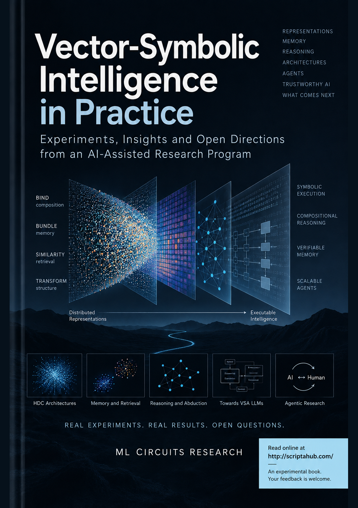
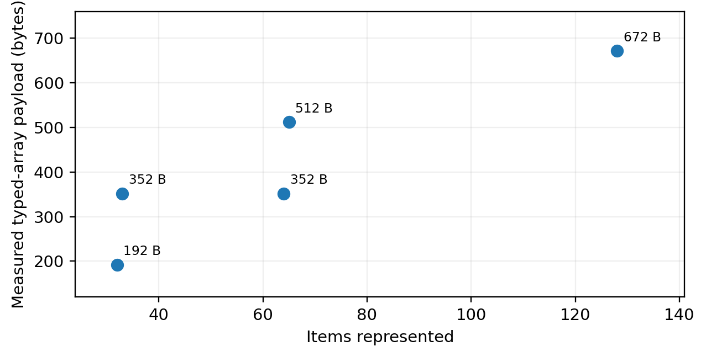
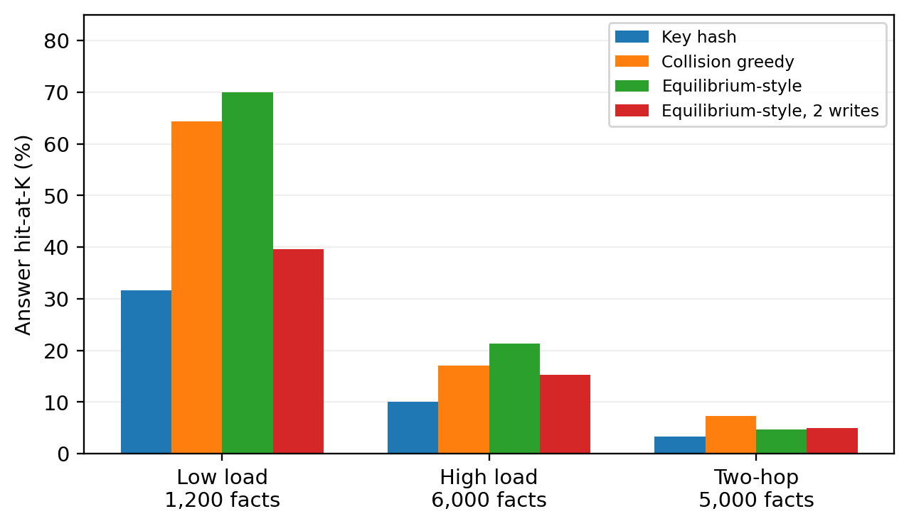
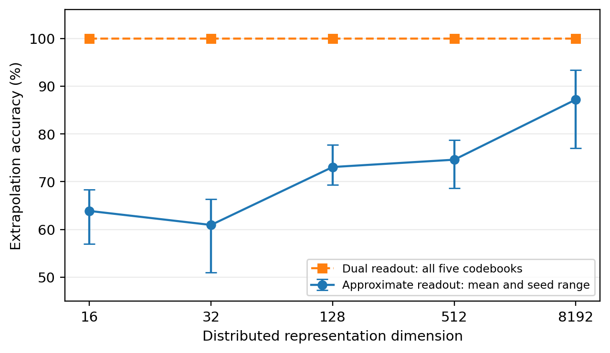
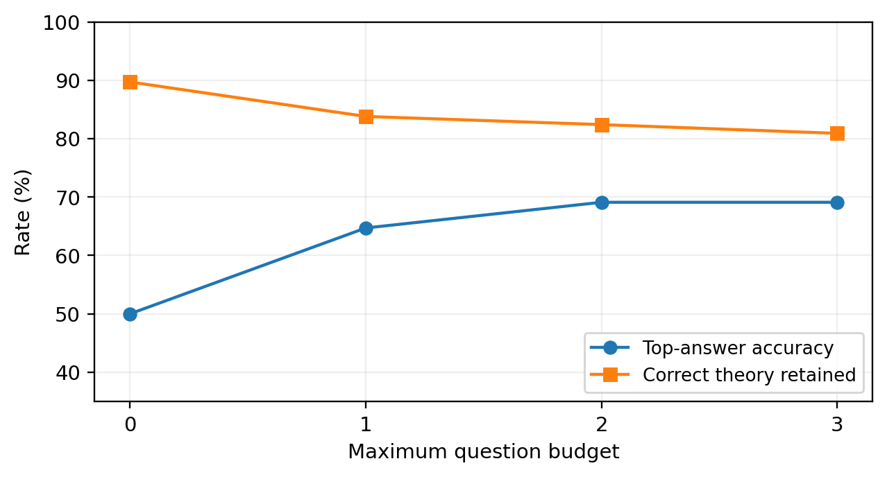

Inteligența vectorial-simbolică în practică
Experimente, perspective și direcții deschise dintr-un program de cercetare asistat de IA
O analiză IA a cincisprezece depozite de cercetare dirijată de om și asistată de IA
Ediție de cercetare · 9 septembrie 2026
Această carte este publicată deschis la http://scriptahub.com/. Este o carte experimentală de cercetare: experimentele de bază au fost dezvoltate sub îndrumare umană și cu agenți IA de programare, iar această ediție a fost produsă de o IA care a auditat acele experimente asistate de IA. Sunt binevenite replicările, contraexemplele, corecțiile și feedbackul de cercetare.
Cartea nu este o trecere în revistă exhaustivă a VSA/HDC. Ea raportează mecanisme selectate, rerulări, probe de diagnostic și întrebări deschise din instantaneele depozitelor furnizate. Afirmațiile sunt limitate de dovezile descrise în secțiunea Metode și în anexe.
Cuprins
Despre această carte experimentală de cercetare 4
Metode și limitele dovezilor 7
1. Arhitecturile de reprezentare și operatori explorate 9
2. De la algebra VSA la cerințele modelelor lingvistice 22
3. Semantica operatorilor și nepotrivirile algebrice 30
4. Reprezentări care cresc și stocare explicită 38
5. Amplasarea în memorie ținând cont de interferență 47
6. Eos Gate: descoperirea abductivă a proprietăților și decodarea HDC 55
7. Reprezentări structurale pentru evenimente și text 64
8. Predicție, transformare și compresie executabilă 72
9. Raționament exact și recuperare holografică 80
10. Păstrarea ipotezelor alternative și selectarea întrebărilor 87
11. Rutarea calculului neuronal pe bază de VSA 95
12. Circuitele SOP Lang ca arhitectură centrală actuală 102
13. Concluzii ale cercetării și experimente deschise 110
A. Dovezi din depozite și execuții 118
B. Materialele auditului și limitele reproducerii 123
Referințe și limitele noutății 126
Despre această carte experimentală de cercetare
Această carte este ea însăși parte a experimentului pe care îl descrie. Cercetarea de bază a fost dirijată de un cercetător uman și implementată în timp cu ajutor substanțial din partea agenților de programare și a altor sisteme IA. Cincisprezece instantanee de depozite au fost furnizate ulterior unei alte IA, a cărei sarcină nu era să continue narațiunea originală, ci să inspecteze implementările, să reruleze experimentele fezabile, să construiască teste suplimentare de diagnostic unde era necesar, să compare intențiile declarate cu comportamentul observat și să scrie o prezentare utilă tehnic a ceea ce pare să fi fost învățat.
Cartea este făcută publică la http://scriptahub.com/ ca material deschis de cercetare. Nu urmărește să fie o monografie definitivă despre arhitecturile vectorial-simbolice sau calculul hiperdimensional. Este o înregistrare selectivă a unui program de cercetare care a întrebat repetat dacă VSA/HDC ar putea oferi componente utile pentru o alternativă sau o completare la modelele lingvistice neuronale contemporane, capabilă de limbaj, explicabilă și eficientă computațional. Scopul publicării este să expună experimentele, inclusiv rezultatele ambigue și negative, cercetătorilor care ar putea recunoaște mecanisme ce merită testate în continuare. Feedbackul, replicările, contraexemplele și interpretările alternative sunt explicit binevenite.
Evaluarea umană centrală de la sfârșitul acestei etape de cercetare este prudentă. Reprezentările holografice și ecuațiile de raționament explorate nu au produs încă un substrat suficient de general și puternic pentru raționament fără restricții sau modelarea limbajului. În particular, operațiile BIND și BUNDLE, chiar și când sunt elegante matematic, nu par să acopere singure diversitatea operațiilor necesare pentru semantica limbajului natural, raționament în mai mulți pași, revizuire, demonstrație, planificare și memorie structurată. Această concluzie nu este tratată ca definitivă. Unele eșecuri pot fi cauzate de alegeri de implementare, decodoare, evaluare insuficientă sau un set incomplet de operatori. Rămâne posibil ca extensiile utile ale VSA/HDC să necesite reprezentări sau operații algebrice care nu au fost încă identificate.
Colecția de depozite este interesantă tocmai pentru că nu a rămas legată de o singură reprezentare. A explorat vectori continui cu valori reale, hipervectori binari denși, reprezentări polinomiale rare, vectori cu valori metrice, memorii elastice care cresc, monoame simbolice exacte, memorii HRR bazate pe vectori unitari complecși, memorii fragmentate, reprezentări episodice structurale, rutare neuronală ghidată de VSA și seturi de operatori care încep să semene cu programe executabile. Unele variante păstrează stocarea holografică de dimensiune fixă, dar tolerează interferența. Altele reduc memoria, dar modifică proprietățile algebrice. Altele abandonează dimensiunea fixă pentru a păstra mai multă structură. Altele păstrează VSA numai pentru recuperare sau control, mutând semantica de referință în structuri explicite.
Direcția arhitecturală actuală a programului mai larg folosește circuitele SOP Lang ca metaforă centrală pentru cunoaștere executabilă și raționament. Experimentele din această carte ajută la explicarea acestei tranziții. Ele arată repetat valoarea explicitării rolurilor, premiselor, transformărilor, provenienței, stării și corectării. În același timp, identifică roluri mai restrânse în care VSA/HDC poate rămâne valoroasă: adresare asociativă, recuperare aproximativă, memorie care ține cont de interferență, căutare prin similaritate, reprezentarea unor proprietăți latente limitate și rutarea calculului cu cost scăzut.
Prin urmare, această ediție are două obiective. Primul este empiric: să precizeze ce pare să fi intenționat documentația, ce implementează efectiv codul inspectat, ce a putut fi reprodus, ce a eșuat și ce măsurători necesită reinterpretare. Al doilea este generativ: să extragă întrebări de cercetare care rămân interesante științific după restrângerea afirmațiilor. Un rezultat negativ este util când identifică acel contract de operator care lipsește. Un rezultat parțial este util când izolează un mecanism. O arhitectură eșuată poate conține totuși o politică de memorie reutilizabilă, un decodor, o metodă de evaluare, o reprezentare sau o limită de verificare.
Modelul de autorat este intenționat neobișnuit. Cercetătorul uman a furnizat direcția programului, întrebările de cercetare, feedbackul și multe dintre intuițiile arhitecturale. Agenții de programare au implementat porțiuni substanțiale din depozite și, în unele cazuri, au lăsat recenzii explicite sau discuții de proiectare. IA care scrie această ediție acționează ca analist al acelor experimente om–IA. Acolo unde arhivele nu păstrează metadate fiabile despre autorat, cartea nu le inventează. Ideile sunt atribuite numai când dovezile susțin atribuirea. Mai general, cartea tratează cercetarea asistată de IA ca pe un proces de inginerie care poate fi inspectat, testat și corectat, nu ca pe o dovadă a unei capacități autonome de acțiune științifică.
Metode și limitele dovezilor
Analiza a folosit cele cincisprezece instantanee de arhivă încărcate, identificate în anexa A. Ele sunt tratate ca materiale sursă imuabile. Inspecția a acoperit implementările principale, documentele de proiectare, testele și rezultatele salvate relevante pentru întrebările discutate aici. Au fost rerulate suite de teste și experimente selectate din depozite. Au fost create probe suplimentare când o afirmație depindea de o proprietate care putea fi izolată mai direct, de exemplu dacă un decodor, nu o reprezentare, provoca o eroare observată, dacă un invers algebric era într-adevăr valabil, dacă o metrică era păstrată prin legare sau dacă un indicator de evaluare putea fi satisfăcut în mod vacuu.
În întreaga carte, un rezultat observat este unul obținut prin inspecția codului sau execuție în timpul acestui audit. Un rezultat raportat este unul prezent în documentația depozitelor furnizate sau în materialele salvate, dar nereprodus independent aici. Un rezultat propus este o direcție de cercetare sau o extensie arhitecturală care rămâne netestată. Aceste categorii sunt păstrate intenționat separat. Trecerea testelor unitare stabilește consecvența cu contractul de test implementat; nu stabilește că acel contract măsoară capabilitatea cognitivă intenționată.
Instantaneele de arhivă nu oferă un istoric GitHub activ complet, astfel că cronologia exactă a formării ideilor nu poate fi întotdeauna reconstruită. Pentru această ediție nu a fost efectuată nicio campanie de antrenare neuronală la scară largă, evaluare plătită de modele externe sau testare exhaustivă a performanței hardware. Mai multe experimente operează în lumi sintetice sau domenii simbolice limitate. Asemenea experimente sunt utile științific deoarece permit controale precise și verificări contrafactuale, însă nu sunt dovezi ale unei competențe de limbaj natural fără restricții.
Cartea nu este exhaustivă. Prioritizează mecanismele care fie au produs un semnal pozitiv interpretabil, fie au expus un mod de eșec util, fie sugerează o direcție neobișnuită de cercetare. Întrebarea principală nu este dacă VSA/HDC „funcționează” în abstract. Întrebarea utilă este ce reprezentare, operator, politică de memorie sau mecanism de verificare efectuează ce sarcină, în ce ipoteze și cu ce cost.
1. Arhitecturile de reprezentare și operatori explorate
Cel mai important rezultat preliminar al colecției de depozite este că „VSA/HDC” nu desemna o singură arhitectură. Experimentele au schimbat în mod repetat suportul reprezentării, operația de legare, operația de agregare, funcția de similaritate, politica de memorie și rolul atribuit reprezentării vectoriale. Această variație este utilă științific. Dezvăluie ce proprietăți încercau cercetătorii să păstreze și ce costuri erau dispuși să accepte în schimbul lor.
O modalitate utilă de a citi experimentele este să tratăm BIND și BUNDLE ca pe niște contracte, nu ca pe niște nume. BIND trebuie să compună două reprezentări păstrând suficientă informație pentru o operație ulterioară, adesea un UNBIND aproximativ sau exact. BUNDLE trebuie să combine mai multe reprezentări într-un singur obiect asemănător unei memorii, care rămâne legat de membrii săi. Familii VSA diferite satisfac aceste așteptări în moduri diferite. Experimentele din aceste depozite testează și dacă aceste două operații sunt suficiente. Dovezile sugerează că nu: ordinea, identitatea rolurilor, cuantificarea, structura condițională, revizuirea, proveniența și transformările asemănătoare programelor necesită în mod repetat mecanisme suplimentare.
1.1 Vectori geometrici continui: adunare, legare Hadamard și citire prin cosinus
Depozitul spock reprezintă concepte ca vectori denși cu valori reale și oferă interpretări geometrice unui mic set de operații primitive. Conceptele aleatoare sunt create într-un spațiu continuu cu multe dimensiuni. Add efectuează adunarea element cu element și este interpretat ca superpoziție. Bind efectuează produsul Hadamard. Negate înmulțește cu minus unu. Distance convertește similaritatea cosinus într-un scor. Planificarea este formulată ca deplasare prin același spațiu geometric de stări. Documentația introduce în plus o direcție canonică a adevărului și încearcă să codifice dovezi graduale prin aliniere sau scalare. [R01]
Avantajul intenționat este uniformitatea conceptuală. Același suport numeric poate susține similaritatea, superpoziția, deplasarea continuă și operațiile compoziționale. O asemenea arhitectură este atractivă dacă raționamentul poate fi redus la transformări netede ale căror distincții relevante sunt păstrate de geometrie. De asemenea, se potrivește natural cu calculul numeric dens eficient.
Implementarea expune însă o problemă importantă de contract. Legarea Hadamard este autoinversă numai pentru anumite familii de operanzi, precum vectorii bipolari cu coordonate restrânse la plus sau minus unu. spock generează vectori reali de tip gaussian, astfel că înmulțirea unui vector legat cu unul dintre factori nu îl recuperează, în general, pe celălalt. Documentația folosește uneori intuiția bipolară mai puternică atunci când descrie implementarea cu valori reale. Aceasta nu face inutilă înmulțirea Hadamard; înseamnă că semantica atribuită lui BIND trebuie să corespundă suportului real al reprezentării.
Un al doilea rezultat al auditului privește încrederea. Dacă un vector este înmulțit cu un scalar pozitiv și următoarea operație folosește numai similaritatea cosinus, mărimea scalarului dispare. Prin urmare, o stare menită să reprezinte dovezi mai puternice poate deveni imposibil de deosebit de una mai slabă când este interpretată numai prin cosinus. [A04] Lecția mai largă este că sensul semantic nu poate fi atribuit independent unei operații, presupunând apoi că va supraviețui oricărei metode ulterioare de citire. Reprezentarea, operatorii și decodoarele formează un singur sistem.
Această arhitectură rămâne interesantă ca exemplu a ceea ce ar trebui să realizeze un substrat geometric general. O versiune viitoare ar putea atribui tipuri distincte unor mărimi precum încrederea, separat de direcție, ar putea folosi familii de legare inversabile sau unitare ori ar putea învăța transformări sub constrângeri algebrice explicite. Ceea ce experimentul actual nu susține este ideea mai puternică potrivit căreia adunarea, înmulțirea Hadamard și similaritatea cosinus constituie deja o algebră generală a raționamentului.
1.2 HDC binar dens: legare XOR și agregare prin majoritate
HDC-RE și componenta de execuție de referință din VSARepresentations folosesc o proiectare HDC binară mai convențională. Un concept este un vector dens de biți, cu multe dimensiuni. BIND este XOR bit cu bit. Deoarece XOR este autoinvers, bind(bind(a,b),b) returnează exact a atunci când toți operanzii au aceeași geometrie. BUNDLE folosește votul majoritar la fiecare poziție de bit. Similaritatea este derivată din distanța Hamming. [R02, R03]
Atractivitatea acestei reprezentări este clară. Legarea este simplă computațional, exactă și simetrică. Un vector binar mare este ieftin de manipulat pe CPU folosind operații pe biți la nivel de cuvânt. Vectorii aleatori ai atomilor sunt aproximativ ortogonali în spații cu multe dimensiuni, iar agregarea poate stoca o superpoziție cu zgomot din care membrii pot fi încă recunoscuți prin similaritate. Prin urmare, modelul oferă o separare compactă și mecanic clară între asociere și superpoziția de tip mulțime.
Sacrificiul este la fel de clar. Agregarea prin majoritate pierde informație. Pe măsură ce sunt agregate mai multe elemente, contribuția oricărui element individual concurează cu agregatul biților fără legătură. Memoria de dezambiguizare și un vocabular de candidați devin parte a mecanismului de recuperare. Stocarea de dimensiune fixă nu păstrează fără interferență multiplicitatea structurată arbitrară sau fiecare atribuire de rol. XOR este și comutativ, astfel că ordinea și relațiile direcționale necesită vectori de rol expliciți, permutări, codificări de poziție sau o altă operație.
HDC-RE este deosebit de instructiv deoarece motorul său de raționament nu se bazează numai pe algebra hipervectorilor. Implementarea inspectată combină similaritatea HDC cu potriviri simbolice directe, lanțuri de reguli și alte căi explicite de raționament. [R02] Această hibridizare dovedește că proiectul însuși a întâlnit o limită practică: obligațiile logice exacte sunt mai ușor de controlat când sunt reprezentate explicit, în timp ce HDC poate ajuta în continuare la recuperarea candidaților și potrivirea aproximativă.
Prin urmare, HDC binar dens rămâne o referință de bază utilă în întreaga carte. Oferă un contract de legare puternic și simplu și o sursă bine înțeleasă de zgomot la agregare. Reprezentările mai noi pot fi evaluate întrebând ce îmbunătățesc față de această referință și ce proprietăți pierd în schimb.
1.3 HDC polinomial rar: reducerea stocării prin schimbarea suportului reprezentării
Componenta polinomială rară din VSARepresentations încearcă o reducere mult mai agresivă a memoriei. În loc de mii de coordonate dense, un vector este reprezentat printr-o mulțime mică de exponenți întregi pe 64 de biți. Configurația implicită documentată folosește doar câțiva exponenți. BIND calculează produsul cartezian al celor două mulțimi de exponenți și combină fiecare pereche prin XOR pe întregi. BUNDLE efectuează reuniunea mulțimilor, urmată de rarefiere când numărul exponenților depășește bugetul configurat. Similaritatea este suprapunerea Jaccard. [R03]
Câștigul intenționat este substanțial: un concept poate fi reprezentat printr-un număr foarte mic de întregi, iar similaritatea poate fi calculată pe mulțimi rare. Această arhitectură întreabă dacă comportamentul algebric util al HDC poate supraviețui când majoritatea coordonatelor sunt eliminate, iar reprezentarea este tratată mai degrabă ca un polinom rar sau o mulțime de exponenți simbolici.
Rezultatul critic este că algebra se schimbă. Comentariile implementării sugerează că anularea XOR ar trebui să susțină o operație asemănătoare inversării, însă produsul cartezian complet al mulțimilor nu satisface, în general, intuiția simplă a anulării odată ce termenii duplicați sunt contopiți prin semantica mulțimilor. Un contraexemplu direct din audit demonstrează eșecul chiar înainte să fie necesară etapa obișnuită de rarefiere. [A04] Rarefierea adaugă o a doua sursă de pierdere a informației, deoarece este păstrată numai o submulțime limitată a termenilor generați.
Acesta este un eșec util științific. Arată că o optimizare a stocării nu poate fi evaluată numai prin dimensiunea memoriei sau precizia sarcinii. Dacă reprezentarea este destinată să susțină raționament algebric, legile operatorilor însele fac parte din specificație. Un suport rar ar putea rămâne valoros dacă semantica sa este reformulată în jurul incluziunii aproximative, recuperării probabiliste sau altei operații bine definite. Greșeala ar fi păstrarea interpretării XOR dense după înlocuirea algebrei de bază cu produse carteziene cu valori de tip mulțime și eliminare de termeni.
Experimentul sugerează și o direcție mai largă de cercetare. Reprezentările rare pot fi mai potrivite pentru structuri factorizate explicite decât pentru imitarea vectorilor holografici denși. Dacă termenii rari sunt tratați ca componente inspectabile și sistemul înregistrează cum au fost compuși, arhitectura începe să semene cu un circuit executabil sau un graf simbolic de factori. Această direcție schimbă o parte din eleganța holografică pe auditabilitate și creștere controlabilă.
1.4 HDC metric-afin: introducerea vecinătăților numerice
Componenta metric-afină reprezintă un atom ca vector de octeți de lungime fixă, nu de biți. BIND rămâne XOR octet cu octet, însă BUNDLE devine o medie aritmetică, iar similaritatea se bazează pe distanța Manhattan normalizată. Motivația este obținerea unei geometrii mai „difuze”, în care apropierea numerică a coordonatelor este semnificativă, în loc să trateze egal fiecare nepotrivire de bit. [R03]
Această proiectare este interesantă deoarece caută explicit o noțiune mai bogată de vecinătate. Un vector majoritar de biți are o geometrie discretă; un spațiu cu valori pe octeți poate reprezenta diferențe graduale între coordonate, iar medierea produce un centroid natural. Dacă similaritatea semantică ar putea fi făcută să urmeze acea geometrie, reprezentarea ar putea susține interpolare mai netedă, păstrând legarea XOR ieftină a HDC binar.
Auditul arată de ce combinarea unor operatori individual rezonabili poate crea o algebră inconsistentă. XOR nu este o izometrie a distanței numerice Manhattan obișnuite pe valori de octeți. Doi vectori pot fi apropiați în metrica pe octeți, pot fi legați cu aceeași cheie și apoi să nu mai rămână la fel de apropiați. Nici media aritmetică rotunjită implementată nu satisface o relație distributivă simplă cu legarea XOR. [A04] Prin urmare, geometria similarității și geometria legării nu sunt aliniate.
Aceasta nu implică faptul că XOR și distanța L1 nu pot coexista niciodată într-un sistem util. Înseamnă că arhitectura trebuie să specifice ce proprietăți sunt necesare după legare. Dacă similaritatea este folosită numai pe vectori atomici nelegați, incompatibilitatea poate fi acceptabilă. Dacă sistemul se așteaptă ca vecinătățile semantice să rămână stabile prin compoziție, este necesară o altă acțiune de grup, distanță sau reprezentare. Experimentul identifică astfel o problemă deschisă concretă: proiectarea unui suport în care operația de legare dorită să fie compatibilă cu măsura de similaritate care dă sens spațiului.
1.5 Memorie metric-afină elastică: creșterea stocării în locul comprimării indefinite
Componenta metric-afină elastică păstrează atomii cu valori pe octeți și legarea XOR, dar schimbă substanțial BUNDLE. În loc să reducă fiecare superpoziție la un singur vector mediu, stochează o secvență de blocuri medii cu capacitate limitată. Când sunt adăugați mai mulți atomi, se alocă blocuri noi. Similaritatea dintre o agregare și un atom caută în mediile blocurilor și returnează cea mai bună potrivire. Legarea unei agregări cu un atom transformă fiecare bloc. Legarea a două agregări construiește un produs cartezian al blocurilor lor. [R03]
Obiectivul cercetării este direct: relaxarea ipotezei că memoria semantică trebuie să rămână de dimensiune fixă. Dacă sistemul învață mai mult, poate aloca mai multă stare. Aceasta este mai aproape de memoria obișnuită a calculatorului și de feedbackul uman care motivează programul mai larg. O arhitectură utilă de memorie ar trebui lăsată să crească atunci când compactarea ar distruge informații necesare sarcinilor viitoare.
Auditul confirmă că implementarea își mărește efectiv volumul de date din tablouri tipizate în configurația măsurată. Confirmă și compatibilitatea deterministă a prefixelor la generarea atomilor atunci când este cerută o dimensiune mai mare. [A04] Acestea sunt proprietăți inginerești pozitive. Nu trebuie confundate cu o dovadă că toate informațiile anterioare pot fi reconstruite după o extindere arbitrară. Generarea atomilor cu prefixe stabile spune că atomii mai mari generați ulterior sunt compatibili cu prefixele lor mai scurte; nu fabrică coordonate care nu au fost niciodată stocate într-o agregare veche.
Principalul sacrificiu este că reprezentarea nu mai este o singură hologramă de dimensiune fixă. Păstrează stare auxiliară, iar legarea între agregări poate multiplica numărul blocurilor. Arhitectura mută astfel întrebarea de cercetare de la „Cât poate memora un vector?” la „Când ar trebui memoria să aloce un alt bloc, să păstreze starea sursă sau să compacteze?”. Aceasta este o întrebare mai generală de sisteme și va rămâne probabil relevantă chiar și în afara VSA/HDC.
O continuare deosebit de promițătoare ar face ca alocarea să fie determinată de obligații. Sistemul ar putea crește când marjele de recuperare scad sub un prag, când un rol semantic nou nu poate fi reprezentat fără coliziune sau când proveniența trebuie păstrată pentru verificare. O asemenea politică nu este demonstrată de depozitul actual, însă reprezentarea elastică oferă un substrat experimental pentru testarea ei.
1.6 Reprezentări monomiale exacte: eliminarea zgomotului holografic cu prețul expansiunii
Componenta exactă din VSARepresentations face cea mai radicală schimbare. O reprezentare este o listă de monoame exacte, implementate ca mulțimi de biți codificate în valori BigInt. BUNDLE formează reuniunea termenilor. BIND formează toate reuniunile perechi ale biților atomilor. UNBIND este implementat ca o operație reziduală asemănătoare câtului: dacă componenta interogată este inclusă într-un termen compus, biții interogării sunt eliminați, iar reziduul este returnat. [R03]
Această proiectare elimină zgomotul obișnuit de coliziune al unei superpoziții holografice cu lățime fixă. O interogare poate recupera structuri reziduale explicite, în loc să le deducă numai din similaritatea vectorială. Arhitectura este astfel utilă pentru a întreba dacă dificultatea atribuită VSA este cauzată fundamental de reprezentarea aproximativă sau de combinatorica structurii înseși.
Rezultatul este instructiv. Exactitatea nu oferă capacitate gratuită. Legarea a două agregări le extinde combinațiile. O construcție simplă din audit, cu douăsprezece alternative binare independente, produce 4.096 de termeni expliciți. [A04] Nici factorii repetați nu sunt păstrați în același mod ca într-un invers de grup, deoarece reuniunea mulțimilor este idempotentă. Acestea nu sunt defecte de implementare; decurg din semantica aleasă.
Reprezentarea expune un compromis fundamental. Un vector holografic de dimensiune fixă poate comprima multe structuri, dar plătește prin interferență și dezambiguizare incertă. O structură enumerativă exactă elimină acea ambiguitate, însă se poate extinde exponențial. O a treia opțiune este păstrarea unei expresii factorizate și amânarea expansiunii până când o cere o interogare. Din nou, acea a treia opțiune seamănă cu un circuit: păstrarea grafului compoziției, executarea numai a ramurii necesare și păstrarea provenienței transformării.
Acest experiment este una dintre cele mai puternice punți conceptuale de la cercetarea VSA la SOP Lang. Sugerează că obiectul care merită păstrat s-ar putea să nu fie deloc un vector final, ci o expresie executabilă ale cărei noduri pot folosi operații vectoriale atunci când acestea sunt avantajoase.
1.7 HRR cu vectori unitari complecși: dezlegare aproximativă și fragmentare care ține cont de interferență
VSANash revine la o proiectare clasică de reprezentare holografică redusă. Simbolurile și memoriile sunt reprezentate în domeniul frecvenței prin vectori complecși. Legarea corespunde înmulțirii complexe element cu element, echivalentă cu convoluția circulară în domeniul timpului. Cheile sunt construite ca unitare, astfel încât legarea inversă să fie stabilă. Faptele sunt suprapuse prin adunare. Recuperarea dezleagă din memorie o cheie subiect–relație și folosește similaritatea cosinus față de vectorii entităților candidate. [R04]
Reprezentarea este mai bine potrivită matematic inversului intenționat decât implementarea Hadamard timpurie cu valori reale. Face și interferența explicită: fiecare fapt fără legătură suprapus în aceeași memorie contribuie cu energie reziduală după dezlegare. VSANash nu încearcă să elimine algebric această proprietate. În schimb, întreabă dacă un ansamblu de memorii HRR limitate poate fi organizat astfel încât faptele care interferează reciproc să fie plasate în fragmente diferite.
Această schimbare de focalizare este semnificativă. Reprezentarea rămâne holografică, însă algoritmul principal devine o politică de alocare a memoriei. Depozitul compară hashing simplu, împachetare, euristici care țin cont de coliziuni, amplasare de tip echilibru și variante cu scriere multiplă. La rerularea scenariului cu încărcare redusă, amplasarea care ține cont de recuperare a produs o îmbunătățire substanțială a recuperării răspunsurilor față de hashingul simplu al cheilor. Aceeași abordare nu a eliminat colapsul la încărcare mai mare sau în condiții mai dificile cu mai mulți pași. [A03]
VSANash conține și componente bipolare și XOR cu majoritate, care oferă variante de control discrete pentru implementarea HRR. Aceste variante de control sunt importante deoarece un câștig din amplasarea memoriei nu ar trebui atribuit automat convoluției circulare sau numerelor complexe. Contribuția potențial interesantă este strategia de amplasare care ține cont de interferență, care ar putea fi aplicabilă mai multor familii de memorii asociative.
Acest experiment schimbă astfel întrebarea de cercetare din „Care operator de legare este cel mai bun?” în „Cum ar trebui alocată, rutată și replicată o memorie aproximativă, astfel încât eroarea ei să rămână măsurabilă și controlabilă?”. Pentru sisteme agentice cu memorie de lungă durată, aceasta poate fi mai importantă practic decât găsirea unui alt BIND elegant matematic.
1.8 Dincolo de BIND și BUNDLE: transformări explicite, indexuri structurale și rutare
Mai multe depozite reduc treptat responsabilitatea semantică atribuită suportului VSA. Acesta este, în sine, un rezultat arhitectural important.
BSP explorează transformări explicite ale mulțimilor de biți, inclusiv XOR, AND, OR, permutare, identitate și negație, împreună cu tipare de transformare învățate sau descoperite. Documentația tratează aceste operații ca pe un set de instrucțiuni pentru compresie geometrică, în loc să insiste că orice transformare semantică trebuie exprimată printr-o singură pereche BIND/BUNDLE. [R09] Experimentul este incomplet ca model lingvistic general, iar un indicator de evaluare s-a dovedit defectuos, însă ideea extinderii operatorilor rămâne relevantă. Raționamentul în limbaj natural poate necesita o bibliotecă de transformări tipizate a căror aplicabilitate este învățată sau planificată.
VSABrains2 și VSAText păstrează mai multă structură explicită a evenimentelor și rolurilor. În aceste sisteme, câmpurile exacte, corespondențele rol–valoare, schemele sau înregistrările episodice coexistă cu mecanisme de adresare ori recuperare de tip vectorial. [R05, R06] Aceasta sacrifică ambiția ca un singur obiect holografic să fie reprezentarea canonică a sensului. În schimb, arhitectura poate păstra mai direct distincții precum subiectul, obiectul, ordinea evenimentelor și proveniența. Auditul arată și de ce contează: un codificator care pierde ordinea rolurilor nu o poate recupera ulterior, indiferent de calitatea căutării vectoriale.
VSA-PathMoE restrânge și mai mult rolul VSA. Folosește o reprezentare vectorial-simbolică pentru a selecta ce experți neuronali ar trebui să proceseze o cerere. Starea VSA este un semnal de control, nu depozitarul întregului conținut semantic. [R15] Acesta poate fi un punct de sosire productiv pentru o parte a cercetării: VSA poate contribui cu rutare deterministă, compozițională sau ieftină, fără să i se ceară implementarea fiecărei forme de raționament.
Aceste arhitecturi indică un principiu general de proiectare. VSA/HDC ar trebui evaluată ca o resursă computațională printre altele. Un sistem poate folosi vectori holografici pentru asociere, structuri exacte pentru identitate semantică, circuite pentru transformare, rezolvitoare formale pentru demonstrație și modele neuronale pentru percepție sau generare. Întrebarea științifică devine cum schimbă aceste componente informație tipizată și cum poartă fiecare rezultat suficientă proveniență pentru a putea fi verificat.
1.9 Ce a stabilit până acum explorarea reprezentărilor
Nicio reprezentare din experimentele furnizate nu demonstrează simultan stocare de dimensiune fixă, recuperare structurală exactă, raționament algebric general, învățare eficientă, competență lingvistică în domenii deschise și execuție simplă pe CPU. Nu este surprinzător; aceste cerințe trag în direcții diferite. Valoarea experimentelor constă în concretizarea compromisurilor.
Abordarea geometrică continuă oferă similaritate netedă, dar garanții slabe pentru operatori. HDC binar dens oferă inversare XOR exactă, dar stocare prin majoritate cu zgomot. HDC polinomial rar reduce stocarea, dar schimbă algebra și depinde de eliminarea termenilor. HDC metric-afin îmbogățește structura vecinătăților, dar combină o metrică cu o operație de legare care nu păstrează acea metrică. Memoria elastică păstrează mai multă informație prin creștere. Monoamele exacte elimină zgomotul holografic, dar expun expansiunea combinatorică. HRR oferă un invers aproximativ fundamentat, rămânând totuși constrânsă de interferența superpoziției. Fragmentarea îmbunătățește o parte a acelei probleme fără să rezolve raționamentul la încărcare mare. Hibrizii structurali și rutarea VSA obțin utilitate atribuind vectorilor un rol mai restrâns.
Acest tipar susține concluzia cercetătorului uman că programul nu ar trebui să rămână angajat față de VSA/HDC ca unic substrat central. Nu susține abandonarea completă a VSA/HDC. Mai multe experimente sugerează contribuții mai restrânse și testabile, iar posibilitatea unor operatori noi rămâne deschisă. În particular, o reprezentare neexplorată ar putea fi importantă dacă satisface un set de contracte de operator pe care componentele actuale nu le pot satisface împreună: compoziție sensibilă la roluri, creștere limitată sau factorizată, similaritate compatibilă cu legarea, actualizare reversibilă și proveniență explicită.
Capitolele următoare examinează experimentele după funcția științifică, nu după familia de reprezentări. Catalogul reprezentărilor din acest capitol ar trebui păstrat în vedere: multe succese sau eșecuri aparente de raționament pot fi interpretate corect numai după identificarea exactă a suportului, a operațiilor BIND și BUNDLE și a semanticii similarității și dezambiguizării folosite în acel experiment.
2. De la algebra VSA la cerințele modelelor lingvistice
Acest capitol examinează întrebarea originală de la nivelul sistemelor aflată în spatele colecției de depozite: dacă o familie suficient de mică de operații vectoriale ar putea servi drept nucleu computațional al unui sistem capabil de limbaj. Experimentele nu implementează o singură arhitectură. Testează obligații diferite — identitate, recuperare, compoziție, predicție, demonstrație, adaptare și control. Rezultatul principal este astfel arhitectural: un sistem lingvistic util necesită mai multe tipuri distincte de calcul, iar succesul unuia nu stabilește o algebră generală pentru celelalte.
2.1 Un model lingvistic necesită mai multe obligații computaționale
Să luăm o instrucțiune simplă: rezumă ce i s-a întâmplat unui obiect, explică de ce s-a mișcat și distinge ceea ce știe naratorul de ceea ce crede un personaj. Chiar și această sarcină mică include mai multe calcule diferite. Sistemul trebuie să identifice obiectul în propoziții diferite, să păstreze ordinea evenimentelor, să distingă un eveniment de o relatare despre el, să decidă ce relație cauzală este justificată și să selecteze informația potrivită rezumatului cerut. Producerea propoziției finale este un alt calcul. O reprezentare poate face ieftină una dintre aceste operații, făcând alta dificilă sau imposibil de recuperat.
Cele cincisprezece depozite abordează părți diferite ale acestei probleme. Experimentele spock și HDC-RE investighează dacă o algebră mică pe vectori poate susține raționamentul. VSARepresentations întreabă dacă suportul însuși ar trebui schimbat: vectori binari, expresii rare, vectori metrici, colecții elastice sau termeni simbolici exacți. VSANash studiază unde să amplaseze memorii distribuite astfel încât să interfereze mai puțin. VSABrains2 și VSAText organizează informație episodică și narativă. Eos Gate, din vsaAbduction, testează dacă o proprietate poate fi dedusă din observații și folosită pentru a prezice sau repara configurații. BSP, SomaVM și VSAVM explorează predicția, compresia, adaptarea locală sau unitățile executabile. CNL, UBHNL și HoloProof se îndreaptă spre reprezentări semantice explicite și execuție controlată. autoResearchLib păstrează explicații alternative și alege întrebări. vsaLLM folosește VSA pentru a selecta calculul neuronal, nu pentru a-l înlocui. [R01–R15]
Numirea tuturor acestor încercări „un model lingvistic VSA” este de înțeles ca direcție de cercetare, dar înșelătoare ca descriere experimentală. Rezultatele, condițiile de eșec și criteriile de succes diferă. Un sistem de recuperare a faptelor răspunde dintr-un vocabular finit. Un demonstrator de teoreme verifică dacă o afirmație decurge dintr-o logică specificată. Un predictor de octeți estimează continuări. Un sistem de învățare abductivă identifică un membru al unei clase restrânse de ipoteze. Fiecare poate contribui la o arhitectură capabilă de limbaj. Niciunul nu dobândește celelalte capabilități doar pentru că starea sa poate fi numită hipervector.
Această distincție schimbă sensul generalității. Un operator poate fi general pe un domeniu matematic: XOR se aplică oricărei perechi de șiruri binare de lungime egală. Asta nu îl face o operație generală asupra sensurilor. Pentru a obține un pas de raționament din XOR, codificarea trebuie să mapeze relația semantică relevantă la ceva ce XOR păstrează. O a doua operație poate necesita o codificare diferită sau structură suplimentară. Programul întâlnește repetat acest decalaj dintre o operație definită peste tot și o operație utilă peste tot.
Literatura VSA examinată descrie deja mai multe modele, transformări și aplicații cognitive, nu o singură algebră universală. Ea clarifică și de ce familia este atractivă: reprezentările distribuite pot combina structura simbolică cu un calcul sensibil la similaritate. Acestea sunt proprietăți inițiale utile, nu o specificație pentru înțelegerea fără restricții a limbajului. Comparația potrivită nu este deci între inteligența „simbolică” și cea „vectorială” ca esențe concurente, ci între mecanisme concrete cu obligații declarate. [L01, L02]
O obligație instructivă este păstrarea rolurilor. Dacă „Alice îl ajută pe Bob” și „Bob o ajută pe Alice” sunt codificate identic, niciun decodor ulterior care primește numai acea codificare nu le poate distinge fiabil. Nu este o lipsă de date de antrenare pentru decodor. Este o egalitate introdusă de codificator. O altă obligație este calibrarea. Dacă încrederea este înmulțită într-un vector și etapa următoare folosește numai similaritatea cosinus, încrederea poate dispărea. O a treia este acoperirea. Dacă un rezolvitor demonstrează o afirmație despre o submulțime recuperată, răspunsul său poate să nu se aplice întregii baze de cunoștințe. Aceste eșecuri ocupă straturi diferite și necesită reparații diferite.
Nemulțumirea utilizatorului față de o ecuație holografică universală a raționamentului devine mai precisă când este exprimată în acești termeni. O arhitectură lingvistică utilă trebuie să păstreze distincțiile cerute de sarcinile sale, să ofere operatori care acționează corect asupra acelor distincții și să controleze modul în care rezultatele parțiale devin răspunsuri acceptate. Codul furnizat conține dovezi de eșecuri la toate cele trei straturi. Conține și modalități utile de a le aborda, adesea prin introducerea unor structuri explicite care nu mai seamănă cu o singură stare holografică de dimensiune fixă.
Aceasta nu face VSA irelevantă. Un sistem lingvistic depune efort substanțial pentru căutare, asociere, selectare și reutilizare. Reprezentările distribuite aproximative pot fi bine potrivite acestor operații. Întrebarea este dacă ar trebui să fie și singura autoritate pentru identitate, domeniu de aplicare, demonstrație și actualizări ale memoriei. Experimentele sugerează din ce în ce mai mult că aceste responsabilități ar trebui să fie separabile. Aceasta este o concluzie arhitecturală susținută de distribuția punctelor forte și slabe observate, nu o teoremă care exclude alte arhitecturi.
2.2 Ce au schimbat inspecția codului și rerulările
Instantaneele furnizate au făcut posibil un alt tip de carte. În loc să repet descrierile depozitelor, am putut întreba dacă codul implementează operația pretinsă, dacă testul măsoară abilitatea pretinsă și dacă un eșec supraviețuiește unei schimbări controlate. Investigația a acoperit inventarul tuturor celor cincisprezece arhive, căi selectate din implementările de bază și documente de proiectare, programe de rulare a testelor, materiale experimentale salvate și rerulări fezabile. Nu a fost un audit exhaustiv de securitate sau o revizuire linie cu linie a fiecărui fișier. [A01, A02]
Prima lecție a fost că suitele de teste trecute nu au un sens comun. Programul de testare spock a finalizat 350 de verificări. VSAText a finalizat 268. HoloProof a finalizat 73 de teste, însă evaluarea sa separată de funcționare de bază a produs douăsprezece erori de rezolvitor, deoarece executabilele externe așteptate nu erau disponibile. Comanda implicită de dezvoltare UBHNL s-a încheiat cu succes, raportând explicit că nu fuseseră implementate teste de dezvoltare; testele sale separate pentru AST tipizat au trecut. Acestea sunt observații diferite. Adunarea tuturor într-un singur număr impresionant ar elimina tocmai distincțiile pe care auditul trebuie să le păstreze. [A02, A03]
A doua lecție a fost că numărul eșecurilor poate fi la fel de înșelător. VSARepresentations a trecut 807 din 808 teste din suita selectată; testul eșuat privea un punct de intrare CommonJS lipsă. autoResearchLib a trecut optsprezece din nouăsprezece teste; testul rămas se aștepta la o anumită structură de proiecte surori absentă din aceste arhive. VSAVM a trecut 305 din 307 teste, iar cele două eșecuri au fost cauzate de o eroare locală de ordine a declarării în codul JavaScript de generare. Niciuna dintre aceste observații nu stabilește o limită matematică a VSA. Ele stabilesc probleme de împachetare, mediu sau implementare. [A02]
Pentru VSAVM a fost posibilă o mică reparație cauzală. Codul folosea budgetMs înainte de declarația sa const, producând o excepție de zonă temporală moartă. Mutarea declarației înainte de utilizare, fără schimbarea algoritmului de învățare, a făcut ca întreaga suită selectată să treacă toate cele 307 teste. Modificarea și ambele jurnale sunt incluse în materialul însoțitor. Aceasta este o dovadă mai puternică decât simpla presupunere că „ingineria ar putea fi problema”. În acest caz, o anumită eroare de inginerie a cauzat eșecurile observate. Este și mai restrânsă decât afirmația că reparația a creat un model lingvistic competent. Testele trecute stabilesc în continuare numai ceea ce verifică acele teste. [A07]
Alte rezultate s-au deplasat în direcția opusă. Evaluarea negației abstracte din BSP raporta precizie perfectă, însă regula de punctare considera un caz corect când tokenul interzis lipsea din lista de candidați. O probă nouă a furnizat un motor neantrenat care nu returna niciun candidat. A primit 1.000 de evaluări corecte din 1.000 de cazuri. Rezultatul principal a supraviețuit, însă interpretarea intenționată nu. Nu era o problemă minoră de rotunjire. Măsurarea nu cerea nicio competență pozitivă. [A06]
Experimentul Eos Gate a produs o răsturnare mai încurajatoare. Implementarea originală a învățat un invariant simbolic util, însă citirea sa HDC pierdea precizie. Inspecția codificării a arătat că aceasta rămânea o transformare liniară de rang complet a douăsprezece caracteristici în configurațiile testate. Înlocuirea unui decodor aproximativ bazat pe produs scalar cu o citire duală a recuperat mărimea țintă până la precizia numerică. În douăzeci și cinci de dicționare de coduri eșantionate, noua citire a clasificat corect fiecare partiție testată. Aici, rezultatul mai slab ascunsese informație recuperabilă. [A05]
Aceste observații stabilesc tonul cărții. Nu este suficient să clasificăm depozitele ca succese sau eșecuri. Obiectul important este explicația cauzală: un codificator a șters o distincție, un decodor a introdus interferență între componente, o regulă de punctare a recompensat tăcerea, o excepție de execuție a întrerupt generarea, un validator simbolic a salvat un candidat sau o politică de amplasare a memoriei a redus interferența. Odată identificată cauza, următorul experiment devine mult mai clar.
Aceasta este și principala valoare a folosirii unui analist IA după agenți IA de programare. IA suplimentară nu ar trebui doar să producă încă o explicație încrezătoare a acelorași materiale. Ar trebui să creeze intervenții care disting explicațiile concurente. Această ediție conține câteva asemenea intervenții, dar același standard li se aplică și lor. Sursa, intrările, ieșirile și limitele lor sunt expuse, astfel încât un alt cercetător să poată contesta interpretarea, nu să accepte autoritatea prozei.
2.3 Cum este evaluată noutatea în această carte
Un program de cercetare poate genera noutate valoroasă fără să producă o nouă arhitectură universală. Un tip de noutate este un mecanism: un mod diferit de a aloca memoria, de a decoda o reprezentare sau de a combina operatori. Altul este un fapt empiric despre o implementare specifică. Un al treilea este o explicație care înlocuiește o prezentare anterioară a motivului pentru care ceva a funcționat sau a eșuat. Un al patrulea este o întrebare de cercetare formulată suficient de precis pentru a putea fi tranșată printr-un experiment. Cartea păstrează aceste categorii separat.
Noul experiment de citire duală este în primul rând un rezultat explicativ. Matematica sa este algebră liniară obișnuită, iar lucrări VSA înrudite studiază deja citirea liniară în locul căutării prin similaritate. Valoarea sa aici este să arate că eroarea Eos observată nu este o dovadă a unei pierderi inevitabile de informație în codificarea testată. Operația de bază nu ar trebui prezentată ca nou inventată. Diagnosticul cauzal este nou în acest audit și schimbă modul în care ar trebui interpretat acel experiment. [A05; L06]
Proba negației este un rezultat de măsurare. Demonstrează o proprietate a unui evaluator concret: o mulțime goală de răspunsuri îi satisface criteriul. Nu se pretinde o nouă teorie a negației. Totuși, rezultatul este important deoarece schimbă dovezile disponibile pentru selectarea unei direcții de cercetare. Un program care ar confunda acest scor cu abilitatea de raționament ar putea întări mecanismul greșit. Un program care repară evaluatorul învață ce poate face efectiv sistemul său.
VSANash este mai aproape de o posibilă contribuție la nivel de mecanism. Politicile sale de amplasare folosesc comportamentul recuperării și încărcarea când decid unde ar trebui să se afle faptele. În configurația rerulată cu încărcare redusă, o politică de tip echilibru a îmbunătățit recuperarea mulțimii clasate pe primul loc față de variante de control fragmentate mai simple. Aceasta nu este suficient pentru a stabili originalitate la nivelul unei publicații sau superioritate generală. Identifică însă o cuplare concretă care merită testată: amplasarea stocării informată tocmai de interferența care face ulterior dificilă recuperarea. [R04; A03]
Reprezentările elastice și exacte ridică un alt tip de întrebare. Nu arată că o cantitate nelimitată de cunoaștere încape într-un hipervector fix. În schimb, expun moduri diferite în care starea reprezentării poate crește. Blocurile noi păstrează contribuțiile anterioare. Atomii simbolici noi extind un univers exact. Combinațiile carteziene păstrează alternativele, riscând însă expansiunea exponențială. Contribuția utilă poate consta într-o politică ce alege între aceste moduri de creștere în funcție de operațiile cerute de o sarcină. Acea politică este propusă mai târziu în carte; nu este atribuită tacit unui cod care implementează numai componente individuale.
În cele din urmă, orientarea către circuite SOP Lang este o ipoteză arhitecturală informată de colecție. Nu este o pretenție de a fi inventat grafuri de flux de date, interfețe de demonstratoare de teoreme, proveniență sau sinteză de programe. Aceste idei au istorii substanțiale. Contribuția propusă este o anumită împărțire a responsabilității: structură semantică executabilă ca obiect canonic, reprezentări aproximative ca acceleratoare opționale și obligații explicite la fiecare conversie dintre ele. Întrebarea noutății privește dacă această compoziție produce un comportament mai bun, nu dacă termenul „circuit” este nou.
Expresia „nou în acest audit” este intenționat modestă, dar nu minimalizatoare. Un invariant fals descoperit în codul sursă este o constatare reală. Un decodor care elimină o limită aparentă a reprezentării este o constatare reală. O politică de întrebări care devine mai încrezătoare în timp ce elimină ipoteza corectă este o constatare reală. Valoarea lor științifică crește când domeniul lor de valabilitate este exact și reproducerea lor este ieftină.
Cercetătorul uman a furnizat ambiția programului și problema decizională care contează acum: dacă arhitectura ar trebui să rămână centrată pe VSA/HDC. Agenți anteriori au ajutat la construirea implementărilor și documentelor; anumite recenzii recunosc autoratul IA. Această IA contribuie cu o inspecție, mai multe probe noi și o sinteză. Fără înregistrări complete ale dezvoltării, ar fi nepotrivit să atribuim fiecare mecanism unei anumite minți. Ceea ce poate fi atribuit fiabil este responsabilitatea pentru afirmațiile din această ediție. Restul cărții este o încercare de a face aceste afirmații demne de examinare.
3. Semantica operatorilor și nepotrivirile algebrice
Experimentele din spock, HDC-RE și VSARepresentations testează dacă semantica atribuită operațiilor vectoriale este păstrată efectiv de suportul implementat, măsura de similaritate și decodor. Obiectivul intenționat era să facă raționamentul geometric sau holografic, păstrând compoziția simplă. Probele directe arată mai multe nepotriviri: informația reprezentată în modulul vectorului poate dispărea la compararea prin cosinus; XOR pe mulțimi rare nu oferă automat inversul ilustrat; iar legarea XOR nu este o izometrie pentru metrica pe octeți folosită de componenta metric-afină. Acestea sunt rezultate negative utile deoarece identifică contracte de operator pe care orice arhitectură succesoare trebuie să le enunțe explicit.
3.1 Informația din modul versus citirea prin cosinus
Depozitul spock este un loc util de început deoarece nucleul său numeric este mic. Expune operații corespunzătoare adunării, legării, negației, unei similarități de tip distanță, deplasării, modulării, identității și normalizării. Implementarea este suficient de inspectabilă pentru a compara comportamentul matematic cu limbajul semantic folosit în documentele teoretice însoțitoare. Atracția este clară: un set limitat de operații rapide ar putea susține o familie mai mare de transformări cognitive. [R01]
Prima dificultate apare când încrederea este reprezentată prin scalare pozitivă. Să presupunem că un vector descrie o propoziție și că un factor de 0,7 este menit să exprime încredere redusă. Etapa următoare compară acest vector cu altul folosind similaritatea cosinus. Cosinusul împarte produsul scalar la produsul normelor vectorilor. Înmulțirea unui vector cu un scalar pozitiv înmulțește atât contribuția sa la numărător, cât și norma sa din numitor cu acel scalar. Factorul se simplifică.
Scrisă ca un contract executabil, identitatea relevantă este cosine(c * x, y) = cosine(x, y) pentru vectori nenuli și c pozitiv. Auditul a testat primitiva efectivă cu un vector simplu și factori de scalare 0.1, 0.3, 0.7 și 1.0. Cosinusul său față de original a rămas unu până la precizia numerică. Similaritatea transformată folosită de implementare a rămas și ea unu. O decizie ulterioară care vede numai această similaritate nu poate distinge aceste valori de încredere. [A04]
Acesta nu este un argument împotriva folosirii modulului vectorului. Modulul poate purta informație când operațiile ulterioare îl citesc. Este un argument împotriva afirmației că un anumit flux de procesare păstrează o variabilă de încredere când acel flux elimină deliberat gradul de libertate relevant. O reparație ar putea păstra încrederea într-un câmp separat, ar putea folosi un scor sensibil la modul, cu calibrare explicită, sau ar putea codifica incertitudinea printr-o distribuție în locul scalării pozitive. Fiecare alegere schimbă semantica și ar trebui testată ca atare.
Exemplul expune un risc mai larg în documentele teoretice generate de IA. Operațiile primesc nume semnificative, apoi numele încep să funcționeze ca dovezi. „Modulate” sugerează schimbarea tăriei unei convingeri. „Distance” sugerează măsurarea dezacordului semantic. „Normalise” sugerează o ajustare numerică inofensivă. Dar dacă reprezentarea incertitudinii este modulul, normalizarea nu este semantic inofensivă. Întrebarea nu este dacă funcțiile au, separat, interpretări plauzibile. Este dacă compoziția păstrează variabila intenționată.
Este necesară o atenție similară pentru negație. Înlocuirea unui vector cu negativul său creează o direcție opusă în raport cu cosinusul. Aceasta este o operație geometrică bine definită. Negația logică schimbă însă condiția de adevăr a unei propoziții, păstrând conținutul ei ca obiect al negării. Negativul unui vector pentru „Alice este în bucătărie” nu identifică automat alternativele adecvate, nu distinge negarea explicită de lipsa dovezilor și nu implementează domeniul de aplicare din „Alice nu crede că Bob a plecat”. Un opus geometric devine negație logică numai într-o schemă verificată de codificare și raționament.
Aceeași limitare se aplică adunării. Adunarea vectorilor poate agrega dovezi sau amesteca trăsături, însă numirea rezultatului bayesian nu stabilește o actualizare bayesiană. O asemenea actualizare necesită un model probabilist specificat, verosimilități și o regulă pentru combinarea dovezilor dependente sau independente. Operațiile primitive inspectate nu oferă aceste ingrediente doar prin adunare. Concluzia responsabilă nu este că interpretarea probabilistă este imposibilă; este că modelul relevant rămâne o obligație suplimentară.
Ceea ce rămâne valabil din spock este util. Un nucleu mic, apeluri explicite de operații și o structură de execuție trasabilă sunt fundații inginerești bune. Cele 350 de verificări reușite din audit susțin comportamentele implementate pe care le exercită suita sa de teste. Nu validează fiecare ecuație semantică din documentele teoretice. Următorul pas interesant este transformarea fiecărei interpretări intenționate într-un contract compozabil: ce variabilă de stare codifică încrederea, ce operații o păstrează și ce regulă decizională o citește efectiv? Aceasta este deja mai aproape de un circuit executabil tipizat decât de o analogie fără restricții între geometrie și gândire. [A02]
3.2 Sprijin simbolic hibrid în raționamentul HDC
HDC-RE explorează raționamentul mai explicit. Calea sa de demonstrație combină similaritatea vectorială cu potriviri directe, lanțuri tranzitive de tip graf, aplicarea retrogradă a regulilor și tratarea explicită a anumitor categorii incompatibile. Aceasta face sistemul mai capabil decât o simplă căutare prin similaritate. Face însă atribuirea mai dificilă. Când răspunsul final este corect, ce componentă l-a stabilit? [R02]
Implementarea inspectată a demonstrației folosește potriviri directe cu prag și apoi proceduri structurate suplimentare. Nu toate relațiile sunt tratate ca obiecte semantice arbitrare guvernate de o ecuație universală. Unele căi au comportament tranzitiv specific; regulile poartă condiții simbolice. Într-un asemenea sistem, hipervectorii pot propune candidați sau pot ajuta la găsirea unor afirmații înrudite, în timp ce inferența decisivă are loc în mecanismul structurat de reguli. Acesta nu este un defect. Este o arhitectură hibridă. Defectul ar fi descrierea succesului său ca dovadă că operația vectorială singură a efectuat deducția.
Un exemplu familiar face distincția concretă. Dacă baza de cunoștințe afirmă că fiecare obiect de culoarea chihlimbarului este cald și că un anumit obiect are culoarea chihlimbarului, aplicarea unei reguli simbolice poate deduce că este cald. O reprezentare aproximativă ar putea recupera regula sau obiectul relevant. Demonstrația depinde totuși de legarea variabilelor, de direcția implicației și de potrivirea dintre premisa sa și faptul cunoscut. Un cosinus mare între doi termeni nu îndeplinește aceste obligații. O urmă de execuție ar trebui să spună dacă un candidat era doar similar sau dacă o substituție satisfăcea regula.
Pragurile implementării merită o examinare similară. Un scor peste un nivel ales poate fi util pentru admiterea candidaților, dar nu este automat o probabilitate calibrată a adevărului. Scorurile depind de familia reprezentării, numărul elementelor agregate, istoricul compoziției, vocabularul de dezambiguizare și tipul operanzilor comparați. Probele ulterioare ale componentelor metrice arată explicit această dependență. Un prag poate rămâne util într-o instalare limitată, însă semnificația lui trebuie măsurată în condițiile acelei instalări.
Rularea testelor HDC-RE a trecut 476 de teste și a eșuat la treisprezece. Mai multe eșecuri privesc așteptări despre API-uri, denumiri, analiză lexicală sau comportamentul urmăririi regulilor, nu un test clar al întregii ipoteze de raționament. Ar trebui reparate și clasificate înainte să fie folosite ca dovezi științifice. La fel, numărul mare de teste trecute nu poate fi tratat ca un eșantion de sarcini de raționament fără restricții. Este o dovadă că mare parte din mecanismul implementat se comportă conform exemplelor sale existente. [A02]
Un experiment mai informativ ar păstra fixe analizorul semantic, faptele, regulile și verificatorul de acceptare, înlocuind generarea candidaților. O versiune ar folosi calea HDC actuală. Alta ar folosi indexuri inverse exacte pe predicate și pozițiile argumentelor. O a treia ar folosi indexarea termenilor pentru potrivirea structurată a regulilor. O a patra ar putea folosi o referință de recuperare învățată sau lexicală, dacă textul rămâne parte din sarcină. Comparația ar măsura candidații lipsă, candidații falși, munca ulterioară de demonstrație, latența și memoria totală. Precizia răspunsului final, singură, ar ascunde dacă o metodă de recuperare nu face decât să provoace mai multă muncă aceluiași verificator exact.
Această distincție dintre generarea candidaților și autoritate devine una dintre cele mai puternice idei reutilizabile ale programului. Recuperarea aproximativă nu trebuie să fie un demonstrator de teoreme pentru a fi valoroasă. Trebuie să reducă costul accesului la intrările relevante ale demonstratorului, fără să piardă prea des dovezi indispensabile. Invers, un verificator exact nu poate compensa dovezi care nu ajung niciodată la el, decât dacă are un mecanism de acoperire sau de rezervă. Acestea sunt responsabilități complementare, nu mărci interschimbabile de inteligență.
Prin urmare, oportunitatea de noutate este mai specifică decât „raționamentul în hipervectori”. Privește o interfață controlată între reprezentări aproximative și reguli executabile. Interfața ar trebui să expună ce a fost recuperat, de ce a fost admis, ce operație exactă l-a acceptat și ce rămâne necercetat. Într-o arhitectură SOP viitoare, acestea ar fi noduri de circuit diferite și tipuri de rezultat diferite. Depozitele actuale nu implementează acel contract unificat, dar arată de ce ar fi util.
3.3 Când legarea și similaritatea codifică geometrii incompatibile
VSARepresentations face problema algebrică deosebit de vizibilă deoarece mai multe componente implementează operații superficial asemănătoare. O interfață generică încurajează substituirea: codificare, legare, agregare, comparare și dezlegare. Totuși, nume identice ale metodelor nu implică legi identice. Un motor de execuție poate deveni incorect când presupune că fiecare componentă păstrează proprietăți valabile numai pentru o familie de reprezentări. [R03]
Componenta metric-afină oferă un contraexemplu mic și exact. Coordonatele sale sunt octeți. Legarea folosește XOR bit cu bit, în timp ce similaritatea se bazează pe distanța numerică dintre valorile octeților. XOR păstrează relații între biți, dar nu păstrează distanța obișnuită pe numerele ordonate de la zero la 255. Să luăm coordonatele 127 și 128. Diferă cu unu, deci similaritatea normalizată bazată pe distanță este de aproximativ 0,996. Aplicând XOR ambelor cu 127, devin zero și 255, a căror similaritate este zero. Auditul a reprodus aceasta cu implementarea efectivă. [A04]
Niciun număr de dimensiuni nu repară această incompatibilitate la nivelul unei coordonate. Repetarea coordonatei ar repeta contraexemplul. Folosirea mai multor coordonate aleatoare poate ascunde efectul pe o sarcină medie, dar nu stabilește legea algebrică lipsă. Dacă un pas de inferență depinde de păstrarea apropierii metrice prin legare, componenta nu satisface acel contract. Opțiunile sunt schimbarea metricii, schimbarea legării, restrângerea distribuției operanzilor și validarea unei proprietăți probabiliste sau renunțarea la dependența de acea lege.
Agregarea introduce o altă nepotrivire. Componenta combină coordonatele printr-o medie rotunjită. XOR nu este, în general, distributiv față de acea operație. Pentru valorile zero și doi, media este unu. Aplicând XOR mediei cu unu, rezultatul este zero. Aplicând mai întâi XOR valorilor originale cu unu, se obțin unu și trei, iar media lor este doi. Astfel, bind(bundle(x, y), key) și bundle(bind(x, key), bind(y, key)) diferă în codul efectiv. Un algoritm care mută legarea peste agregare ca și cum aceste expresii ar fi interschimbabile schimbă obiectul reprezentat. [A04]
Această observație este mai constructivă decât o plângere generală că reprezentarea este ad-hoc. Sugerează o suită de teste ale legilor operatorilor care să ruleze înaintea experimentelor ulterioare de raționament. O asemenea suită nu ar cere ca toate componentele să fie grupuri sau ca toate operațiile să fie distributive. Ar înregistra ce legi sunt efectiv valabile, pentru ce tipuri de operanzi și regimuri de aproximare. O componentă cu legare nedistributivă ar putea fi totuși utilă, cu condiția ca compilatorul să nu îi aplice niciodată o rescriere distributivă.
Există și o problemă statistică. Similaritatea numerică normalizată a două coordonate aleatoare independente pe octeți are o valoare așteptată de circa 0,665. O coordonată aproape de centrul intervalului, precum 128, are o similaritate așteptată mai mare față de o coordonată aleatoare, de circa 0,749. Proba auditului cu 1.000 de inițializări aleatoare a reprodus această diferență. O agregare produsă prin mediere se poate deplasa spre centru și, prin urmare, poate părea mai similară cu atomi fără legătură chiar când nu conține nicio asociere utilă. [A04]
Rezultatul nu este că o valoare apropiată de 0,75 este întotdeauna lipsită de sens. Este că distribuția nulă depinde de tipul de obiect care a produs scorul. Compararea a doi atomi, compararea unui atom cu o agregare medie și luarea maximului peste multe blocuri sunt teste statistice diferite. Un singur prag global ascunde aceste diferențe. Dacă un sistem le interpretează pe toate ca pe o noțiune comună de sprijin probatoriu, încrederea sa poate crește doar pentru că o reprezentare a devenit mai mediată sau pentru că au fost încercate mai multe comparații.
Aceste contraexemple elementare motivează contractele semantice ale operatorilor și calibrarea condiționată. Un sistem lingvistic trebuie să cunoască nu numai dimensiunea vectorului, ci și legile algebrice și ipotezele statistice satisfăcute de operațiile sale. Acesta este un motiv concret pentru a prefera compoziția explicită tipizată unei interfețe fără restricții de legare și comparare.
4. Reprezentări care cresc și stocare explicită
VSARepresentations conține mai multe încercări de a depăși limitele de capacitate ale unui vector holografic fix prin schimbarea modului în care crește memoria. Componentele rare, elastice și exacte schimbă aproximarea de dimensiune fixă pe stare suplimentară, blocuri sau termeni expliciți. Experimentele sunt interesante deoarece fac vizibil compromisul de resurse: păstrarea unei structuri mai bogate necesită, în general, mai multă memorie sau calcul amânat. Nicio reprezentare testată nu oferă încă simultan fidelitate structurală fără restricții și stocare limitată de dimensiune fixă.
4.1 Legarea polinomială rară și limitele anulării
Unul dintre cele mai interesante aspecte ale VSARepresentations este disponibilitatea de a schimba suportul, în loc să ajusteze repetat un hipervector fix. Componenta sa polinomială rară reprezintă un obiect ca mulțime de termeni întregi. Legarea construiește combinații XOR perechi, iar rarefierea păstrează un număr limitat de termeni. Aceasta poate semăna cu o alternativă algebrică la superpoziția holografică densă: păstrarea unei structuri rare explicite, susținând totodată operații ieftine pe biți. [R03]
Implementarea trebuie însă distinsă de construcțiile matematice apropiate. O mulțime elimină elementele duplicate. Un polinom peste un corp de caracteristică doi anulează contribuțiile duplicate în perechi. Acestea sunt operații diferite. Dacă un argument de proiectare presupune anulare, în timp ce codul doar deduplică, un invers pretins poate eșua înainte să fie introdusă orice aproximare sau trunchiere.
O probă mică face diferența vizibilă. Fie prima mulțime rară formată din termenul 1, iar a doua din 2 și 4. Legarea XOR completă între perechi produce mulțimea care conține 3 și 5. Legăm acel rezultat din nou cu a doua mulțime. Cele patru rezultate perechi sunt 1, 7, 7 și 1. Semantica mulțimilor păstrează 1 și 7. Nu anulează ambele apariții ale lui 7 sau ambele apariții ale lui 1. Mulțimea rezultată nu este mulțimea inițială cu un singur element. Auditul a folosit operația completă de legare a componentei, astfel că eșecul nu poate fi atribuit pasului său obișnuit de rarefiere. [A04]
Aceasta nu stabilește că suporturile simbolice rare sunt o idee proastă. Stabilește că un invers propus necesită o algebră diferită sau o afirmație diferită. S-ar putea folosi coeficienți și anulare prin paritate, s-ar putea restricționa cheile de legare, păstra o structură mai bogată de factorizare sau defini dezlegarea ca un cât care produce candidați, nu ca un invers. Fiecare reparație are consecințe asupra capacității, stocării și compoziției. Întrebarea utilă de cercetare începe acolo unde sloganul „XOR este autoinvers” nu mai este suficient.
Componenta impune și limite explicite asupra muncii și dimensiunii reprezentării. Produsele sale carteziene pot fi trunchiate, iar rezultatul rar este redus la un număr ales de termeni. Aceste alegeri sunt decizii inginerești legitime pentru calcul limitat. Dar după trunchiere, reconstrucția exactă nu mai este garantată chiar dacă algebra netrunchiată ar fi corectă. O prezentare completă trebuie să separe un eșec algebric, o aproximare introdusă pentru viteză și un eșec al recuperării cauzat de un decodor inadecvat. Depozitele trec uneori prea ușor de la una dintre aceste explicații la alta.
O discuție de proiectare arhivată oferă o variantă de control deosebit de revelatoare. Raportează că o configurație redusă la un singur termen mic, de tip hash, putea păstra rezultate puternice la evaluarea simbolică, în timp ce performanța recuperării HDC rămânea slabă. Acea relatare istorică nu a fost reprodusă independent ca o configurație dedicată în acest audit. Totuși, noua evaluare pe mai multe componente susține preocuparea mai largă: corectitudinea finală ridicată poate fi menținută de un strat simbolic exterior chiar când reprezentarea aproximativă contribuie puțin la găsirea mulțimilor exacte de răspunsuri. [R03; A03]
Lecția corectă nu este să eliminăm stratul exterior. El poate fi partea utilă. Este să distingem succesul arhitecturii de contribuția suportului. Dacă un identificator cu un singur termen și o structură holografică mare produc răspunsuri acceptate comparabile deoarece motorul exact de reguli face munca, suportul costisitor nu și-a justificat încă prețul. Invers, dacă suportul reduce numărul operațiilor exacte necesare, acea reducere poate fi valoroasă chiar când precizia sa de sine stătătoare este scăzută. Experimentul trebuie să expună separat aceste mărimi.
Reprezentările rare contribuie astfel cu două idei utile la programul viitor. Fac vizibile creșterea și trunchierea și permit discutarea structurii simbolice la o granularitate mai fină decât cea a unui singur vector dens de memorie. Ceea ce nu au stabilit este o algebră reversibilă fără cost pentru compoziție arbitrară. Etapa următoare ar trebui să trateze raritatea ca pe o politică de resurse aplicată unei structuri explicite, nu ca pe o dovadă că fiecare compus rămâne inversabil.
4.2 Memoria metric-afină elastică și creșterea explicită
Componenta metric-afină elastică abordează o problemă diferită. Medierea repetată a unei colecții în creștere într-un singur rezumat fix poate face dificilă recuperarea contribuțiilor individuale. Reprezentarea elastică păstrează blocuri de dimensiune limitată, fiecare cu sume ale coordonatelor, un contor și o medie. Blocuri suplimentare sunt alocate pe măsură ce colecția crește. Un rezumat de nivel superior poate oferi în continuare o vedere compactă, dar nu mai este întreaga stare stocată. [R03]
Aceasta este o schimbare conceptuală semnificativă. O memorie poate arăta holografic la nivelul fiecărui bloc, comportându-se ca o structură de date segmentată la nivelul întregii colecții. Capacitatea crește prin alocarea unei stocări suplimentare, nu prin demonstrarea faptului că un vector fix conține informație nelimitată. Abordarea poate fi exact ceea ce îi trebuie unui sistem practic, dar trebuie descrisă onest. Realizarea sa este creșterea controlată cu păstrarea statisticilor locale.
Auditul a măsurat volumul de date din tablouri tipizate pentru o configurație mică, de dimensiune 32 și capacitate a blocului de 32 de elemente. Un bloc necesita 192 de octeți în reprezentarea măsurată. La 33 de elemente, alocarea unui al doilea bloc a crescut volumul de date la 352 de octeți. Un al treilea bloc la 65 de elemente l-a adus la 512 octeți; patru blocuri la 128 de elemente foloseau 672 de octeți. Aceste valori exclud costul suplimentar al obiectelor JavaScript și alte structuri ale mediului de execuție. Nu sunt măsurători complete ale memoriei procesului. Demonstrează însă că un vector atomic nominal de 32 de octeți nu descrie adecvat costul unei memorii elastice agregate. [A04]

Figura 1. Stocarea elastică crește prin alocarea blocurilor. Acestea sunt volume măsurate ale datelor din tablouri tipizate pentru dimensiunea 32 și capacitatea blocului 32, nu memoria completă de execuție. Fiecare punct este o probă executată. Sursa: A04.
Sumele coordonatelor stocate contează. Dacă ar fi păstrată numai o medie deja rotunjită, actualizările ulterioare ar acumula repetat erori de rotunjire și ponderare. Păstrarea sumelor și contoarelor permite agregare ponderată corectă la acel nivel. Aceasta este o idee inginerească pozitivă concretă: distingerea rezumatului afișat de starea suficientă necesară actualizărilor viitoare. Într-o memorie lingvistică, distincția analogă este cea dintre un rezumat concis și înregistrările de bază necesare revizuirii sale când apar dovezi noi.
Elasticitatea nu repară automat toate problemele operatorilor. Operația de legare inspectată poate aplica XOR mediilor blocurilor și reconstrui sumele din acele medii și contoare. Informația despre distribuția originală din interiorul unui bloc lipsește atunci. Combinarea agregărilor poate crea și combinații carteziene de blocuri. În plus, compararea cu cel mai bun dintre mai multe blocuri schimbă șansa de a vedea accidental o similaritate mare. O memorie mai mare poate îmbunătăți rata de regăsire, crescând simultan rezultatele fals pozitive, dacă procedura de acceptare nu ține cont de numărul și tipul comparațiilor.
Depozitul permite și generarea deterministă a atomilor care păstrează un prefix atunci când este cerută o dimensiune mai mare. Auditul a confirmat că primele 32 de coordonate ale unui atom la dimensiunea 64 corespundeau codificării sale de dimensiune 32. Aceasta este o proprietate utilă de compatibilitate. Nu înseamnă că o agregare de 32 de coordonate stocată anterior poate dezvălui magic cele 32 de coordonate lipsă. Pentru a extinde fidel o reprezentare veche, sistemul are nevoie de atomii sursă, înregistrări suficiente ale construcției sau alt mod de recalculare a extensiei. Stabilitatea prefixelor rezolvă denumirea între dimensiuni, nu recuperarea informației nestocate. [A04]
Există, așadar, mai multe sensuri distincte ale „reprezentării care crește”. Lățimea fiecărui vector poate crește. Numărul blocurilor poate crește. Vocabularul atomilor simbolici poate crește. Numărul combinațiilor explicite poate crește. Aceste moduri de creștere păstrează informații diferite și generează costuri diferite. Tratarea lor ca o singură proprietate împiedică o comparație semnificativă. Un experiment ar trebui să specifice exact ce se alocă, ce informații anterioare rămân accesibile și ce operații devin mai scumpe.
Contribuția viitoare interesantă este o politică de alocare determinată de obligațiile sarcinii. O memorie ar putea crea un bloc nou când interferența amenință recuperarea, extinde o înregistrare structurată când este introdus un rol nou sau păstra un martor sursă când un rezumat devine ambiguu. O asemenea politică ar lega creșterea stocării de eșecul pe care este menită să îl prevină. Componenta elastică oferă elemente utile, însă această politică determinată de obligații este o propunere a analizei de față, nu un rezultat deja demonstrat de depozit.
4.3 Stocarea monomială exactă: înlocuirea zgomotului cu creștere combinatorică
Componenta EXACT duce mai departe îndepărtarea de o stare holografică de dimensiune fixă. Ea menține un dicționar de atomi local sesiunii și reprezintă un termen printr-o mulțime de biți corespunzători atomilor. O agregare conține termeni expliciți. Legarea formează reuniuni perechi ale mulțimilor de atomi. Astfel, anumite tipuri de informație structurală devin exacte, în loc să poată fi recuperate doar prin similaritate. [R03]
Semantica nu este cea a unui grup cu operații inversabile. Legarea unui termen cu el însuși nu îi dublează atomii, deoarece reuniunea mulțimilor este idempotentă. Auditul a confirmat că legarea unui singur atom cu el însuși întoarce același termen. Eliminarea acelui atom prin operația implementată, de tip cât, poate produce un rest vid în loc să reconstruiască o a doua copie. Acest comportament este cel așteptat în semantica aleasă a mulțimilor. Nu trebuie descris drept eroare doar pentru că diferă de legarea autoinversă a unui vector bipolar. [A04]
Această distincție este importantă pentru o interfață generică a componentelor de execuție. O inversă răspunde la întrebarea: „Care este intrarea unică ce a produs acest rezultat printr-o transformare reversibilă?” O operație de tip cât poate răspunde, în schimb: „Ce structuri reziduale sunt compatibile cu eliminarea acestui tipar de interogare?” Cea din urmă poate fi extrem de utilă pentru potrivirea simbolică. Ea poate însă întoarce mai mulți candidați sau pierde informația despre multiplicitate. Apelantul trebuie să știe la care întrebare primește răspuns.
EXACT include variante cu comportamente diferite de selectare a resturilor. O construcție reunește termenii reziduali posibili; alta pune accentul pe ceea ce rămâne comun între potrivirile asociate interogării. Acestea sunt semantici alternative relevante pentru recuperarea structurală. Ele trebuie evaluate pe sarcini corespunzătoare, precum completarea existențială a tiparelor sau extragerea factorului comun, în loc să fie forțate sub aceeași etichetă de „dezlegare”. Noutatea lor potențială constă într-o combinație utilă de reprezentare și interogare, cu garanții explicite, nu în pretenția că întregul suport al reprezentării respectă o algebră VSA familiară.
Eliminarea zgomotului de coliziune nu elimină costul. Legarea unei agregări cu două alternative de o altă agregare cu două alternative poate produce patru combinații. Repetarea construcției cu alternative independente duce la o expansiune exponențială. Proba simplă în douăsprezece etape din audit a produs 4.096 de termeni expliciți. Aceasta este creșterea combinatorie așteptată, nu dovada unei erori de implementare. O memorie exactă trebuie fie să plătească pentru asemenea combinații, fie să le păstreze factorizate, fie să refuze enumerarea lor. [A04]
O reprezentare factorizată sugerează direct un circuit. În loc să stocheze fiecare termen expandat, sistemul poate păstra un nod care exprimă legarea unei agregări de alta. O interogare alege apoi dacă să expandeze, să simplifice sau să efectueze potrivirea structurii la nevoie. Aceasta introduce o nouă cerință: egalitatea și recuperarea pot necesita calcule asupra grafului factorizat. Compromisul nu mai este „zgomot versus absența zgomotului”, ci „expansiune imediată versus calcul amânat”. Aceasta este o întrebare arhitecturală mai promițătoare, deoarece poate fi optimizată în funcție de sarcinile reale.
Și numărul de octeți raportat de componentă trebuie interpretat cu grijă. Un accesoriu care întoarce zero pentru o reprezentare exactă nu demonstrează un consum nul de stocare; în context, este o valoare-santinelă pentru o dimensiune necunoscută sau neaplicabilă. Dicționarul de atomi, valorile BigInt, colecția de termeni și obiectele mediului de execuție ocupă toate memorie. Raportarea științifică nu trebuie să transforme un API comod într-o afirmație despre capacitate. Același principiu se aplică lățimii atomice a componentei elastice și, mai târziu, numărului de parametri neuronali activi: o măsură convenabilă a unei componente nu reprezintă costul întregului sistem.
O memorie finită fixă nu poate atribui un cod distinct fiecărui membru al unei mulțimi nelimitate de structuri. Acest lucru rezultă din numărare, nu dintr-o slăbiciune particulară a VSA. Permiterea creșterii stocării, a calculului sau a memoriei externe de dezambiguizare schimbă premisa. La fel, analizele de capacitate publicate formulează garanții pentru sarcini și familii de reprezentări specificate, inclusiv legături cu schițele compacte și filtrele Bloom; ele nu oferă o afirmație de capacitate nelimitată pentru orice obiect numit hipervector. [L03] Componenta exactă este interesantă tocmai fiindcă face explicită o astfel de schimbare. Programul nu descoperă că inteligența cere abandonarea matematicii; descoperă că extinderea stocării, factorizarea și executarea interogărilor trebuie să facă parte din obiectul matematic. Aceasta este cea mai solidă punte dintre experimentele de reprezentare și circuitele SOP din colecția furnizată.
5. Amplasarea memoriei ținând cont de interferență
VSANash păstrează în mare parte neschimbate operațiile VSA/HRR de bază și modifică, în schimb, locul unde sunt stocate amintirile. Ipoteza este că interferența poate fi redusă prin fragmentare și amplasare care țin cont de recuperare. Acesta este unul dintre cele mai clare rezultate pozitive la nivel de sistem din colecție: într-o rerulare cu încărcare redusă, o politică de amplasare care ține cont de interferență a îmbunătățit substanțial recuperarea față de amplasarea simplă prin hash, în timp ce cazurile cu încărcare mare și cu mai mulți pași au scos la iveală limitele rămase. Rezultatul sugerează că administrarea memoriei poate conta la fel de mult ca alegerea algebrei de legare.
5.1 Mecanismul de amplasare VSANash
VSANash pune o întrebare mai bună decât aceea dacă un singur vector de memorie poate conține o bază de cunoștințe oricât de mare. Date fiind mai multe memorii limitate, unde trebuie stocate faptele pentru a putea fi recuperate? Astfel, interferența devine o variabilă pe care sistemul o poate influența. În loc să accepte atribuirea aleatorie a faptelor unor superpoziții, implementarea caută amplasări cu un comportament de recuperare mai favorabil. [R04]
Configurația HRR evaluată reprezintă asocierile prin chei și valori distribuite. O interogare recuperează o estimare zgomotoasă, iar dezambiguizarea compară acea estimare cu un vocabular de răspunsuri posibile. Când multe asocieri împart aceeași memorie, contribuții fără legătură pot supraviețui operației de recuperare și pot concura cu răspunsul vizat. Un fragment este o memorie separată în care sunt suprapuse doar unele asocieri. Fragmentarea reduce încărcarea, dar sistemul trebuie apoi să direcționeze o interogare către fragmente utile fără să scaneze totul.
Depozitul oferă mai multe moduri de a aloca faptele. Politicile simple aplică un hash unui subiect, unei relații sau unei chei combinate. Alte politici încearcă să reducă coliziunile sau să grupeze asocierile după o euristică. Politica de tip echilibru ia în considerare în mod repetat mutarea unei asocieri și punctează amplasările posibile folosind mărimi legate de recuperare și de încărcare. Scopul ei este să îmbunătățească memoria din care acea asociere va fi recuperată ulterior. Variantele cu două scrieri permit replicarea în mai multe fragmente.
Aceasta este o idee algoritmică concretă, nu doar o analogie cu jocurile. Codul are o stare, mutări candidate, un calcul al utilității și condiții de oprire. Totuși, denumirea „echilibru” nu trebuie să sugereze o teoremă pe care implementarea nu o furnizează. O secvență limitată de mutări asemănătoare răspunsului optim, cu toleranță și număr maxim de treceri, este o procedură euristică de optimizare. Auditul nu a stabilit existența, unicitatea sau convergența către un echilibru Nash pentru obiectivul relevant. Mecanismul implementat este interesant și fără aceste afirmații mai puternice.
Distincția dintre amplasare și rutare este esențială. Un fapt poate fi amplasat într-un fragment din care poate fi recuperat, dar interogarea poate să nu viziteze niciodată acel fragment. Invers, mecanismul de rutare poate selecta fragmentul corect, în timp ce răspunsul se pierde printre candidații concurenți la dezambiguizare. VSANash înregistrează informațiile despre atingerea fragmentului util separat de metricile răspunsului. Această separare este valoroasă deoarece dezvăluie blocaje diferite, în loc să le comprime într-o singură valoare a acurateței. Următoarea iterație de cercetare ar trebui să facă descompunerea și mai explicită la nivelul fiecărei interogări.
O analiză atribuită unui AI identifică deja această nevoie. Fișierul antigravity_review.md furnizat cere rezultate pentru fiecare interogare, descompunerea marjelor și scenarii mai largi de scalare. El explică faptul că agregatele nu pot distinge fiabil eșecul rutării, ambiguitatea dezambiguizării și acumularea zgomotului în mai mulți pași. Aceasta este o dovadă documentată că un AI anterior a contribuit cu o direcție adecvată de diagnostic. Nu este o dovadă că exportul sau cercetarea de scalare solicitate fuseseră deja realizate. [R04]
Legătura potențial inovatoare este cea dintre deciziile de stocare și interferența la recuperarea ulterioară. Fragmentarea generală, hashingul, replicarea și căutarea locală sunt idei consacrate. Valoarea cercetării de aici ar proveni din demonstrarea faptului că un semnal de recuperare specific VSA oferă în mod consecvent un obiectiv mai bun de amplasare, în condiții echitabile de resurse. Un articol convingător l-ar compara cu alternative având același buget, ar include costurile inserării și actualizării și ar explica momentul în care politica încetează să ajute. Depozitul oferă un punct de plecare concret pentru această investigație.
5.2 Câștigul observat la încărcare redusă și eșecul la încărcare mare
Auditul a rerulat trei scenarii folosind componenta HRR. Fiecare a evaluat unsprezece strategii pe 300 de interogări. Dimensiunea vectorilor a fost 512, iar configurațiile fragmentate au folosit opt fragmente. Scenariile au conținut 1.200 de fapte la încărcare redusă, 6.000 de fapte la încărcare mai mare și o sarcină în doi pași cu 5.000 de fapte. Acestea sunt configurații individuale ale protocolului, nu o explorare a dimensiunilor și nici o afirmație statistică despre lumi independente. [A03]
În cazul cu încărcare redusă, strategia de tip echilibru a obținut un scor hit-at-K de 70,0 la sută. Referința bazată pe hashul cheii a obținut 31,7 la sută, iar strategia greedy bazată pe coliziuni a obținut 64,3 la sută. Aceasta este o diferență observată relevantă în configurația testată. Ea sugerează că amplasarea poate schimba substanțial comportamentul de recuperare fără a schimba familia de reprezentări de bază. Comparația cu strategia greedy bazată pe coliziuni este deosebit de utilă deoarece verifică dacă politica mai elaborată adaugă valoare dincolo de simpla reacție la coliziuni.
Acuratețea primului rezultat oferă o imagine mai puțin triumfală. Atât amplasarea de tip echilibru, cât și cea greedy bazată pe coliziuni au obținut 27,3 la sută, în timp ce hashingul cheii a obținut 12,3 la sută. Memoria mai bună a adus adesea răspunsul corect în mulțimea candidaților, fără să îl plaseze pe primul loc. Nu este o contradicție. Înseamnă că recuperarea și selecția finală rămân probleme separate. Un sistem cu un verificator exact ulterior ar putea beneficia de regăsirea mai multor candidați corecți, dar un sistem care emite direct primul candidat ar greși încă frecvent.
Rata de atingere a fragmentului util a fost de aproximativ 95,3 la sută pentru amplasarea de tip echilibru în acest scenariu cu încărcare redusă, față de circa 82,7 la sută pentru hashingul cheii. Totuși, hit-at-K pentru răspunsuri a rămas la 70 la sută, iar acuratețea primului rezultat a fost mult mai mică. Atingerea unui fragment util nu a fost suficientă pentru recuperarea fiabilă a răspunsului corect. Această descompunere oferă un obiectiv pentru următorul experiment: îmbunătățirea dezambiguizării sau a verificării, în loc să se presupună că toată eroarea rămasă ține de rutare.
Cazul cu încărcare mai mare limitează drastic concluzia. La 6.000 de fapte, hit-at-K pentru strategia de tip echilibru a scăzut la 21,3 la sută, iar acuratețea primului rezultat la 5,0 la sută. Hashingul cheii a atins 10,0 la sută, respectiv 2,0 la sută. Avantajul relativ s-a menținut, dar rezultatul absolut a fost slab. În scenariul cu doi pași, hit-at-K pentru strategia de tip echilibru a fost de circa 4,7 la sută, iar acuratețea primului rezultat de 1,0 la sută. Amplasarea greedy bazată pe coliziuni s-a descurcat mai bine acolo, cu circa 7,3 la sută hit-at-K și 2,0 la sută pentru primul rezultat. Din aceste rezultate nu rezultă nicio afirmație că euristica rezolvă raționamentul în mai mulți pași. [A03]

Figura 2. Câștigurile de recuperare depind de încărcare și de sarcină. Patru strategii cu aceeași fragmentare, dimensiune HRR 512, opt fragmente, 300 de interogări pentru fiecare strategie și scenariu. Hit-at-K nu este acuratețea primului rezultat; nu se afirmă existența unui interval de încredere pe lumi independente. Sursa: A03.
Replicarea nu a fost o îmbunătățire gratuită. La încărcare redusă, varianta de tip echilibru cu două scrieri a obținut aproximativ 39,7 la sută hit-at-K, mult sub cele 70 la sută ale variantei cu o singură scriere. Scrierea în mai multe memorii poate crește șansa de a vizita o copie, dar, la un buget fix de fragmente, mărește și cantitatea suprapusă în acele memorii. Experimentul face vizibil acest compromis. Redundanța și interferența cresc împreună dacă stocarea suplimentară sau un alt mecanism de control nu le compensează.
Și contoarele de memorie măsurate cer o interpretare corectă. Configurația cu o singură memorie a raportat aproximativ 4,31 milioane de octeți, iar configurațiile cu opt fragmente aproximativ 4,42 milioane. Acestea sunt contoare ale implementării, nu măsurători complete ale execuției, și includ un cost comun substanțial al reprezentării. Prin urmare, comparația dintre memoria unică și cea fragmentată nu folosește exact aceeași memorie doar fiindcă dimensiunea vectorilor este fixă. Comparațiile dintre strategiile cu aceeași fragmentare sunt mai clare, deși efortul de construire și metadatele lor pot diferi în continuare.
Rezultatul care merită păstrat nu este nici „memoria VSA scalează”, nici „memoria VSA eșuează”. Este faptul că amplasarea care ține cont de inferență produce un câștig util de recuperare la încărcare redusă, dar acest câștig nu elimină supraîncărcarea sau eșecul compunerii. Acesta este un mecanism candidat credibil, cu un domeniu de funcționare vizibil. Următorul studiu ar trebui să varieze încărcarea, mărimea vocabularului, dimensiunea, numărul de fragmente, bugetul rutării și frecvența actualizărilor, apoi să raporteze unde politica îmbunătățește costul total al sarcinii, nu doar o metrică de recuperare.
5.3 Semnificația pentru cercetare: memorie verificabilă care ține cont de interferență
Rezultatele VSANash se leagă firesc de reprezentările elastice și exacte. Toate cele trei abordări recunosc că organizarea memoriei contează. Fragmentele elastice alocă stare suplimentară. EXACT păstrează structura fără zgomot de coliziune. VSANash redistribuie asocierile între stocuri limitate și zgomotoase. Acestea sunt răspunsuri alternative la aceeași întrebare practică: ce ar trebui să facă sistemul când organizarea actuală a memoriei nu mai susține fiabil operația necesară?
O arhitectură viitoare ar putea face explicit acest răspuns. Să presupunem că o interogare cere un răspuns însoțit de o dovadă din sursă. Un fragment VSA întoarce mai mulți candidați, dar cu o marjă slabă. Sistemul poate căuta în alt fragment, poate apela un index exact, poate expanda o structură factorizată sau poate aloca o nouă partiție de memorie pentru viitoarele interogări de acest tip. Alegerea nu este doar între „folosește VSA” și „nu folosi VSA”. Este între moduri diferite de a satisface o obligație de recuperare în limitele unui buget.
Aceasta sugerează o distincție utilă între starea de funcționare a stocării și încrederea epistemică. O marjă mică de dezambiguizare indică faptul că mecanismul de recuperare poate confunda candidații. Nu indică faptul că propoziția de bază este incertă în lume. O marjă mare indică faptul că mecanismul separă bine vocabularul său actual. Nu dovedește că afirmația stocată este adevărată. Amestecarea acestor două tipuri de încredere ar face un sistem să pară mai sigur după reorganizarea unei memorii, deși nu a apărut nicio dovadă nouă despre lume.
Aceeași distincție se aplică ratei de atingere a fragmentului util. Un mecanism de rutare poate fi excelent la localizarea unui fragment care conține o afirmație falsă. Un sistem de raționament care ține cont de proveniență trebuie totuși să decidă dacă acea afirmație are autoritate, este actuală și este relevantă pentru lumea solicitată. Prin urmare, optimizarea amplasării memoriei trebuie să păstreze identitățile surselor și delimitările dintre versiuni. Reorganizarea unei memorii trebuie să fie o operație de întreținere care păstrează semantica, nu un motiv pentru promovarea unui candidat la statutul de fapt.
O propunere concretă este atașarea unui contract de recuperare fiecărei partiții de memorie. Contractul ar preciza structura de cheie acceptată, încărcarea curentă, estimările erorilor observate pe probe rezervate evaluării, înregistrările exacte din sursă reprezentate și alternativa disponibilă când regăsirea este insuficientă. Asemenea metadate i-ar permite unui planificator să aleagă o memorie în funcție de sarcină, în loc să se bazeze pe un singur prag global de similaritate. Acest lucru nu este implementat ca mecanism unificat în versiunile examinate. Este o extensie arhitecturală sugerată de comportamentul lor combinat.
O propunere la fel de importantă este evaluarea sensibilă la actualizări. Câștigul actual ar putea dispărea dacă fiecare fapt nou ar necesita o reorganizare globală costisitoare. Un experiment util ar insera fapte incremental, ar măsura costurile mutărilor și ar testa dacă asocierile vechi rămân recuperabile. Un altul ar șterge sau corecta afirmații și ar verifica dacă contribuțiile învechite nu continuă să influențeze răspunsurile acceptate. Aceste teste leagă eficiența memoriei de funcționarea demnă de încredere: o memorie rapidă, dar incapabilă să uite fiabil o afirmație retrasă, nu este un suport bun de cunoștințe pentru un agent.
Trecerea către circuite SOP ar face vizibile aceste operații. Codificarea, rutarea, recuperarea candidaților, consultarea sursei, validarea și reorganizarea ar putea fi noduri separate, cu autoritate diferită. Ieșirile lor nu ar fi toate vectori generici. O mulțime de candidați ar conține diagnostice de recuperare; un fapt acceptat ar include o sursă sau o demonstrație; o actualizare a stocării ar include o înregistrare de invalidare. Modelul de limbaj ar putea astfel valorifica punctele forte asociative ale VSA fără să confunde asocierea reușită cu o cunoaștere justificată.
Prin urmare, VSANash merită un loc aproape de centrul cărții. Conține un mecanism implementat și testabil, cu un rezultat pozitiv și limite clare. Mai mult, schimbă întrebarea arhitecturală de la capacitatea unei singure reprezentări la comportamentul unui sistem de memorie administrat. Această schimbare rămâne utilă chiar dacă o implementare ulterioară înlocuiește HRR cu alt index aproximativ.
6. Eos Gate: descoperirea abductivă a proprietăților și decodificarea HDC
Experimentul Eos Gate din vsaAbduction cercetează dacă o proprietate explicativă latentă poate fi dedusă din exemple și apoi folosită pentru predicție și intervenție. Cel mai puternic rezultat al său nu este descoperirea științifică fără restricții, ci un flux reproductibil care leagă o clasă restrânsă de ipoteze semantice de corecții contrafactuale verificate. Un audit separat al decodorului, efectuat pentru această carte, a arătat că o eroare HDC aparentă putea dispărea prin schimbarea citirii, demonstrând că unele limite observate aparțineau decodorului, nu informației codificate.
6.1 Experimentul urmărit: descoperirea unui invariant explicativ
Eos Gate este experimentul cel mai autonom din colecție. El descrie o lume sintetică în care artefactele au atribute, iar combinațiile de artefacte fie rămân coerente, fie se fracturează. Sistemul de învățare vede descrieri și jurnale de evenimente etichetate. Obiectivul este recuperarea unei proprietăți aditive latente care explică acele rezultate și poate fi folosită pe scene rezervate testării. Spre deosebire de o invitație fără constrângeri de a „descoperi o teorie”, experimentul specifică o clasă restrânsă de ipoteze și expune generatorul, sistemul de învățare, controalele și codul de verificare. [R14]
Vocabularul de trăsături conține douăsprezece atribute: sunlit, moonlit, iron, glass, electric, organic, red, blue, ancient, silent, floating și engraved. Generatorul atribuie primelor șase ponderile 2, −2, 1, −1, 1 și, respectiv, −1, iar celorlalte șase ponderea zero. Contribuția unui artefact este suma ponderilor atributelor sale. O scenă este coerentă când contribuția ei totală este zero. Aceste ponderi sunt ascunse din intrarea destinată sistemului de învățare și sunt folosite de generatorul lumii și de verificările finale. [R14]
Exemplele sunt suficient de concrete pentru a arăta ce înseamnă generalizarea. Helioforge Key are atributele sunlit, iron, electric și red, ceea ce îi dă contribuția patru conform legii ascunse. Nulltide Lantern are atributele moonlit, glass, organic și blue, ceea ce îi dă minus patru. Câte un exemplar din fiecare se echilibrează. Dar învățarea doar a faptului că aceste două artefacte numite se echilibrează nu ar explica un obiect nou, cu un nume nou și o combinație familiară de atribute. Reprezentarea semantică face posibil acest transfer.
Sistemul de învățare formează vectori ai numărului de trăsături pentru scene și caută un vector de ponderi care se anulează pe exemplele coerente. În rularea reușită, matricea scenelor coerente are rangul unsprezece pentru douăsprezece trăsături, lăsând un nucleu unidimensional. Vectorul de ponderi rezultat corespunde legii ascunse, până la ambiguitățile convenționale de scară și semn, normalizarea aleasă recuperând coeficienții raportați. Aceasta este o formă restrânsă de abducție: găsirea unui invariant explicativ într-o familie predefinită de legi aditive.
Auditul a regenerat experimentul original cu sămânța aleatoare 424242. A folosit 160 de scene de antrenare și trei seturi de testare a câte 300 de scene: artefacte familiare, extrapolare la cantități mai mari și artefacte noi. Invariantul semantic a clasificat corect toate aceste seturi. Treizeci de corecții contrafactuale încercate au fost verificate independent prin regula lumii și au reușit. Un control cu etichetele amestecate nu a mai produs invariantul urmărit. Acestea sunt rezultate rerulate, nu doar afirmații copiate dintr-un rezumat salvat. [A03]
Pasul contrafactual este deosebit de valoros. Un clasificator poate separa exemplele pozitive de cele negative fără să ofere o modalitate utilă de a schimba o configurație. Un invariant aditiv oferă un reziduu: cât de departe este scena de echilibru conform proprietății învățate. O procedură de corectare poate căuta o schimbare de artefact care anulează acel reziduu, apoi poate întreba generatorul independent al lumii dacă intervenția funcționează. Aceasta leagă explicația, predicția și acțiunea într-un singur protocol executabil.
Limitele experimentului sunt la fel de importante. Extragerea atributelor este controlată; vocabularul este mic; lumea este generată din aceeași familie aditivă în care caută sistemul de învățare; iar observațiile nu sunt relatări arbitrare în limbaj natural. Calculul nucleului nu descoperă că legile de conservare reprezintă familia potrivită de ipoteze într-un spațiu nelimitat de posibilități. El identifică o lege după ce acea alegere de reprezentare a fost făcută. Aceasta este o dovadă științifică utilă pentru mecanism, dar nu o dovadă că a apărut un model general de limbaj.
Depozitul declară explicit asistența unui agent de programare și descrie iterația conceptuală umană de la simboluri anonime la obiecte descrise semantic și corecție contrafactuală. Acea evidență susține o atribuire limitată: experimentul a fost modelat prin analiză umană și implementare asistată de AI, iar obiectul său științific actual este protocolul executabil. Ea nu stabilește o descoperire autonomă a agentului de programare. Îmbunătățirea proiectării experimentului este totuși reală: configurația revizuită poate distinge identitățile memorate ale obiectelor de o proprietate care se transferă prin atribute. [R14]
6.2 Rezultatul observat: separarea reprezentării de eroarea decodorului
Sistemul simbolic de abducție și reprezentarea HDC trebuie separate. Sistemul de abducție învață vectorul de ponderi cu douăsprezece dimensiuni din trăsături semantice. Etapa HDC codifică acele trăsături printr-o matrice de coduri distribuite aleatoare și folosește o citire corespunzătoare pentru a estima mărimea învățată. Dacă etapa HDC funcționează slab, aceasta nu înseamnă că invariantul nu a fost descoperit. Înseamnă că implementarea distribuită a proprietății deja descoperite trebuie examinată.
Fie x cele douăsprezece numere de apariții ale trăsăturilor într-o scenă și q cele douăsprezece ponderi învățate. Scorul dorit este qᵀx. Fie H matricea ale cărei coloane sunt codurile distribuite ale trăsăturilor. Reprezentarea scenei este Hx. O citire aproximativă naturală este Hq; compararea ei cu scena și împărțirea la dimensiunea vectorului dă qᵀ(HᵀH / D)x. Aceasta este egală cu scorul dorit numai când matricea Gram normalizată a dicționarului de coduri se comportă ca identitatea pe vectorii relevanți.
Coloanele aleatoare sunt aproximativ ortogonale, nu exact ortogonale. Termenii din afara diagonalei amestecă contribuțiile trăsăturilor. Într-o sarcină în care coerența înseamnă mulțimea de nivel exact zero a unei mărimi aditive, erorile reziduale mici pot conta. O dimensiune mai mare reduce adesea corelațiile aleatoare, dar nu face un dicționar finit de coduri perfect ortogonal. Creșterea cantităților din scenă poate amplifica și efectul corelațiilor rămase. Aceasta oferă un motiv concret pentru care extrapolarea poate fi mai sensibilă decât testele cu cantități familiare.
Observația esențială este că această codificare poate păstra totuși toate cele douăsprezece dimensiuni ale trăsăturilor. Când H are rang complet pe coloane, scorul amestecat poate fi corectat. Definim G = HᵀH / D, rezolvăm G a = q și folosim Ha pentru citire. Atunci (Ha)ᵀ(Hx) / D este egal cu qᵀx în aritmetică exactă. Corecția este o citire în coordonate duale. Ea nu reconstruiește legea ascunsă din etichete; acea lege a fost deja învățată. Schimbă modul în care proprietatea cunoscută este citită din reprezentarea distribuită.
Aceasta este algebră liniară obișnuită, nu o teoremă nouă. Este, de asemenea, compatibilă cu lucrări practice VSA publicate, care înlocuiesc recuperarea bazată pe similaritate cu o citire liniară în situațiile potrivite. Contribuția experimentului prezent este aplicarea corecției implementării Eos efective și stabilirea faptului dacă ea explică diferența observată. O prezentare ancorată în literatura de specialitate trebuie să recunoască ideea existentă, raportând în același timp noul diagnostic al acestei baze de cod. [L06]
Auditul a reutilizat lumea, analizorul, codificatoarele trăsăturilor și sistemul de abducție din depozit. A menținut fixă sămânța aleatoare a datelor și a variat dicționarul de coduri distribuite pe cinci dimensiuni și cinci semințe pentru fiecare dimensiune. Atât decodorul în stilul original, cât și decodorul corectat și-au ajustat pragurile de decizie folosind numai datele de antrenare. Nicio etichetă din seturile rezervate evaluării nu a fost folosită pentru calibrarea corecției. Dimensiunile testate au fost 16, 32, 128, 512 și 8.192. Toate cele douăzeci și cinci de dicționare de coduri eșantionate au avut rang complet pe coloane. [A05]
Citirea corectată a obținut o clasificare de 100 la sută pe antrenare și pe toate cele trei seturi rezervate evaluării, în fiecare configurație eșantionată. Cea mai mare diferență absolută față de scorul semantic direct a fost sub 4,7 × 10⁻¹³. La dimensiunea 8.192 și prima sămânță testată a dicționarului de coduri, acuratețea extrapolării cu citirea aproximativă a fost de 82 la sută; citirea corectată a obținut 100 la sută pe aceleași cazuri. Pentru cele cinci dicționare de coduri cu 8.192 de dimensiuni, rezultatele extrapolării aproximative au variat între 77 la sută și circa 93,3 la sută. [A05]

Figura 3. Schimbarea citirii schimbă interpretarea reprezentării. Punctele arată acuratețea medie a extrapolării pentru cinci dicționare de coduri pe dimensiune; barele arată intervalul observat dintre minim și maxim, nu un interval de încredere. Lumea datelor este fixă. Toate citirile duale testate obțin 100 la sută. Sursa: A05.
Aceasta schimbă explicația erorii. Pentru aceste codificări necuantizate, de rang complet, informația necesară proprietății era prezentă. Decodorul aproximativ nu a recuperat-o cu precizie. Prin urmare, rezultatul susține precauția cercetătorului uman potrivit căreia ingineria sau proiectarea operatorilor pot explica unele limite VSA aparente. El nu infirmă preocuparea mai largă privind raționamentul general, deoarece experimentul pornește în continuare de la douăsprezece trăsături semantice explicite și o lege aditivă învățată.
6.3 Semnificația pentru cercetare și limitele afirmațiilor
Cea mai mică reprezentare testată avea șaisprezece coordonate pentru douăsprezece trăsături semantice. Nu comprima acele douăsprezece grade de libertate în mai puține măsurători independente. Citirea corectată folosea, de asemenea, coeficienți în virgulă mobilă, fără să se limiteze la forma simplă a dicționarului original de coduri. Succesul său numeric nu trebuie prezentat ca un câștig gratuit de eficiență sau ca dovadă că structuri simbolice oricât de mari pot fi recuperate din vectori minusculi.
Referința semantică directă rămâne decisivă. Odată ce sistemul deține x și q, calcularea produsului scalar cu doisprezece termeni este mai simplă decât codificarea în mii de coordonate și decodificarea ulterioară. Auditul stabilește că HDC nu trebuie neapărat să piardă această mărime particulară în condițiile testate. Nu stabilește că HDC este util pentru calcularea ei. Reprezentarea ar putea deveni utilă dacă susține operații suplimentare, interoperează cu semnale zgomotoase din etapele anterioare sau împarte hardware și memorie cu alte sarcini. Aceste avantaje necesită experimente separate.
Corecția se bazează și pe un dicționar stabil, cunoscut, de coduri ale trăsăturilor. Dacă universul trăsăturilor crește până când codificarea devine deficientă ca rang, aceeași inversă nu mai există. Dacă agregarea este urmată de cuantizare dură, limitare a valorilor sau transformări neliniare, identitatea liniară nu se mai aplică în forma scrisă. Dacă analiza omite trăsătura relevantă sau legea adevărată nu aparține clasei de ipoteze aditive, un decodor perfect nu poate repara eroarea. Distingerea acestor clase de eșec constituie valoarea practică a analizei.
O precauție suplimentară privește semințele repetate. Douăzeci și cinci de dicționare de coduri oferă dovezi despre sensibilitatea reprezentării pentru o singură lume fixă de date sintetice. Nu sunt douăzeci și cinci de legi științifice descoperite independent. Setul cu obiecte noi testează nume și combinații de atribute noi în vocabularul fix de trăsături, nu tipuri necunoscute de proprietăți. Un studiu viitor ar trebui să varieze legea, baza de trăsături, zgomotul observațional și clasa de ipoteze, acordând o atenție deosebită cazurilor în care mai multe explicații se potrivesc datelor de antrenare.
Cercetarea existentă asupra abducției VSA trasează și ea o limită clară a noutății. ARLC, de exemplu, combină cunoștințe programate și reguli învățate pentru sarcini de raționament abstract. Prin urmare, expresia generică „VSA pentru raționament abductiv” nu este o contribuție nouă a Eos Gate. Întrebarea relevantă este dacă această combinație particulară de descrieri semantice, identificare a invariantului, transfer pe date rezervate evaluării și corecție verificată adaugă ceva util față de abordările apropiate. Aceasta ar necesita o comparație directă a ipotezelor sarcinii și a mecanismelor, nu doar o listă de valori ale acurateței. [L05]
Continuarea cea mai promițătoare este extinderea limbajului de ipoteze, păstrând disciplina intervenției. În loc să caute numai un singur invariant aditiv, sistemul ar putea lua în considerare legi definite pe porțiuni, constrângeri relaționale sau programe executabile mici. Fiecare candidat ar explica observații, ar genera predicții și ar propune corecții. Un agent de programare ar putea construi circuite candidate, dar acceptarea ar depinde de dovezi rezervate evaluării și de verificări independente ale intervenției. Aceasta este o cale explicită de la experimentul existent către un program de cercetare centrat pe circuite.
Această cale trebuie să evite transmiterea răspunsului către sistemul de învățare prin generator. Familiile candidate trebuie declarate, parametrii generatorului izolați, iar testele trebuie să includă legi din afara limbajului actual. Eșecul în cazul unei legi din afara familiei trebuie să producă un rezultat recognoscibil de tip „nereprezentat”, nu o încredere forțată în cel mai apropiat invariant disponibil. Sistemul trebuie, de asemenea, să păstreze legile concurente când dovezile nu le disting. Aici, Eos Gate se leagă direct de frontiera alternativelor din autoResearchLib.
Ideea durabilă este că o cunoaștere explicativă poate fi operațională: o proprietate este valoroasă fiindcă susține predicția și schimbarea controlată. HDC este un posibil suport pentru acea proprietate, iar în acest experiment slăbiciunea sa aparentă a fost parțial o problemă a decodorului. Arhitectura mai largă trebuie să păstreze distincția dintre descoperirea unei legi, reprezentarea ei, evaluarea ei și încrederea acordată intervențiilor sale. Transformarea acestora în circuite executabile separate nu este o retragere față de experiment. Este un mod de a păstra ceea ce experimentul a demonstrat efectiv.
7. Reprezentări structurale pentru evenimente și text
VSABrains2 și VSAText investighează cum ar putea fi reprezentate evenimentele, entitățile, rolurile, contextele și starea narativă pentru recuperare și raționament. Documentația lor urmărește memoria episodică și procesarea structurată a textului, nu generarea nerestricționată de text. Auditul a găsit atât structuri explicite utile, cât și coliziuni ale codificatorului. Lecția centrală este că identitatea rolurilor și direcția evenimentului trebuie păstrate înainte ca recuperarea aproximativă să poată susține în mod fiabil raționamentul.
7.1 Memoria episodică necesită o structură care păstrează rolurile
VSABrains2 explorează un răspuns structurat la problema memoriei. Experimentele sale organizează entități, cadre de referință, locații, evenimente, puncte de control și tranziții, în loc să se bazeze exclusiv pe o singură superpoziție nediferențiată. Mai multe coloane pot contribui cu estimări, în timp ce mecanismele episodice explicite reconstruiesc stări pornind de la schimbări. Această direcție contează deoarece multe întrebări aparent lingvistice sunt, în realitate, întrebări despre stare și perspectivă. [R05]
Să presupunem că un obiect este mutat de pe un raft într-un dulap în absența unui personaj. Locația actuală, locația anterioară și credința personajului absent sunt interogări diferite. O memorie care stochează numai ultima locație nu poate răspunde la toate trei. O memorie care stochează ambele locații fără timp sau perspectivă le poate confunda. Creșterea dimensiunii unei codificări neordonate nu furnizează modelul de stare lipsă. Reprezentarea trebuie să păstreze relația dintre un eveniment, participanții săi, momentul său și perspectiva în care este acceptat.
Al doilea experiment rerulat în VSABrains2 a folosit o mică secvență sintetică de evenimente, cu interogări structurate. A raportat performanță perfectă la verificările implicite de stare, coreferință, motive, temporalitate și conflict. Configurația a folosit 100 de evenimente și zece interogări, cu reguli explicite de tranziție și scheme controlate. Rezultatul susține mecanismele de stare implementate în acea lume. Nu stabilește extragerea nerestricționată din limbaj natural sau raționamentul arbitrar pe contexte lungi. [A03]
Această distincție nu este un motiv să respingem rezultatul. Actualizările exacte ale stării și reluarea evenimentelor sunt componente utile. Într-un sistem capabil să utilizeze limbajul, un analizor extern sau un agent de programare ar putea construi reprezentarea evenimentului, după care un motor determinist îi menține consecințele. Arhitectura are atunci două întrebări diferite privind acuratețea: dacă evenimentul a fost extras corect și dacă actualizarea stării rezultă corect din evenimentul extras. Separarea lor ușurează diagnosticarea erorilor și propagarea corecțiilor.
Experimentul cu mai multe coloane a produs și un avantaj aparent al consensului. Prima valoare raportată pentru consens a fost de 80,4 la sută, față de 70,1 la sută pentru cea mai bună coloană. Inspectarea codului de agregare a arătat că, deși bucla scenariului executa trei încercări, statisticile de consens returnate erau preluate din prima înregistrare corespunzătoare unei încercări, nu dintr-un rezumat cumulat al celor trei. Prin urmare, cifrele trebuie citite ca valorile raportate ale primei încercări, nu ca o medie robustă. Observația restrânge dovezile fără a elimina ipoteza de bază a consensului. [R05; A03]
O evaluare corectată ar trebui să expună tiparul erorilor fiecărei coloane, nu numai acuratețea medie. Consensul ajută când erorile diferă suficient, iar regula de combinare folosește acea diversitate. Mai multe copii ale aceleiași logici greșite de tranziție pot fi perfect de acord și totuși greșite. Dacă aceste coloane împart același analizor și aceleași presupuneri despre stare, câștigul măsurat poate fi mai mic pentru ambiguități sistematice decât pentru zgomot aleator injectat. Programul ar trebui să testeze dezacorduri cauzate de interpretări alternative, nu doar de perturbații numerice.
Cea mai puternică idee arhitecturală este că memoria poate fi împărțită după funcție. O memorie cache a stării curente răspunde rapid unei clase de interogări. Un jurnal de evenimente susține reconstrucția. O vedere specifică unei perspective susține întrebările despre credințe. O înregistrare a sursei permite corectarea. VSA poate indexa sau asocia aceste structuri, dar structurile determină la ce se poate răspunde. O implementare SOP ulterioară ar putea transforma această împărțire în circuite explicite pentru admiterea evenimentelor, tranziția stării, construirea instantaneelor și interogarea retrospectivă.
Aceasta ar face și creșterea mai semnificativă. Evenimentele noi adaugă înregistrări. Tipurile noi de eveniment adaugă circuite de tranziție. O perspectivă nouă adaugă o vedere asupra evenimentelor comune, în loc să forțeze fiecare distincție într-un vector global mai mare. O asemenea arhitectură renunță la eleganța unui singur suport omogen al reprezentării, dar câștigă o explicație directă a motivului pentru care memoria crește și a ceea ce permite fiecare parte nouă. Acest compromis este susținut de direcția practică a experimentelor, chiar dacă arhitectura unificată completă rămâne de construit.
7.2 Calitatea indexului versus competența semantică
Un experiment VSABrains2 este deosebit de instructiv deoarece implementarea este mult mai simplă decât ar sugera tema de cercetare în care se înscrie. Al șaselea experiment, etichetat drept evaluare orientată spre literatură, creează 100.000 de înregistrări sintetice care conțin un cadru, un subiect și o valoare. Construiește o mapare imbricată de la cadru la numărul aparițiilor valorilor și răspunde la patruzeci de interogări despre valoarea cea mai frecventă. Comparația este între scanarea înregistrărilor și consultarea mapării precalculate. [R05]
Auditul a observat o diferență foarte mare a timpului de interogare, dar aceasta nu este folosită aici drept afirmație de viteză VSA. Calea rapidă este un index exact obișnuit, costul construirii indexului se află în afara fazei de interogare cronometrate, iar rularea s-a desfășurat pe hardware partajat, în timp ce puteau rula și alte sarcini. Observația utilă este structurală: când familia de interogări este cunoscută, un index potrivit poate transforma scanarea repetată într-o căutare mult mai ieftină. Nimic din această observație nu necesită raționament holografic. [A03]
Acest lucru contează deoarece programul caută o inteligență eficientă pe CPU. Este tentant să asociem o accelerare impresionantă cu tehnologia cea mai distinctivă a proiectului. Dar mecanismul eficace poate fi o structură de date familiară. Aceasta este o veste bună pentru inginerie și un avertisment privind atribuirea noutății. O arhitectură practică ar trebui să folosească maparea când rezolvă sarcina, rezervând VSA pentru cazurile în care cheile exacte nu sunt disponibile, asocierea aproximativă este utilă sau structura interogării nu poate fi anticipată atât de direct.
Același principiu se aplică straturilor simbolice din VSARepresentations. Evaluarea sa rapidă a rulat douăsprezece configurații de reprezentare și raționament pe 421 de aserțiuni pentru fiecare configurație. Mai multe configurații au obținut 421 de rezultate acceptate, în timp ce altele au ratat unul sau două. Unele moduri exact-simbolice nu au atribuit practic niciun răspuns acceptat unei metode HDC finale. Modurile holografice au raportat uneori multe răspunsuri acceptate etichetate HDC, în timp ce potrivirea exactă a mulțimii de răspunsuri, măsurată separat pe un mic subset de diagnostic, a rămas zero. Aceste contoare măsoară lucruri diferite și nu trebuie comprimate într-o singură afirmație despre acuratețea HDC. [A03]
Un răspuns acceptat poate fi un membru valid al unei mulțimi mai mari de răspunsuri. Egalitatea exactă a mulțimilor de răspunsuri verifică dacă mulțimea recuperată corespunde tuturor și numai răspunsurilor așteptate. Eticheta unei metode poate indica ramura care a returnat candidatul, nu faptul că acea ramură a furnizat justificarea semantică decisivă. Evaluarea este valoroasă tocmai fiindcă include mai multe contoare, dar sensurile lor trebuie păstrate în raportare. Zero potriviri exacte în paisprezece sau douăzeci de cazuri selectate nu înseamnă acuratețe zero pentru toate cele 421 de aserțiuni. Invers, 421 de aserțiuni acceptate nu sunt 421 de demonstrații ale unui raționament exclusiv holografic reușit.
Aceste exemple sugerează un test de eficiență mai util. Se fixează sarcina semantică și se măsoară întregul parcurs: extragere, construirea indexului, recuperare, verificări exacte, actualizări și întreținerea memoriei. Se compară separat sarcinile cu pornire de la zero și cele cu costuri amortizate. Se raportează cantitatea de muncă exactă evitată, nu doar viteza unei etape de interogare. Dacă VSA reduce un milion de verificări ale candidaților la câteva zeci, aceasta este valoare. Dacă un index hash reduce aceeași muncă și mai mult, cu un cost de memorie mai mic, arhitectura ar trebui să prefere indexul hash pentru acea sarcină.
Oportunitatea de inovare nu este înlocuirea fiecărei structuri de date cu vectori. Este selectarea reprezentării potrivite pe baza cerințelor operaționale ale interogării. Un planificator de circuite poate alege indecși exacți de predicate pentru structuri cunoscute, căutare asociativă pentru indicii slab specificate și reluarea evenimentelor pentru întrebări temporale. Alegerea devine o politică explicită, care poate fi măsurată și îmbunătățită. Aceasta este o cale mai credibilă către sisteme de agenți eficiente decât atribuirea întregii accelerări unei singure familii de reprezentări.
7.3 Coliziunea observată a ordinii rolurilor în codificarea narativă
VSAText conține un sistem substanțial orientat spre narațiune: scheme pentru personaje și scene, infrastructură de analiză și generare, metrici structurale și interacțiuni opționale cu modele de limbaj. Documentele sale de proiectare sunt adesea prudent formulate în privința rolului VSA, tratând-o ca suport de recuperare, nu ca sistem complet de raționament. Auditul a găsit totuși o discrepanță clară între ceea ce ne-am aștepta să păstreze un vector generic de text și ceea ce păstrează efectiv codificatorul implicit. [R06]
Codificatorul transformă textul în litere mici și îl tokenizează, generează vectori determiniști ai cuvintelor și îi agregă. Calea sa implicită encodeText nu leagă cuvintele de poziții sau roluri semantice. Auditul a codificat „Alice helps Bob.” și „Bob helps Alice.” Vectorii rezultați, cu 10.000 de componente, au fost exact egali, cu similaritatea cosinus egală cu unu. Aceasta nu a fost o coliziune aproximativă cauzată de o dimensiune insuficientă. Cele două propoziții au aceeași multimulțime de tokenuri, iar operația codificatorului este invariantă la permutări. [A06]
Există sarcini pentru care acest comportament este acceptabil. Căutarea tematică poate beneficia de ignorarea ordinii cuvintelor. Un sistem care recuperează pasaje despre Alice, Bob și ajutor ar putea plasa în mod rezonabil cele două propoziții împreună. Dar un sistem care decide cine a efectuat acțiunea nu se poate baza numai pe această reprezentare. Distincția trebuie furnizată de altă structură sau de un codificator diferit. Acesta este un exemplu de contract semantic lipsă, nu un motiv de a respinge orice utilizare a recuperării textuale HDC bazate pe saci de cuvinte.
Corecția este simplă conceptual, dar solicitantă operațional. Un analizor ar putea produce un eveniment cu un actor, o acțiune și un destinatar. Legarea rolurilor ar putea păstra apoi distincția dintre actor și destinatar, în timp ce înregistrarea canonică a evenimentului rămâne disponibilă pentru inspectare exactă. Totuși, pronumele, diateza pasivă, vorbirea relatată și atașările ambigue fac extragerea dificilă. Adăugarea vectorilor de rol nu rezolvă analiza. Ea oferă reprezentării ulterioare un loc unde să păstreze distincțiile după ce acestea au fost identificate.
Auditul a examinat și o metrică numită derivă a personajului. Funcția testată calcula scorul de derivă din numărul mediu de trăsături enumerate. Un personaj cu trăsăturile bun, cinstit și răbdător primea același scor ca unul cu trăsăturile bun, crud și cinstit. Ambele aveau deriva 0,05, scorul 0,8 și treceau testul. Ideea nu este că bunătatea și cruzimea nu pot coexista niciodată într-un personaj complex. Ci că metrica nu inspectează relația lor semantică sau vreo schimbare în timp. Ea măsoară un indicator structural indirect, nu o consistență temporală demonstrată a personajului. [A06]
Această constatare ar trebui să ghideze denumirea și evaluarea. O metrică a suficienței numărului de trăsături poate fi utilă: poate avertiza că înregistrarea unui personaj este insuficient specificată. Numirea ei detector de derivă invită la altă interpretare. O sarcină reală de detectare a derivei ar necesita o stare de referință, dovezi ulterioare, explicații contextuale pentru schimbare și un criteriu care distinge contradicția de dezvoltare. Un model executabil de evenimente și credințe ar putea susține acea sarcină mult mai direct decât un simplu număr redenumit.
O analiză furnizată, atribuită Codex, identifică o altă lacună: structurile legate de tipare erau prezente fără un mediu complet de execuție pentru comportamentul urmărit de expandare a variabilelor și șabloanelor. Analiza recomandă fie implementarea funcționalității minime de execuție, fie restrângerea afirmației. Acesta este un bun exemplu de critică AI utilă deja prezentă în corpus. Cele 268 de teste trecute arată că multe componente implementate funcționează în condițiile testelor lor; ele nu închid distanța dintre o descriere stocată a unui tipar și o transformare semantică executabilă. [R06; A02]
Direcția pozitivă este o memorie narativă în care proza reprezintă o vedere asupra unor structuri explicite. Personajele, locațiile, evenimentele, perspectivele și afirmațiile cauzale rămân inspectabile separat. Vectorii aproximativi de text ajută la localizarea înregistrărilor relevante; ei nu înlocuiesc identitatea rolurilor și identitatea temporală. Un agent de programare poate compila textul în acele structuri, iar alt circuit poate genera un rezumat din ele. Direcția SOP propusă în carte păstrează această separare. Ea nu presupune că datele structurate singure creează inteligență literară, dar oferă explicației și corectării un obiect concret asupra căruia să opereze.
8. Predicție, transformare și compresie executabilă
SomaVM, BSP și VSAVM explorează o altă cale către competența lingvistică: predicția și compresia ca transformări executabile, nu ca o singură memorie holografică globală. Implementările variază de la învățare locală cu întregi la transformări explicite ale mulțimilor de biți și unități executabile asemănătoare macrocomenzilor. Rezultatele lor sunt mixte, incluzând stări salvate cu predicții slabe și o metrică de evaluare care poate acorda un scor perfect de negație unui sistem ce nu produce niciun răspuns. Ideea durabilă este că transformările reutilizabile pot fi reprezentate mai bine ca obiecte executabile explicite decât ca ecuații vectoriale implicite.
8.1 SomaVM: învățare predictivă locală
SomaVM este o încercare de a construi o mașină predictivă cu adaptare continuă din operații limitate pe întregi. Ea consumă octeți, prezice octetul următor și poate produce ieșire. Modelul său include reprezentări încorporate cu întregi, atenție dură de tip transformer, proiecții ternare, limitarea valorilor și actualizări locale cu urme de eligibilitate. O recompensă internă provine din predicție; un semnal extern cu semn poate modifica recompensa combinată. Terminologia depozitului include „plăcere”, dar obiectul implementat este un semnal scalar de învățare. [R08]
Atracția este practică și conceptuală. O mașină deterministă mică, cu actualizări locale, ar putea fi mai ieftin de inspectat și operat decât un model neuronal mare convențional. Învățarea locală oferă și o cale posibilă către adaptarea continuă fără o trecere globală completă de propagare înapoi. Totuși, existența unei reguli de actualizare locală nu stabilește că aceasta atribuie meritul cauzelor corecte. O eroare de predicție a octetului următor poate proveni dintr-o reprezentare încorporată, o alegere a atenției, o limită a contextului sau o regulă de ieșire deficitară. O recompensă difuzată prin urme de eligibilitate limitate trebuie să distingă cumva schimbările utile de întărirea corelațiilor întâmplătoare.
Cele șapte teste ale depozitului au trecut în acest audit. Aceasta susține mecanismele pe care le exercită, nu competența lingvistică. Pentru a obține o observație mai substanțială, am evaluat o stare salvată furnizată pe setul său inclus de întrebări și răspunsuri. Prima încercare a dezvăluit o dependență de configurare: evaluatorul construia forma implicită a modelului înainte să încarce o stare salvată cu dimensiuni diferite. Furnizarea configurației proprii a stării salvate a permis rularea evaluării. Acesta este un alt exemplu de condiție inginerească ce trebuie separată de calitatea modelului. [A02, A03]
Starea salvată evaluată folosea dimensiunea modelului 128, dimensiunea capului de atenție 64 și lungimea contextului 64. Opțiunile sale de memorie episodică și de memorie a instrucțiunilor erau dezactivate. Aceste detalii contează deoarece o afirmație despre rezultat nu trebuie generalizată la fiecare variantă din depozit care utilizează memorie. Fișierul de evaluare conținea douăzeci de înregistrări, deși comanda permitea un maximum de o sută. Numele fișierelor și limitele comenzilor nu reprezintă numărul de exemple.
Pe aceste douăzeci de înregistrări incluse, rata potrivirilor exacte a fost zero, iar F1 mediu a fost de aproximativ 0,0472. Acuratețea raportată a predicției următoare a fost de aproximativ 0,0556. Întrebările includeau parafraze simple, precum întrebarea despre culoarea cerului sau sunetul produs de un animal. Aceste rezultate nu susțin o capacitate utilă de răspuns la întrebări pentru această stare salvată. Ele nu stabilesc nici imposibilitatea generală a modelelor predictive cu întregi sau a învățării locale. Stabilesc un rezultat slab pentru o anumită stare și configurație furnizate. [A03]
Interpretarea cea mai utilă este că programul a implementat un suport pentru învățare fără să demonstreze încă comportamentul învățat dorit. Această distincție ar trebui să ghideze următorul experiment. Înainte de a mări corpusul sau de a adăuga mecanisme, sistemul ar trebui să treacă sarcini controlate progresiv mai dificile: repetare exactă, copiere întârziată, substituție controlată a variabilelor, transformări compoziționale scurte și transfer la instrucțiuni parafrazate. Fiecare sarcină izolează o cerință diferită asupra memoriei și atribuirii meritului.
Un studiu bun al învățării locale ar compara și regula de actualizare cu alternative mai simple, folosind același buget de stare. Un tabel de frecvențe sau un mic model n-gram poate depăși o mașină virtuală predictivă mai elaborată pentru unele sarcini. Un model convențional mic poate învăța aceeași sarcină din mai puține exemple. Asemenea rezultate nu ar face mașina virtuală inutilă; ar identifica dacă avantajul ei ține de costul adaptării, aritmetica limitată, interpretabilitate sau altă proprietate. Fără comparație, simplitatea arhitecturală este o aspirație, nu un beneficiu empiric.
SomaVM contribuie cu o întrebare importantă de cercetare chiar și în starea actuală: poate adaptarea predictivă locală să fie atașată unei arhitecturi explicite de memorie și programe, în loc să i se ceară să inventeze implicit întreaga arhitectură? Un circuit ar putea decide ce context să păstreze, ce sarcină predictivă este activă și când este acceptată o actualizare. Componenta învățată ar putea rezolva atunci o subproblemă limitată. Această împărțire propusă ar ușura descoperirea cauzei eșecului: stare lipsă, învățare inadecvată sau obiectiv nepotrivit.
8.2 BSP: transformări explicite și o metrică defectuoasă a negației
BSP abordează predicția prin grupuri, contoare și operații de compresie explicite. Nu este pur și simplu un model standard de limbaj cu hipervectori aleatori. Structurile sale seamănă tot mai mult cu dicționare simbolice și programe mici: copiere din context, emitere de literali, repetare de tipare și reprezentare a grupurilor reutilizabile. Această îndepărtare de un singur suport holografic este ea însăși instructivă. Sistemul găsește regularitate utilă expunând operații care pot reconstrui secvențe. [R09]
Experimentele arhivate raportează câștiguri din operațiile de copiere și din decuplarea costurilor legate de vocabular. Într-un raport, o configurație bazată exclusiv pe grupuri avea un cost estimat de aproape 2,98 biți pe caracter, față de aproximativ 2,20 când mecanismele erau combinate. Un alt raport oferă o valoare mai mică și o compară cu gzip. Acestea sunt rezultate istorice ale unor costuri modelate, nu dimensiuni ale unor fișiere comprimate cap-coadă reproduse independent în acest audit. Distincția contează deoarece un model de cost al compresiei poate omite stocarea necesară vocabularului, dicționarului de programe, contextului sau codificatorului entropic efectiv. [R09]
Un model care reconstruiește textul printr-un program scurt este totuși o direcție utilă. Programul poate arăta dacă un câștig provine din copierea unui subșir anterior, folosirea unui literal frecvent sau reutilizarea unui tipar structural. Aceasta explică mai mult decât raportarea unei singure pierderi predictive fără identificarea mecanismului. Se leagă firesc și de ideea circuitelor SOP învățate: o transformare reutilizabilă devine un obiect explicit care poate fi inspectat și compus.
Implementarea efectivă nu susține toate operațiile sugerate de documentele de proiectare. De exemplu, o ramură de codificare a șabloanelor din mașina de compresie este dezactivată în sursa inspectată. Prezența unui concept de șablon într-o specificație sau într-un tip de operație nu dovedește că acest compresor activ îl folosește. Acesta este un tipar recurent în prototipurile asistate de AI: un vocabular larg de proiectare este implementat incremental, în timp ce documentația poate face sistemul incomplet să pară mai general decât calea sa executabilă. [R09]
Evaluarea primitivelor abstracte oferă un avertisment deosebit de clar. O rulare de audit cu durată limitată a finalizat șase sisteme înainte să expire în timpul celui de-al șaptelea. Convergența a obținut 1,2 la sută, divergența 29 la sută, ciclurile zero, ierarhia zero, compoziția zero și negația 100 la sută conform criteriilor acelui evaluator. Deoarece explorarea completă nu s-a încheiat, acestea sunt rezultate parțiale, nu un test complet al fiecărei primitive propuse. [A03]
Rezultatul perfect pentru negație părea inițial singura capacitate puternică dintr-un ansamblu slab. Inspectarea funcției de evaluare a schimbat concluzia. Condiția sa de corectitudine cerea ca răspunsul interzis să nu apară printre candidații preziși. Nu cerea returnarea unui răspuns permis potrivit. O probă independentă a auditului a generat 1.000 de cazuri de test și le-a transmis unui BSPEngine neantrenat. Fiecare listă de candidați era goală, iar toate cele 1.000 de cazuri au primit un scor corect. [A06]
Acesta este un test valid logic al excluderii, dar un test autonom invalid al negației utile. Un sistem care nu spune nimic poate evita orice token interzis. Un test corectat trebuie să ceară acoperire pozitivă: să returneze un răspuns admisibil, să respingă răspunsurile inadmisibile specificate și să distingă propozițiile nesusținute de cele contrazise. Trebuie să includă și instrucțiuni pentru care comportamentul corect este abținerea, astfel încât impunerea unui răspuns peste tot să nu creeze patologia opusă. Negația este o operație semantică cu mai multe forme posibile de sarcină, nu absența unui token dintr-o mulțime vidă.
Rezultatul are o implicație mai largă pentru evaluarea agenților eficienți. Refuzul, tăcerea sau neefectuarea unei acțiuni pot părea sigure într-o metrică ce numără numai ieșirile dăunătoare. Un sistem util are nevoie atât de siguranță, cât și de finalizarea sarcinii, cu tratarea explicită a abținerii justificate. Evaluatorul BSP este un exemplu mic, reproductibil, al acestei probleme generale de evaluare. Corectarea lui poate fi mai valoroasă pentru program decât cifra perfectă originală.
Rapoartele de compresie cer și o precauție matematică. Entropia unigramelor de caractere nu este rata entropiei unei surse structurate și nu este o limită inferioară universală pentru un compresor care folosește context. Invers, un cost estimat al operațiilor sub cel al unui comparator nu dovedește o nouă limită informațională. Calea credibilă de cercetare este specificarea unui decodor efectiv și contabilizarea întregii stări transmise sau partajate. Ceea ce face BSP interesant este reutilizarea explicită bazată pe programe, nu o afirmație nesusținută că un model de cost a învins o limită generală de entropie.
8.3 VSAVM și trecerea către transformări executabile
VSAVM explorează o altă cale către comportamentul lingvistic: o mașină virtuală cu unități structurate, memorie și un model orientat spre macrocomenzi pentru continuare. Conține și categorii de evaluare și căi opționale legate de recuperare sau de rețele neuronale. Aceasta o face un experiment arhitectural, nu un singur predictor învățat. Întrebarea este dacă structura de execuție reutilizabilă poate servi atât predicției, cât și sarcinilor semantice. [R07]
Auditul a găsit un contrast util între suitele sale de evaluare și de teste. Evaluarea standard a raportat succes în toate cele unsprezece categorii. Suita unitară eșua încă în două cazuri de generare, deoarece codul accesa budgetMs înainte de inițializare. După mutarea declarației, întreaga suită unitară selectată a trecut cele 307 teste. Ambele observații sunt adevărate. Ele privesc căi de execuție și obligații diferite. O afirmație agregată de tip „toate evaluările au trecut” ar fi ascuns imposibilitatea efectivă de a executa două apeluri de generare testate. [A02, A03, A07]
Aceasta demonstrează direct de ce contează rezerva cercetătorului uman privind ingineria. O continuare eșuată poate fi cauzată de mediul de execuție înainte ca mecanismul predictiv să poată opera. O corecție care elimină excepția este utilă științific fiindcă exclude acea cauză pentru experimentele ulterioare. Ea nu stabilește că textul generat este bun, că modelul generalizează sau că reprezentarea prin macrocomenzi este suficientă. Acestea sunt evaluări separate.
Ipoteza mai interesantă este că macrocomenzile învățate ar putea deveni circuite semantice, nu doar fragmente frecvente de octeți. O macrocomandă la nivel de octet surprinde o secvență de suprafață recurentă. O macrocomandă semantică ar putea surprinde o tranziție de eveniment, un tipar de demonstrație, o decizie de rezumare sau o explicație parametrizată. Cea din urmă se poate transfera între nume și formulări diferite deoarece variabilele și precondițiile sale sunt explicite. Dar acel transfer trebuie testat; redenumirea unui subșir repetat drept „concept” nu îl creează.
Un experiment decisiv ar prezenta aceeași operație prin mai multe forme de suprafață și apoi ar rezerva pentru testare o combinație de argumente. Sistemul de învățare ar trebui să construiască sau să selecteze un circuit reutilizabil a cărui execuție dă rezultatul corect pentru combinația rezervată. Comparația ar trebui să includă memorarea literală, macrocomenzile de octeți, un sistem exact de șabloane simbolice și sistemul propus de circuite induse. Compresia exclusivă a exemplelor de antrenare nu ar fi suficientă. Circuitul trebuie să își justifice locul susținând o operație nouă sau o execuție mai eficientă.
Instrucțiunile de copiere din BSP și mecanismele de macrocomenzi din VSAVM oferă părți ale acestei căi. Sintaxa explicită și structurile tipizate din CNL oferă o altă parte. Programul nu trebuie să insiste ca orice reutilizare să apară mai întâi ca aritmetică vectorială. Poate reprezenta direct un obiect reutilizabil și poate folosi VSA pentru a-l recupera când există un indiciu aproximativ. Astfel evită să ceară reprezentării aproximative să fie simultan un dicționar, un program, o demonstrație și o sursă de fluență lingvistică.
Următoarea arhitectură ar trebui să distingă și unitățile învățate pe termen lung de construcțiile locale unei sarcini. O macrocomandă generată pentru a răspunde unei singure instrucțiuni poate depinde de presupuneri care nu ar trebui să intre în baza globală de cunoștințe. Promovarea ei ar trebui să necesite dovezi de reutilizare, dependențe explicite și teste în afara contextului său de construire. Invalidarea ar trebui să fie posibilă când se schimbă un fapt-sursă sau contractul unui operator. Acestea sunt operații firești de administrare a circuitelor, dar nu sunt oferite automat prin stocarea unei macrocomenzi într-o bibliotecă.
Lecția celor trei depozite de predicție nu este că predicția trebuie abandonată. Este că predicția devine mai verificabilă când sistemul poate expune structura reutilizată și operația efectuată. Învățarea locală, continuarea octeților și compresia rămân obiective utile. Rolul lor cel mai puternic ar putea fi descoperirea sau selectarea unor unități computaționale explicite, în timp ce execuția exactă și validarea împiedică confundarea unui tipar de suprafață reușit cu o cunoaștere generală.
9. Raționament exact și recuperare holografică
UBHNL, CNL și HoloProof îndreaptă programul de cercetare către reprezentări tipizate, limbaj constrâns, demonstrație explicită și orchestrarea rezolvitoarelor. Rolul urmărit al VSA se schimbă: din autoritate asupra adevărului devine un mecanism de recuperare sau propunere. Această separare este importantă pentru explicabilitate și AI demnă de încredere. Auditul demonstrează o problemă concretă de domeniu: o demonstrație corectă pe un subset recuperat nu stabilește o concluzie despre baza completă de cunoștințe decât dacă acoperirea recuperării face și ea parte din contractul demonstrației.
9.1 Reprezentările tipizate ca mijloc de control semantic
CNL și UBHNL explorează structura semantică explicită prin limbaj constrâns și reprezentări interne tipizate. Aceasta este uneori descrisă ca o retragere față de un model vectorial mai ambițios. Codul sugerează o altă interpretare. Aceste sisteme fac inspectabile obiectele raționamentului: declarații, predicate, argumente, constrângeri, reguli și bugete de execuție. Aceasta este o capacitate arhitecturală substanțială, nu doar o soluție de urgență când similaritatea este mică. [R10, R11]
CNL implementează o sesiune orientată spre compilare. Sursa nouă este învățată într-o stare candidată, sursele relevante sunt compilate, iar actualizarea este confirmată numai dacă compilarea reușește. Astfel, intrarea malformată sau incompatibilă cu limbajul produce un eșec controlat, nu o schimbare aplicată parțial. Mecanismul nu garantează că sursa acceptată descrie corect lumea reală. Oferă însă o delimitare tranzacțională semnificativă pentru reprezentarea pe care motorul o poate executa. [R11]
Distincția dintre admiterea sintactică și adevăr este importantă. O afirmație poate fi corect tipizată și falsă. O regulă poate fi executabilă și nepotrivită pentru un domeniu. O tranzacție poate păstra invariantele interne și totuși accepta o sursă înșelătoare. Cu toate acestea, etapele clare fac posibile verificări mai puternice. Un circuit viitor poate cere validarea sursei înainte de promovare sau o demonstrație că o rescriere propusă păstrează un anumit rezultat. Fără un obiect intermediar explicit, asemenea verificări sunt mult mai greu de formulat.
Implementarea CNL inspectată conține și mecanisme legate de proveniență, reprezentări numerice și orientate spre mulțimi de biți, procesarea regulilor și planificare limitată. Limitele sesiunii includ bugete explicite de adâncime și de noduri, nu o promisiune necondiționată de căutare arbitrară. Auditul a trecut 85 de teste și unsprezece suite de verificare de bază. Aceasta dovedește existența unui limbaj constrâns implementat și a operațiilor sale testate, nu faptul că engleza nerestricționată poate fi tradusă în el fără pierderi. [A02, A03]
UBHNL se află într-un stadiu mai timpuriu. Conține arbori sintactici abstracți tipizați, componente de intrare, un nucleu orientat spre canonizare și muncă de proiectare către un sistem mai larg de raționament. Comanda implicită de testare pentru dezvoltare declara că nu fuseseră încă implementate teste de dezvoltare, în timp ce verificările separate ale arborilor tipizați au trecut. Calea de intrare analizează și expune în principal forme structurate; ambițiile mai largi de rezolvare și planificare din specificații nu trebuie prezentate ca funcționalități încheiate. [R10; A02]
Această diferență de maturitate este utilă științific. Ea arată de ce un depozit trebuie descris prin obligațiile executabile, nu prin amploarea documentelor sale de proiectare. „Poate analiza acest fragment tipizat și produce un arbore sintactic abstract canonic” este o afirmație mai restrânsă decât „poate implementa raționament universal”, dar este o afirmație pe care alt cercetător o poate testa. Un program poate construi fiabil pornind de la asemenea afirmații, pe când lacunele largi și nedocumentate fac progresul greu de măsurat.
Ideea pozitivă comună acestor proiecte este că limbajul natural poate fi tratat ca suprafață pentru obiecte semantice explicite. Un om sau un agent de programare poate construi acele obiecte din documente, dar reprezentarea rezultată poate fi inspectată independent de proza care a produs-o. Sistemul poate apoi menține alternative când traducerea este ambiguă, în loc să impună o singură interpretare și să pretindă că incertitudinea a dispărut.
Aceasta este o fundație plauzibilă pentru circuitele SOP Lang. Circuitul nu trebuie să înlocuiască fiecare formalism logic. Poate apela un evaluator potrivit asupra unui fragment tipizat, păstrând traducerea, domeniul și dovezile care justifică apelul. Noutatea sistemului viitor ar consta în modul în care aceste obiecte executabile sunt compuse, revizuite și reutilizate. Arborii sintactici abstracți tipizați și limbajele constrânse sunt în sine instrumente consacrate, iar prezența lor nu trebuie promovată ca o nouă descoperire.
9.2 HoloProof: separarea recuperării de verificarea formală
HoloProof face explicită arhitectura hibridă. Are propuneri formale, un registru de lumi, fragmente acceptate, adaptoare de rezolvitoare, intuiție VSA opțională, execuția interogărilor și componente orientate spre răspuns. Împărțirea urmărită este atrăgătoare: o componentă aproximativă poate ajuta la alegerea materialului promițător, în timp ce un rezolvitor formal verifică obligația efectivă. Aceasta este direcția corectă pentru reducerea autorității acordate unui scor opac de similaritate. [R12]
Depozitul conține și idei de administrare a scenariilor și lumilor, valoroase pentru agenți. O lume ipotetică nu trebuie să o suprascrie în tăcere pe cea acceptată. O afirmație propusă nu trebuie să devină de încredere doar fiindcă a fost generată fluent. Un răspuns trebuie legat de dovezi formale și de proveniență. Acestea sunt delimitări arhitecturale bune. Eficacitatea lor depinde însă de detaliile fluxului de control din jurul rezolvitorului.
Observațiile auditului privind instalarea au fost mixte, într-un mod care nu trebuie ascuns. Toate cele 73 de teste selectate au trecut. Evaluarea separată de bază a încercat douăsprezece combinații de cazuri, alegeri de rezolvitor și moduri de intuiție, dar toate cele douăsprezece au produs erori fiindcă executabilele rezolvitoarelor externe nu erau disponibile. Procesul de evaluare însuși s-a încheiat cu succes. Prin urmare, un cod de ieșire zero al procesului nu însemna că trecuseră cazurile de raționament. Testele unitare au exercitat în mare parte adaptoare controlate și simulări, nu o instalare reală cap-coadă a rezolvitorului. [A02, A03]
În loc să deduc ceva despre calitatea rezolvitorului din lipsa executabilelor, am examinat direct orchestrarea interogării. Pentru implicația logică, codul selectează un subset activ de fragmente, le afirmă, neagă obiectivul și verifică dacă rezultatul este satisfiabil. Dacă este nesatisfiabil, premisele selectate implică obiectivul în logica aleasă. Dacă este satisfiabil, nu îl implică. Problema crucială este ce se întâmplă când acele premise sunt doar o parte recuperată a lumii disponibile.
Implementarea oprește extinderea la un verdict categoric al rezolvitorului. Extinderea este asociată în principal unui rezultat necunoscut, nu unui contraexemplu satisfiabil obținut dintr-un subset incomplet. Acest lucru este de înțeles ca protocol local al rezolvitorului, dar periculos ca protocol pentru întreaga bază de cunoștințe. Un răspuns definitiv despre un subset nu este neapărat definitiv pentru întreaga mulțime. Rezolvitorul poate fi perfect corect, în timp ce arhitectura atribuie răspunsului său un domeniu greșit.
Pentru a testa acest lucru fără să pretind o instalare SMT reală, am scris un mic adaptor boolean independent care enumeră toate cele patru atribuiri pentru două variabile. El analizează aserțiunile emise de executorul real al interogării și evaluează conținutul lor boolean. Nu întoarce o secvență prestabilită de verdicte. Este exact pentru micul limbaj boolean folosit în probă, nu o implementare SMT generală. Aceasta face posibilă testarea orchestrării efective cu un rezolvitor transparent. [A06]
Cu fragmentele disponibile q și p, obiectivul p și un pas de extindere de un fragment, clasarea lui q pe primul loc a făcut executorul să întoarcă not-entailed după o rundă. Clasarea lui p pe primul loc a întors entailed. Includerea imediată a ambelor a întors tot entailed. Primul rezultat este corect pentru subsetul activ care conține numai q, dar nu este o concluzie corectă de neimplicare pentru întreaga lume, deoarece p este prezent în lumea disponibilă. Proba expune o problemă de domeniu, nu un eșec al raționamentului boolean. [A06]
Diagnosticele lacunelor de cunoaștere din depozit recunosc parțial acest prim caz: ele observă că subsetul activ nu susține simbolul obiectivului. Aceasta este util, iar o politică de răspuns de nivel superior poate alege să pună o întrebare în loc să facă o afirmație negativă necondiționată. Prin urmare, auditul nu afirmă că fiecare răspuns prezentat utilizatorului este fals. Stabilește un risc în contractul de nivel inferior: o etichetă not-entailed poate fi produsă după o căutare incompletă dacă domeniul nu o însoțește.
9.3 Validitatea demonstrației necesită dovezi despre domeniul recuperării
O probă mai puternică elimină cel mai simplu avertisment lexical. Primul fragment este tautologia p or not p, iar al doilea este faptul p. Obiectivul rămâne p. Primul fragment menționează simbolul relevant, astfel încât detectorul de lacune bazat pe apariția simbolurilor nu raportează nicio lacună. Totuși, tautologia singură nu implică p; este compatibilă cu ambele valori de adevăr. Executorul întoarce not-entailed după prima rundă, deși al doilea fragment disponibil ar stabili obiectivul. Auditul a reprodus acest lucru folosind același adaptor boolean independent și codul efectiv de orchestrare. [A06]
Acesta este un rezultat compact, cu semnificație arhitecturală largă. Menționarea unui simbol nu dovedește că toate informațiile relevante despre el au fost recuperate. Un paragraf recuperat poate discuta un subiect fără să conțină faptul său decisiv. Un rezolvitor poate vedea fiecare nume de variabilă și totuși să îi lipsească premisa care schimbă răspunsul. Prin urmare, verificarea lexicală a lacunelor de cunoaștere nu poate servi drept certificat de completitudine pentru raționamentul asupra unui corpus mai mare.
Logica de bază explică asimetria. Dacă un subset de premise implică o propoziție în logica monotonă clasică, adăugarea de premise păstrează implicația, deși inconsistența introduce preocupări separate despre concluziile care ar trebui acceptate. În schimb, lipsa implicației dintr-un subset spune puține despre o mulțime mai mare. Premisele suplimentare pot stabili propoziția. La fel, un model care satisface un subset poate încălca restricțiile omise. Concluziile negative sau de consistență cer adesea o justificare mai puternică a acoperirii decât o demonstrație pozitivă locală.
O arhitectură corectată ar trebui să reprezinte cel puțin diferența dintre un rezultat local, unul justificat global și o căutare nerezolvată. Denumirile exacte sunt mai puțin importante decât contractul. Un rezultat trebuie să identifice premisele verificate efectiv, versiunea lumii, politica de căutare, regiunile omise și condiția în care verdictul poate fi promovat. Epuizarea bugetului nu trebuie transformată în tăcere într-un răspuns despre toate cunoștințele disponibile.
Aceasta nu necesită recuperare exhaustivă în fiecare caz. Un index exact de predicate poate certifica faptul că au fost luate în considerare toate regulile cu un cap relevant. O analiză a dependențelor poate demonstra că fragmentele omise nu pot afecta interogarea. Un domeniu finit poate permite o enumerare completă. Un utilizator poate întreba explicit despre un singur pasaj selectat. Ideea este că completitudinea este o proprietate care trebuie stabilită sau limitată, nu o consecință a rulării unui rezolvitor de încredere.
Rezultatul HoloProof schimbă și modul în care trebuie înțeleasă explicabilitatea. O urmă care spune „rezolvitorul a returnat SAT” este tehnic corectă, dar insuficientă. Explicația utilă este că premisele selectate admiteau un contramodel, în timp ce dovezi suplimentare disponibile nu au fost luate în considerare. O urmă demnă de încredere trebuie să arate limita calculului, nu doar numele componentei care a produs răspunsul.
Arhitectura SOP propusă poate face executabilă această limită. Recuperarea produce un subset cu un statut al acoperirii. Formalizarea produce aserțiuni cu pasaje-sursă și presupuneri. Rezolvitorul produce un verdict asupra exact acelor aserțiuni. Un circuit de promovare decide dacă acel verdict răspunde întrebării originale. Acestea sunt responsabilități separate, iar ultima nu poate fi omisă doar pentru că rezolvitorul este exact. Tipul de rezultat care ține cont de domeniu este o contribuție de proiectare candidată, motivată de acest audit, nu o funcționalitate deja verificată în toate sistemele furnizate.
HoloProof rămâne unul dintre experimentele arhitecturale mai promițătoare deoarece separă deja intuiția de verificarea formală. Noua constatare nu invalidează acea separare; o întărește. Intuiția nu trebuie împiedicată doar să fabrice o demonstrație. Trebuie împiedicată și să facă o mulțime incompletă de premise să pară întreaga lume. Acesta este un standard mai exigent și mai util pentru raționamentul demn de încredere al agenților.
10. Menținerea ipotezelor alternative și selectarea întrebărilor
autoResearchLib testează un aspect limitat, dar important, al raționamentului științific și al agenților: menținerea mai multor explicații candidate și alegerea întrebărilor care le disting. Experimentele arată că reducerea incertitudinii nu este echivalentă cu păstrarea posibilității de recuperare. În prezența răspunsurilor zgomotoase, o întrebare poate concentra frontiera, eliminând totodată explicația corectă. Aceasta motivează actualizări reversibile ale credințelor, care țin cont de proveniență, în locul comprimării stării bazate exclusiv pe încredere.
10.1 Reprezentarea unei frontiere de explicații alternative
autoResearchLib investighează o problemă pe care un singur răspuns optim nu o poate reprezenta bine: mai multe explicații pot rămâne compatibile cu dovezi incomplete. Sistemul său menține o frontieră de teorii, le actualizează pe măsură ce sosesc observații și poate alege întrebări care le diferențiază. Aceasta este relevantă pentru un model de limbaj deoarece ambiguitatea și informația parțială sunt normale, nu excepționale. Un model care se angajează prea devreme poate să nu se mai poată redresa când o propoziție ulterioară schimbă interpretarea. [R13]
Experimentul implementat este limitat. Domeniile sale, mecanismele de observație și familiile de teorii sunt în mare parte proiectate în avans. El nu demonstrează inventarea nelimitată de teorii științifice. Valoarea constă în a face vizibile alternativele, dovezile și colapsul. Sistemul poate fi evaluat nu doar după corectitudinea răspunsului aflat pe primul loc, ci și după disponibilitatea explicației corecte pentru o recuperare ulterioară.
Auditul a rerulat toate cele șapte experimente din depozit. Progresia începe cu optsprezece cazuri controlate și se extinde prin adresarea de întrebări, mascare, ablații structurale, un test semisintetic mai mare, condiții de noutate și recuperare în mai mulți pași. Experimentul final a produs 2.448 de urme pentru diverse politici, bugete de întrebări și condiții ale răspunsurilor. Aceste urme sunt mai informative decât un singur scor principal, fiindcă arată cum se comportă o politică pe măsură ce dovezile se schimbă. [A03]
Rezultatele timpurii arată un beneficiu real al observației mai bogate. La un prefix intermediar din primul experiment, un observator mai bogat a obținut o acuratețe a clasificării de circa 83,3 la sută, față de 33,3 la sută pentru observatorul grosier. La prefixul final, ambele au atins acuratețea completă. Aceasta nu înseamnă că observatorul mai bogat a descoperit ontologia domeniului din nimic. Înseamnă că expunerea mai devreme a unor distincții relevante suplimentare a schimbat teoria care putea fi selectată. Lecția privește reprezentarea: o frontieră nu poate folosi informația pe care observatorul o elimină.
Testul extins conține 102 cazuri din șapte familii de fluxuri de lucru, împărțite în seturi de dezvoltare și de testare a câte 51 de cazuri. Patru prefixe pentru fiecare caz de test dau 204 urme de testare. La primul prefix, acuratețea primei teorii din frontieră era de circa 23,5 la sută, sub cele 41,2 la sută ale referinței Bayes naive. La al doilea prefix, frontiera a atins aproximativ 94,1 la sută și a păstrat teoria corectă în fiecare caz de test; prefixele ulterioare au atins acuratețe completă pe primul loc în acest test controlat. Aceasta este o traiectorie de utilizare a dovezilor, nu o dominare uniformă a unei referințe. [R13; A03]
Distincția dintre acuratețea primei alegeri și păstrarea adevărului este utilă. Un sistem poate clasa prima explicația greșită, păstrând-o pe cea corectă disponibilă. O întrebare ulterioară o poate salva. Dar păstrarea singură poate fi trivială: un sistem care menține fiecare teorie o păstrează pe cea corectă ori de câte ori aceasta exista inițial. O evaluare convingătoare necesită deci un control care păstrează totul și o măsură a costului frontierei, precum numărul alternativelor, munca de verificare și latența deciziei. Frontiera utilă nu este doar incluzivă; ea permite recuperarea la un cost rezonabil.
Ablațiile structurale limitează și atribuirea. Mai multe mecanisme dezactivate au produs aceeași acuratețe agregată ca referința în condițiile testate. Aceasta nu dovedește că respectivele componente sunt inutile, dar împiedică atribuirea unei îmbunătățiri pe care ablația nu a observat-o. Domeniul tratează adesea complexitatea arhitecturală drept dovadă explicativă. Aici, tabelul ablațiilor permite o afirmație mai disciplinată: unele mecanisme sunt implementate și plauzibile, dar contribuția lor rămâne nemăsurată pe aceste cazuri.
Ideea centrală care merită continuată este o reprezentare de prim rang a alternativelor nerezolvate. Într-un sistem bazat pe SOP, o analiză, o explicație cauzală sau un plan ar putea fi o colecție de circuite candidate, nu un singur angajament ireversibil. Dovezile le-ar elimina sau reclasa. Provocarea este păstrarea posibilității de recuperare fără expansiune nelimitată. Aceasta leagă administrarea frontierei de problema creșterii combinatorii a reprezentării exacte discutate anterior.
10.2 Comportamentul observat în prezența răspunsurilor curate și zgomotoase
O politică naturală pune întrebarea care se așteaptă să reducă cel mai mult incertitudinea. Într-un model închis și fiabil, aceasta poate fi o alegere rezonabilă. Depozitul compară o politică de câștig informațional cu întrebări aleatorii și cu o euristică simbolică mai ieftină, bazată pe domeniul principal. De asemenea, distinge răspunsurile curate de dovezile mascate cu răspunsuri zgomotoase și de răspunsurile deliberat adverse. Acesta este exact tipul de separare de care are nevoie un agent demn de încredere. [R13]
În condiția curată a experimentului cu mai mulți pași, acuratețea câștigului informațional a pornit de la aproximativ 97,1 la sută și a atins 100 la sută cu un buget de două întrebări. Euristica domeniului principal a egalat acea traiectorie a acurateței în rezultatele curate raportate. Astfel, experimentul susține utilitatea informațiilor suplimentare, dar nu stabilește că acel calcul mai elaborat al câștigului informațional este necesar acolo. O afirmație de eficiență ar trebui să numere costul selectării întrebărilor, precum și numărul celor puse. [A03]
Condiția cu răspunsuri zgomotoase este mai revelatoare. Cu dovezi mascate și fără întrebări, acuratețea primei alegeri pentru câștigul informațional era de 50,0 la sută, iar păstrarea adevărului de circa 89,7 la sută. La un buget de două întrebări, acuratețea a crescut la aproximativ 69,1 la sută, dar păstrarea adevărului a scăzut la circa 82,4 la sută. La trei întrebări, acuratețea a rămas la aproximativ 69,1 la sută, în timp ce păstrarea a scăzut în continuare la circa 80,9 la sută. Politica a îmbunătățit deciziile imediate pentru multe cazuri, făcând totodată unele cazuri inițial recuperabile imposibil de recuperat. [A03]

Figura 4. Răspunsurile imediate mai bune pot coexista cu posibilități mai reduse de recuperare. Politica de câștig informațional cu dovezi mascate și răspunsuri zgomotoase. Aceste rate provin din protocolul semisintetic limitat al depozitului, nu de la un agent în exploatare. Sursa: A03, experimentul 7 autoResearchLib.
Entropia a scăzut de-a lungul aceleiași secvențe, de la aproximativ 1,107 fără întrebări la 0,427 la bugetul trei. O distribuție mai îngustă nu însemna, așadar, că alternativele rămase erau mai fidele adevărului ascuns. Sistemul învăța din răspunsuri pe baza unor presupuneri care nu erau întotdeauna satisfăcute. O parte a reducerii incertitudinii era utilă; o altă parte era un angajament excesiv față de dovezi înșelătoare.
Condiția deliberat adversă face efectul incontestabil. Generatorul alege răspunsuri concepute să afecteze corectitudinea și păstrarea adevărului. După o întrebare bazată pe câștig informațional, acuratețea primei alegeri a scăzut de la 50,0 la sută la circa 35,3 la sută, iar păstrarea adevărului de la circa 89,7 la sută la circa 35,3 la sută. Entropia a scăzut totuși de la aproximativ 1,107 la 0,320. Politica a devenit substanțial mai concentrată, pierzând o mare parte din accesul la explicația corectă. [A03]
Aceasta nu dovedește că acel câștig informațional este greșit matematic. Dovedește că un obiectiv de achiziție depinde de modelul canalului de răspuns și de regula de actualizare. Dacă sistemul presupune că răspunsurile sunt fiabile când ele nu sunt, o întrebare foarte discriminantă poate deveni un filtru foarte distructiv. Chiar întrebarea care separă cel mai eficient alternativele poate elimina cel mai eficient adevărul când i se răspunde incorect.
Analiza arhivată recunoaște deja acest eșec drept contracție dăunătoare. Contribuția acestei ediții nu este inventarea acelei interpretări, ci rerularea ei, punerea alături de celelalte depozite și identificarea consecinței arhitecturale. Același tipar apare în problema domeniului HoloProof și în problema similarității metrice: o componentă produce un semnal cu sens local, iar o altă etapă îi acordă mai multă autoritate decât justifică presupunerile sale.
Aceasta este una dintre cele mai puternice idei pentru sistemele de agenți din colecție. Un agent nu trebuie optimizat numai pentru a deveni mai puțin nesigur sau a acționa mai repede. El trebuie să păstreze o cale de întoarcere de la dovezi înșelătoare. Practic, dovezile au nevoie de fiabilitatea sursei, alternativele de un statut reversibil, iar eliminarea distructivă de o justificare mai puternică decât reclasarea obișnuită. Aceste cerințe nu sunt furnizate numai de o reprezentare holografică, dar pot fi exprimate ca politici explicite ale circuitelor.
10.3 Semnificația pentru cercetare: câștig informațional cu posibilitate de recuperare
Următoarea versiune a sistemului de frontieră ar trebui să trateze un răspuns ca pe o observație cu proveniență și model al erorii, nu ca pe un selector garantat al ramurii. O întrebare adresată unei baze de date de încredere, unui martor uman, unui model de limbaj extern sau unui document adversarial produce dovezi diferite. Sistemul ar trebui să știe ce sursă a furnizat răspunsul și dacă verificări ulterioare îl pot contrazice. Aceasta este o cerință arhitecturală derivată din modul de eșec rerulat, nu o afirmație că biblioteca actuală implementează deja un model complet al încrederii.
O propunere concretă este eliminarea reversibilă. O explicație ar putea deveni inactivă fără să fie ștearsă, păstrând răspunsul și regula care au cauzat retrogradarea sa. Dacă dovezi ulterioare contrazic acel răspuns, explicația poate reintra în frontieră. Aceasta necesită stocare și logică de actualizare, deci trebuie evaluată în raport cu costul. Evită și soluția trivială de păstrare a tuturor candidaților, permițând candidaților inactivi să ocupe o reprezentare mai ieftină decât cei evaluați activ.
O altă propunere este selectarea întrebărilor în funcție de risc. Reducerea așteptată a incertitudinii ar trebui combinată cu costul unui răspuns greșit și cu probabilitatea obținerii unor dovezi fiabile. O întrebare care separă net toate teoriile, dar se bazează pe o sursă nesigură, poate fi mai slabă decât una modestă, al cărei răspuns poate fi verificat independent. Experimentul ar trebui să măsoare succesul final al sarcinii și posibilitatea de recuperare, nu doar entropia sau clasificarea imediată.
Experimentele de noutate din autoResearchLib adaugă o precauție înrudită. Detectorul raportat a semnalat numai o parte a cazurilor deschise și hibride. În rezumatele rerulării, semnalele de noutate au apărut în circa 53,3 la sută din cazurile deschise și 41,7 la sută din cele hibride, față de circa 5,2 la sută din urmele din domeniu. Absența raportată a unui anumit eveniment de închidere falsă, conform definiției politicii, nu implică detectarea completă a noutății. Sistemul poate evita o formă periculoasă de angajament, ratând totuși multe cazuri nefamiliare. [R13; A03]
Acest lucru contează pentru ambiția programului de a crea circuite semantice noi. O frontieră care conține numai familii cunoscute de teorii poate să nu includă deloc explicația potrivită. Păstrarea alternativelor este insuficientă când limbajul candidaților este deficitar. Sistemul are nevoie de o operație separată pentru a propune o extensie, împreună cu teste care disting o structură explicativă cu adevărat nouă de una veche reetichetată. Eos Gate oferă un tipar de validare bazat pe intervenție; autoResearchLib oferă un tipar de administrare a alternativelor. Combinația lor este o direcție plauzibilă de cercetare, nu un rezultat încheiat.
Un experiment util ar introduce un număr mic de procese realmente din afara familiei, ar furniza observații zgomotoase și ar permite unui agent să propună o nouă teorie executabilă. Acceptarea ar cere predicții mai bune pe date rezervate evaluării, o urmă a noilor presupuneri și intervenții reușite acolo unde lumea le permite. O referință mai simplă ar putea adăuga o „familie necunoscută” explicită fără a genera o teorie nouă. Sistemul propus ar trebui să depășească acea referință prin recuperare utilă, nu doar prin descrieri mai elaborate.
Pentru explicabilitate, frontiera ar trebui să arate nu doar răspunsul câștigător, ci și de ce alternativele au fost păstrate sau eliminate. Pentru încredere, ar trebui să dezvăluie ce sursă incertă a cauzat o decizie ireversibilă. Pentru eficiență, ar trebui să evite consumul egal de muncă pentru fiecare posibilitate. Aceste trei obiective sunt în tensiune, iar experimentele bibliotecii fac măsurabilă acea tensiune.
Cea mai puternică lecție nu este, așadar, „pune mai multe întrebări”. Este că întrebările sunt intervenții computaționale asupra unei stări de credințe. Ele pot îmbunătăți sau deteriora acea stare, în funcție de canalul răspunsurilor și de politica de actualizare. O arhitectură de circuite poate expune explicit intervenția: selectează o întrebare, obține un răspuns, validează sursa acestuia, actualizează alternativele și înregistrează o justificare reversibilă. Acesta este un mod concret în care experimentele din perioada VSA pot contribui la sisteme de agenți mai verificabile, chiar și când VSA nu mai este reprezentarea centrală.
11. Rutarea calculului neuronal pe baza VSA
vsaLLM testează un rol mai restrâns pentru VSA/HDC: rutarea la nivel de cerere într-un model de limbaj cu amestec rar de experți. Depozitul este deliberat conservator în privința afirmațiilor și definește controale comparabile și praguri de acceptare a dovezilor. În versiunea furnizată, protocolul este în mare parte implementat, dar nu a fost produs un rezultat complet, de la antrenare la exploatare, care să stabilească superioritatea. Experimentul rămâne interesant fiindcă întreabă dacă VSA poate fi util ca semnal de control ieftin chiar dacă nu este suportul semantic al modelului.
11.1 VSA-PathMoE: VSA ca semnal de rutare
Depozitul vsaLLM adoptă o poziție strategic diferită de sistemele timpurii de raționament algebric. Păstrează un model neuronal de limbaj și folosește un mecanism de rutare VSA pentru a selecta o cale rară prin experți tensoriali mici. Atenția și o cale comună de propagare înainte rămân active. Prin urmare, VSA nu este solicitată să efectueze întreaga inferență lingvistică. I se cere să aleagă ce calcul învățat ar trebui să ruleze pentru o cerere. [R15]
Aceasta este o restrângere importantă a ipotezei. O cerere are adesea structură reutilizabilă: un subiect, un tip de sarcină, o combinație de constrângeri sau o stare dependentă de istoric. O reprezentare compozițională ar putea mapa acea structură la o rută utilă mai previzibil decât un mecanism opac de rutare învățat sau un simplu hash. Dar afirmația privește calculul condițional. Calitatea experților neuronali și a modelului comun rămâne parte a explicației pentru orice ieșire reușită.
Configurația implicită are șase straturi de decodor, lățimea 192 și 64 de rute stabile pe durata cererii. Conține 10.029.504 parametri în total și un număr aritmetic de 1.755.840 de parametri activi pe cerere. Aceste cifre descriu modelul implementat și calea tensorială selectată. Ele nu măsoară memoria rezidentă a procesului, lățimea de bandă a memoriei, latența reală, energia sau calitatea lingvistică obținută prin antrenare. Depozitul însuși face explicit această distincție. [R15]
Stabilitatea pe durata cererii este o alegere substanțială de proiectare. O rută care se schimbă imprevizibil în timpul generării poate complica folosirea cache-ului și poate face performanța greu de interpretat. O rută stabilă poate reduce comutările, dar poate fi și prea rigidă pentru o cerere lungă care schimbă subiectul sau intră într-o altă fază de raționament. Prin urmare, experimentul ar trebui să testeze atât beneficiul stabilității, cât și costul angajării prea timpurii. O rută este un alt tip de ipoteză despre calculul care va fi util.
Cauzalitatea este la fel de importantă. Un mecanism de rutare evaluat pe o continuare nu trebuie să folosească informații din continuarea viitoare când decide ruta. Altfel, testul transmite răspunsul către selectorul calculului. Protocolul depozitului tratează limita continuării brute și condițiile rutării cauzale ca părți explicite ale experimentului. Aceasta este o disciplină bună de proiectare, deoarece îmbunătățirile rutării pot fi altfel confundate cu accesul la informații suplimentare.
Un mecanism de rutare fix sau ieftin nu este nou în sine. Hash Layers a investigat deja rutarea neînvățată pentru modele rare. Comparația relevantă nu este, prin urmare, numai cu un model dens, ci și cu politici de rutare care păstrează constrângeri computaționale similare. O rută VSA ar trebui să justifice mecanismele suplimentare de reprezentare prin calitate mai bună, transfer compozițional, stabilitate sau altă proprietate măsurată. [L09]
Auditul a trecut 28 de teste Node și 52 de teste Python asociate depozitului. Aceste teste susțin mecanismele protocolului și invariantele implementate. Aici nu a fost efectuat niciun experiment complet de antrenare și exploatare, iar statutul propriu al proiectului furnizat este „protocol implementat; rezultat în așteptare”. În această ediție nu există o bază pentru a afirma că VSA-PathMoE este mai rapid, ocupă mai puțină memorie de proces sau este mai bun la limbaj decât controalele sale. [A02, A03]
Cu toate acestea, depozitul merită inclus în prezentarea inovației deoarece transformă o ambiție largă într-un experiment falsificabil și relativ limitat. El întreabă dacă VSA este util la o anumită interfață a unui model de limbaj. Acesta este un test mai credibil decât cerința ca o singură algebră să înlocuiască simultan predicția tokenurilor, memoria, raționamentul și generarea limbajului.
11.2 Controale comparabile și praguri de acceptare a dovezilor
Protocolul vsaLLM distinge mai multe roluri ale referințelor. Un model TinyStories publicat este o referință externă, un model publicat mai mare este un reper de capacitate, iar două controale dense antrenate local corespund bugetelor de parametri activi și totali ale modelului rar. Aceste controale răspund unor întrebări diferite. Un model dens mic ajută la testarea faptului dacă selecția rară este mai bună decât simpla folosire a unui model mai mic. Un model dens cu aceeași dimensiune totală ajută la testarea faptului dacă o diferență de calitate reflectă capacitatea totală, nu rutarea. [R15]
Metrica de calitate folosește biți condiționali pe octet UTF-8 la aceeași limită a continuării brute. Scopul este ca aceste comparații să depindă mai puțin de tokenizări și delimitări diferite ale instrucțiunilor. Nu face să dispară fiecare diferență de date de antrenare sau de proiectare a modelului. De aceea rămân necesare controalele locale comparabile. O stare salvată externă, publicată, este informativă, dar nu poate înlocui o comparație de antrenare atent aliniată.
Fluxul oficial separă și antrenarea într-un mediu DGX Spark de măsurătorile în exploatare pe hardware x86 obișnuit. Un manifest fixează artefactele relevante și hashurile înainte de transfer. Etapa de exploatare verifică transferul și rulează condiții definite ale numărului de fire de execuție, cu o afinitate înregistrată pentru nucleele fizice. Rapoartele cer matricile de control adecvate și resping istoricul de proveniență lipsă sau inconsistent. Acestea sunt constrângeri de cercetare implementate, nu dovezi că rularea oficială completă a avut deja loc. [R15]
Acest protocol este deosebit de relevant pentru obiectivul practic al programului. Un model poate părea eficient când este numărat prin parametrii aritmetici activi și totuși să funcționeze slab pe CPU din cauza formelor tensorilor, comportamentului cache-ului, deplasării datelor și costului de dispecerizare. O structură rară poartă și ponderi inactive care pot rămâne rezidente. Antrenarea într-un mediu și evaluarea în altul creează oportunități suplimentare de substituții accidentale. O delimitare fixă a artefactelor face vizibile asemenea greșeli.
Insistența protocolului asupra unui set complet de controale contracarează și un mod frecvent de eșec al rapoartelor generate de AI: alegerea comparatorului care avantajează cel mai mult metoda nouă. O metodă poate depăși o stare salvată externă pe un set de instrucțiuni și poate pierde în fața unui control antrenat local sau poate părea rapidă într-o politică de fire de execuție folosind, de fapt, o amplasare mai favorabilă pe nuclee. Raportul trebuie să păstreze acele diferențe, nu să selecteze o cifră convenabilă drept concluzie.
Un alt test util ar examina compoziția în mecanismul de rutare însuși. Se antrenează pe cereri care combină unii factori de sarcină și conținut, apoi se rezervă anumite combinații pentru testare. Selectează ruta VSA experți care rămân utili pentru combinația nevăzută sau se comportă ca o altă căutare opacă de coduri? Se compară cu hashing, rute aleatorii, un mecanism de rutare învățat și o politică exactă de dispecerizare simbolică atunci când factorii sunt cunoscuți. Acel experiment ar testa avantajul compozițional propus, nu doar existența execuției rare.
Un alt test ar trebui să separe rutarea de calitatea experților. Se mențin fixe ponderile experților învățați și se variază numai ruta. Apoi se menține fixă politica de rutare, variind organizarea experților. O îmbunătățire mare în al doilea experiment nu ar stabili că rutarea VSA a fost responsabilă. O îmbunătățire mare în primul ar îndrepta atenția spre selector. Aceste intervenții încrucișate reprezintă aceeași disciplină cauzală care a făcut util diagnosticul decodorului Eos.
Posibilitatea inovatoare este o reprezentare a rutei care susține o selecție interpretabilă, compozițională și stabilă fără rutare costisitoare pentru fiecare token. Partea nedovedită este dacă acea posibilitate rezistă comparațiilor de calitate aliniate și de eficiență a întregului sistem. Cartea trebuie să păstreze protocolul ca instrument de cercetare promițător, refuzând însă să transforme măsurile sale de control și numărul parametrilor într-un rezultat pe care acestea nu l-au produs încă.
11.3 Limita dovezilor actuale și următorul rezultat necesar
Preocuparea utilizatorului este că reprezentarea holografică și ecuațiile de raționament explorate nu au fost suficient de puternice și generale. Dovezile susțin această preocupare ca judecată despre implementările actuale ale acestui program. Ele nu susțin afirmația mai puternică potrivit căreia VSA nu poate exprima calcul general. Construcții publicate de Lisp vectorial-simbolic, de exemplu, includ explicit memorie de dezambiguizare și descriu reprezentări ale operațiilor elementare necesare calculului general. Asemenea construcții schimbă resursele și operațiile luate în considerare. [L07]
Acesta nu este un motiv pentru a respinge preocuparea practică. O construcție capabilă să reprezinte un interpretor general nu arată că învață ieftin un comportament lingvistic util, gestionează bine ambiguitatea sau depășește o implementare obișnuită a aceluiași interpretor. Expresivitatea și eficiența sunt proprietăți diferite. Dacă un sistem VSA obține generalitate reintroducând tabele exacte mari de dezambiguizare și control extern, programul trebuie să măsoare întreaga construcție, nu să celebreze doar notația vectorială.
Alte lucrări arată că familia de operații poate fi extinsă. Rețelele rezonatoare abordează factorizarea structurilor distribuite, iar reprezentările în sisteme de numerație reziduale susțin forme de aritmetică în reprezentări de dimensiune mare. Acestea sunt precedente relevante când se propun „operații noi”. Ele nu stabilesc că raționamentul arbitrar în limbaj natural se reduce la o singură operație și nici că aceste depozite particulare au implementat mecanismele respective. Demonstrează că mulțimea de operatori a codului actual nu este singura mulțime imaginabilă de operatori VSA. [L04, L08]
Concluzia corectă este deci condițională. Algebrele simple testate nu justifică interpretarea ca raționament universal. Unele eșecuri măsurate sunt cauzate de cod sau de decodificare și pot fi reparate. Unele provin din invarianțe ale reprezentării care elimină distincții necesare. Altele provin din creșterea resurselor sau din interferență. Calculul general poate fi reprezentabil cu mecanisme suplimentare, dar valoarea practică a acelor mecanisme rămâne o întrebare empirică.
Aceasta sugerează un criteriu mai bun de căutare a extensiilor. Un operator nou ar trebui să identifice o distincție de sarcină pe care operatorii actuali nu o pot păstra sau transforma corect. Ar trebui să își precizeze tipurile de intrare și ieșire, legile exacte sau probabilistice, costurile de resurse și modurile de eșec. Apoi ar trebui comparat cu o implementare simbolică explicită a aceleiași transformări. Fără acea comparație, o operație holografică nouă poate fi doar o codificare mai costisitoare a unui algoritm convențional.
De exemplu, un operator de schimbare a perspectivei ar trebui să păstreze diferența dintre un fapt și credința unui personaj. Un operator de corecție contrafactuală ar trebui să expună variabilele care pot fi schimbate și să verifice că intervenția propusă satisface condiția țintă. Un operator de compunere a demonstrațiilor ar trebui să păstreze presupunerile și domeniul surselor. Acestea sunt, în primul rând, cerințe semantice. O implementare vectorială este valoroasă când le satisface eficient, nu când ieșirea ei este doar similară unui vector așteptat în câteva exemple.
Delimitarea arhitecturală care se conturează este productivă: VSA rămâne disponibilă ca suport de reprezentare și selector, în timp ce circuitele organizează operațiile și obligațiile acestora. O descoperire viitoare ar putea muta acea delimitare. Dacă o reprezentare nouă susține o transformare dificilă mai ieftin și mai fiabil, implementarea circuitului o poate adopta. Programul nu trebuie să facă o alegere filosofică ireversibilă între vectori și simboluri. Are nevoie de un cadru în care o reprezentare își câștigă responsabilitatea prin dovezi.
VSA-PathMoE ilustrează o asemenea responsabilitate deja suficient de bine definită pentru a fi testată. Poate reuși sau nu după antrenare. Oricare rezultat ar fi informativ, fiindcă afirmația este limitată. Aceasta este direcția în care ar trebui să meargă programul mai larg: de la a cere unei familii de operații să justifice un întreg model de limbaj, către experimente în care o anumită componentă își poate merita sau pierde clar locul.
12. Circuitele SOP Lang ca arhitectură centrală actuală
Dovezile combinate motivează trecerea actuală către circuite SOP Lang. Aceasta nu este prezentată ca dovadă că circuitele simbolice sunt universal superioare. Este un răspuns ingineresc la cerințele repetate observate în experimente: păstrarea identității rolurilor, expunerea premiselor, reprezentarea explicită a operațiilor, susținerea corecției locale și separarea recuperării aproximative de execuția cu autoritate. VSA/HDC poate rămâne într-o asemenea arhitectură ca index, memorie asociativă sau mecanism de rutare, fără a purta fiecare obligație semantică.
12.1 Transformarea structurii semantice în structură executabilă
Trecerea propusă la circuite SOP Lang nu trebuie înțeleasă ca înlocuirea unei metafore cu alta. Decizia crucială este ce devine obiectul canonic al cunoașterii. Dacă obiectul canonic este un vector aproximativ fix, identitățile, rolurile, presupunerile și derivările exacte trebuie recuperate din el sau stocate în altă parte. Dacă obiectul canonic este un circuit semantic executabil, acele distincții pot fi explicite, în timp ce vectorii rămân vederi derivate folosite pentru recuperare sau selecție.
Aceasta este o propunere informată de audit, nu o afirmație că o implementare SOP completă a fost găsită în toate cele cincisprezece depozite. Colecția conține mașini virtuale, limbaje constrânse, reprezentări simbolice, sisteme de evenimente și componente de verificare formală. Cercetătorul uman identifică SOP Lang drept următoarea metaforă arhitecturală centrală. Acest capitol precizează ce ar trebui să păstreze tranziția din experimente și ce ar trebui demonstrat pentru a o justifica.
Un circuit semantic executabil este mai mult decât desenul unui graf. Nodurile sale efectuează operații definite. Muchiile sale transportă valori sau referințe tipizate. Execuția sa are o ordine determinată de dependențe și de orice semantică explicită de control. Rezultatul său înregistrează presupunerile și sursele în baza cărora este valid. Un graf care conține cuvintele „raționează”, „înțelege” și „rezumă” nu este încă un asemenea circuit; fiecare operație trebuie să corespundă unui comportament executabil sau unui pas extern de propunere marcat clar.
Un mic exemplu leagă mai multe depozite. Un document afirmă că un artefact a fost mutat, apoi un raport ulterior îi corectează destinația. Un circuit de preluare produce înregistrări candidate de evenimente, cu pasaje-sursă. Un circuit de validare admite o interpretare într-o lume versionată. Un circuit de tranziție a stării actualizează locația curentă, păstrând evenimentul anterior. Un circuit de recuperare găsește evenimente relevante pentru o întrebare. Un circuit de rezumare selectează înregistrări acceptate și produce un răspuns concis. Un verificator al răspunsului verifică dacă fiecare locație afirmată este justificată de versiunea selectată a lumii.
Niciuna dintre aceste operații nu necesită o ecuație vectorială universală. Unele pot folosi indecși exacți; unele pot beneficia de asociere VSA; altele pot apela un model de limbaj. Responsabilitățile lor diferă. Modelul de limbaj extern poate propune o traducere sau o formulare, dar nu trebuie să decidă în tăcere dacă o înregistrare-sursă a fost înlocuită. Recuperatorul aproximativ poate sugera un eveniment, dar nu trebuie să îi șteargă marcajul temporal. Structura circuitului face explicite aceste delimitări.
Experimentele de reprezentare exactă și elastică oferă ideea despre memorie din spatele acestei proiectări. Un rezumat nu este întreaga stare necesară revizuirii. O expresie factorizată poate evita expansiunea imediată, păstrând capacitatea de a calcula alternative mai târziu. Un univers de atomi în creștere necesită administrarea identităților. Un jurnal de evenimente susține reconstrucția. Acestea nu sunt detalii accidentale de implementare în jurul inteligenței; fac parte din semantica obiectului de cunoaștere.
Lucrările anterioare despre saturarea egalităților și proveniență oferă delimitări importante ale noutății. E-graph-urile reprezintă și optimizează deja calcule bogate în echivalențe, iar semiinelele de proveniență oferă descrieri algebrice ale dependenței rezultatelor de intrări. O arhitectură SOP viitoare ar trebui să folosească asemenea idei unde se potrivesc, nu să le reeticheteze ca invenții. Oportunitatea de cercetare constă în integrarea lor cu circuite semantice învățate sau propuse, administrarea incertitudinii și alegerea reprezentării în funcție de sarcină. [L10, L11]
Circuitul canonic ar trebui deci să susțină mai mult decât execuția. Ar trebui să susțină inspectarea, invalidarea, substituția și promovarea controlată de la un obiect local sarcinii la cunoaștere pe termen lung. Aceste operații abordează slăbiciunile observate repetat în depozite: asistență simbolică ascunsă, domeniu ambiguu al rezultatului, eliminare ireversibilă din frontieră și rezumate care pierd starea necesară corectării. O implementare reușită nu ar dovedi că circuitele rezolvă inteligența. Ar oferi programului o unitate mai fiabilă pe care să acumuleze dovezi.
12.2 Obligațiile operatorilor derivate din experimente
Prima obligație este păstrarea semanticii la schimbarea reprezentării. Un circuit care convertește o înregistrare de eveniment într-un vector trebuie să precizeze ce distincții păstrează. Proba VSAText arată că o agregare neordonată de cuvinte nu păstrează actorul și destinatarul. Proba spock arată că similaritatea cosinus nu păstrează încrederea pozitivă bazată pe magnitudine. Componenta metrică arată că XOR nu îi păstrează distanța numerică. Acestea nu sunt motive să interzicem operațiile; sunt motive să le tipizăm ieșirile și să restricționăm transformările ulterioare.
O implementare practică ar putea atașa capabilități fiecărei reprezentări. O înregistrare exactă a rolurilor ar putea susține interogări de identitate și de poziție a argumentelor. Un vector tematic ar putea susține recuperarea tematică aproximativă, dar nu reconstrucția rolurilor. O codificare liniară necuantizată a trăsăturilor, cu o citire duală înregistrată, ar putea susține evaluarea exactă a unor proprietăți liniare specificate, în limitele toleranței numerice. Planificatorul ar selecta o operație numai când contractul reprezentării oferă capabilitatea necesară. Această dispecerizare pe baza capabilităților este un mecanism de integrare propus, nu un rezultat implementat al auditului prezent.
A doua obligație este păstrarea domeniului. HoloProof demonstrează că un rezultat local corect al rezolvitorului poate induce în eroare când este desprins de premisele sale. Prin urmare, rezultatul unui circuit ar trebui să poarte lumea, presupunerile acceptate, subsetul verificat și statutul acoperirii. Compunerea trebuie să păstreze aceste câmpuri. Un sistem ulterior de rezumare nu poate transforma „nestabilit din acest subset” în „fals în baza de cunoștințe” fără altă operație care justifică afirmația mai puternică.
Domeniul contează și pentru negație și lumi ipotetice. O afirmație poate fi falsă într-un scenariu, necunoscută în lumea acceptată și considerată adevărată de un personaj. Acestea sunt valori diferite, nu niveluri diferite de similaritate ale unei propoziții nediferențiate. Un circuit poate reprezenta lumea sau perspectiva ca intrare explicită. Aceasta face operația inspectabilă și oferă testelor o țintă precisă. Permite și restrângerea recuperării aproximative la contextul relevant, în loc să sperăm că un singur vector global separă toate perspectivele.
A treia obligație este reversibilitatea actualizărilor și proveniența. autoResearchLib arată că o întrebare poate restrânge frontiera, eliminând adevărul. O actualizare sigură ar trebui să înregistreze dovezile care au cauzat retrogradarea unui candidat și dacă acele dovezi pot fi retrase ulterior. Mecanismele orientate spre evenimente ale VSABrains2 oferă un tipar pozitiv înrudit: păstrează tranzițiile, astfel încât o stare să poată fi reconstruită. Sistemul de circuite propus ar trebui să facă posibilă rejucarea corecțiilor, în loc să suprascrie o memorie opacă și să piardă motivul stării sale actuale.
Reversibilitatea nu înseamnă aici că fiecare operație are o inversă algebrică. Un rezumat cu pierderi poate fi ireversibil în sine. Sistemul poate totuși susține corectarea păstrând circuitul-sursă și recalculând rezumatul. Aceasta este o distincție crucială. Programul nu trebuie să descopere o inversă magică pentru fiecare reprezentare comprimată dacă poate administra eficient recalcularea susținută de surse. Eșecul recuperării multiplicității pe suportul exact și sumele păstrate pe suportul elastic ilustrează de ce aceste două noțiuni de reversibilitate nu trebuie confundate.
A patra obligație este creșterea limitată de resurse. O reprezentare exactă poate crește combinatoriu; o memorie zgomotoasă se poate supraîncărca; o frontieră poate păstra prea multe alternative; un mecanism neuronal de rutare poate activa mai mult calcul decât se aștepta. Circuitul ar trebui să expună consecința unei operații asupra resurselor înaintea sau în timpul execuției. Un planificator poate apoi alege factorizarea la nevoie, o mulțime limitată de candidați, un nou fragment de memorie sau un rezultat explicit incomplet.
Aceste patru obligații formează o agendă concretă de cercetare deoarece fiecare are un exemplu de eșec deja prezent în colecție. Nu sunt aspirații abstracte precum „fii explicabil” sau „fii demn de încredere”. Pot fi testate prin cazuri metamorfice, contraexemple și explorări controlate ale resurselor. O schimbare de reprezentare ar trebui să păstreze un răspuns sensibil la roluri când pretinde păstrarea rolurilor. Un rezultat delimitat nu ar trebui să se întărească după o permutare a recuperării. O corecție ar trebui să restabilească alternativele afectate de dovezi retrase. O politică de creștere ar trebui să îmbunătățească performanța utilă a sarcinii în limitele unui buget total declarat.
Inovația potențială constă în transformarea acestor obligații în elemente executabile și compoziționale. Sistemele individuale de tipuri, obiectele de demonstrație, înregistrările de proveniență și limitele de resurse nu sunt noi. Integrarea lor în jurul unui limbaj extensibil de circuite semantice poate fi utilă dacă permite unui sistem să își extindă cunoștințele, să descopere operații reutilizabile și să rămână corectabil fără a depinde de o singură reprezentare globală opacă. Următoarea implementare trebuie să demonstreze acea utilitate, nu să o presupună din diagrama arhitecturii.
12.3 Inducerea circuitelor fără un motor semantic ascuns
Programul permite cercetătorilor umani și agenților de programare să construiască noi cunoștințe executabile din documente. Acesta este un mod practic de a începe. Un model de limbaj poate citi un manual, propune entități și reguli și genera declarații sau implementări SOP. Dar afirmația științifică trebuie atunci să privească sistemul executabil rezultat și validarea lui, nu un model simbolic autonom care ar fi învățat totul fără un profesor de tip model de limbaj.
Experimentul Eos oferă un șablon util. Sistemul de învățare produce o lege candidată, iar o lume independentă verifică predicțiile și corecțiile. Într-un experiment de învățare a circuitelor, un agent ar propune o transformare reutilizabilă, în timp ce intrări rezervate evaluării și validatori independenți ar stabili dacă merită acceptată. Mecanismul de propunere poate fi puternic și opac, atât timp cât comportamentul artefactului acceptat este testat în condiții care nu dezvăluie răspunsul celui care îl propune.
O primă sarcină controlată ar putea implica descrieri de evenimente cu nume variabile, construcții pasive și ordine temporală variată. Agentul ar propune circuite care mapează descrierile la evenimente canonice și răspund interogărilor de stare. Exemplele de antrenare ar conține unele combinații de roluri și evenimente; exemplele de testare ar rezerva combinații și ar introduce corecții. O referință cu șabloane literale, una convențională cu analizor și bază de date și sistemul propus de învățare a circuitelor ar primi aceleași informații. Evaluarea ar număra erorile semantice, răspunsurile nesusținute, costul corectării și munca de execuție.
O a doua sarcină ar putea extinde Eos Gate de la legi aditive la mici programe condiționale. Limbajul candidaților ar putea permite comparații, conjuncții, numărare limitată și aritmetică definită pe porțiuni. Generatorul ar include atât legi reprezentabile, cât și legi din afara familiei. Un sistem de învățare util ar construi un circuit când dovezile îl susțin, ar păstra alternative când problema este subdeterminată și ar raporta o limită a limbajului în loc să inventeze încredere. VSA ar putea recupera fragmente candidate sau legi anterioare similare, dar execuția exactă ar determina predicțiile candidatului.
O a treia sarcină s-ar putea concentra pe rezumarea unei baze de cunoștințe versionate. Provocarea nu ar fi producerea celui mai fluent paragraf. Ar fi selectarea faptelor necesare unei interogări, omiterea afirmațiilor înlocuite, păstrarea incertitudinii și atașarea unei explicații susținute de surse fiecărei afirmații acceptate. Un model de limbaj ar putea reda conținutul selectat în proză. Un verificator separat ar testa dacă proza adaugă angajamente nesusținute. Aceasta ar aduce o contribuție utilă la AI demnă de încredere chiar înainte ca nivelul lingvistic pe domenii deschise să devină competitiv.
Pericolul este un sistem de raționament ascuns în limbajul gazdă. Dacă nucleul conține reguli specifice domeniului care rezolvă fiecare test, în timp ce fișierele SOP doar le declanșează, sistemul nu a demonstrat învățarea cunoștințelor executabile. Problema atribuirii hibride din audit ar reapărea sub alt nume. Primitivele nucleului ar trebui deci să rămână mici, explicite și suficient de generale încât cunoștințele de domeniu ale testului să fie vizibile în circuitele sau structurile de date generate.
Invers, cerința ca nucleul să conțină numai o algebră fixă minusculă poate face limbajul de circuite nepractic. Lecția nu este interzicerea primitivelor noi, ci expunerea semanticii și costului lor. Un rezolvitor sau analizor specializat poate fi o componentă validă de circuit când contribuția sa este recunoscută. Sistemul ar trebui să distingă o primitivă furnizată de un inginer, un circuit propus de un AI și o structură indusă automat din date. Aceste origini afectează afirmațiile despre învățare, nu posibilitatea ca respectiva componentă să fie utilă.
Programul de cercetare devine mai credibil când progresul este măsurat ca o capacitate reutilizabilă, nu ca puritate arhitecturală. Un circuit nou acceptat ar trebui să permită o operație anterior nesusținută, să reducă costul unei sarcini existente, să îmbunătățească comportamentul de corectare sau să generalizeze sub o transformare declarată. Dacă nu face nimic din acestea, adăugarea sa doar mărește vocabularul sistemului. Acest standard oferă omului și agenților AI un obiectiv comun: nu mai multe mecanisme, ci mai mult calcul justificat și reutilizabil.
13. Concluzii ale cercetării și experimente deschise
Evaluarea finală este intenționat provizorie. Experimentele conțin mai multe mecanisme potențial publicabile și mai multe eșecuri informative, dar nu justifică încă o alternativă generală la un LLM bazată pe VSA/HDC. Scopul acestui capitol este să precizeze ce pare să merite continuat, ce afirmații rămân nesusținute și ce experimente ar putea răsturna concluzia actuală. Programul de cercetare rămâne deschis operatorilor VSA sau familiilor de reprezentări noi dacă acestea demonstrează capacități neobținute de variantele actuale.
13.1 Contribuții candidate susținute de dovezile actuale
Cea mai puternică contribuție candidată din experimentele de memorie este amplasarea care ține cont de interferență. VSANash conține o politică concretă, strategii concurente și o îmbunătățire rerulată într-un domeniu de funcționare specificat. Următoarea întrebare este dacă acel domeniu rămâne util după contabilizarea costului construirii, actualizărilor, memoriei și verificării exacte. O continuare reușită ar putea produce un rezultat valoros la nivel de sistem fără a pretinde o nouă teorie universală a memoriei. Prăbușirile la încărcare mare și în doi pași fac parte din limitele contribuției, nu sunt detalii incomode de eliminat.
Cea mai puternică contribuție a Eos Gate este descrierea executabilă a unei proprietăți descoperite care susține transferul și intervenția verificată. Sistemul semantic de învățare prin nucleu este restrâns, dar protocolul leagă observațiile, explicația, predicția și corectarea. Noul audit al decodorului adaugă un rezultat distinct: eroarea HDC observată putea fi eliminată în configurația liniară de rang complet testată. Nici calculul obișnuit al nucleului, nici citirea duală nu trebuie revendicate ca matematică nouă. Combinația lor disciplinată în această configurație experimentală este ceea ce poate fi dezvoltat în continuare.
Componentele de reprezentare contribuie cu o hartă a opțiunilor de creștere. Mulțimile rare dezvăluie importanța semanticii algebrice; fragmentele elastice păstrează starea necesară actualizării; termenii exacți înlocuiesc zgomotul de coliziune cu un cost combinatoriu explicit. Inovația candidată este o politică ce alege creșterea și reprezentarea în funcție de operația necesară. Acea politică nu este încă demonstrată. Devine un experiment următor credibil fiindcă implementările existente expun deja modurile de eșec și compromisurile de resurse relevante.
Experimentele cu frontiera contribuie cu o perspectivă a recuperabilității. Un sistem trebuie judecat nu doar după răspunsul clasat primul, ci și după posibilitatea ca dovezi ulterioare să îl salveze. Condițiile zgomotoase și adverse rerulate arată de ce reducerea entropiei nu este suficientă. Un mecanism reversibil de actualizare a frontierei, care ține cont de surse, ar fi o extensie semnificativă, mai ales combinat cu teorii candidate executabile. Din nou, extensia propusă trebuie distinsă de biblioteca limitată care a motivat-o.
HoloProof contribuie cu o separare promițătoare a propunerii și verificării, împreună cu o eroare de delimitare nou demonstrată la interfața dintre recuperare și rezolvitor. Proba booleană finită arată de ce autoritatea demonstrației necesită autoritate asupra domeniului. Un contract de rezultat care ține cont de acoperire ar putea deveni o contribuție practică la raționamentul augmentat prin recuperare și, mai larg, la sistemele de agenți. Rezultatul nu este specific hipervectorilor, ceea ce îi mărește utilitatea, nu i-o reduce.
VSA-PathMoE contribuie cu un experiment atent delimitat despre selectarea calculului. Cel mai puternic atu actual al său este un protocol executabil care rezistă comparațiilor înșelătoare de parametri și referințe. Mecanismul candidat rămâne nevalidat printr-un rezultat complet de antrenare în această ediție. Ar trebui să rămână în program dacă este justificat costul finalizării experimentului controlat, nu fiindcă numele său conține atât VSA, cât și model de limbaj.
Depozitele de predicție și narațiune contribuie cu fragmente arhitecturale reutilizabile, nu cu un LLM alternativ demonstrat. Operațiile explicite de copiere și compresie din BSP, mecanismele de execuție din VSAVM, suportul limitat de învățare locală din SomaVM, structurile episodice din VSABrains2 și schemele narative din VSAText conțin toate idei care pot fi separate de afirmațiile lor mai slabe. Scorul invalid de negație, rezultatul slab al stării salvate, codificatorul care șterge rolurile și metrica indirectă a derivei indică programului ce capacități au încă nevoie de teste reale.
Luate împreună, lucrările din colecție susțin o schimbare de accent. Cele mai durabile progrese nu sunt o singură ecuație holografică de raționament. Sunt mecanisme care fac explicite reprezentarea, execuția, corectarea și dovezile. Unele rămân firesc vectorial-simbolice; altele sunt deja programe simbolice sau memorii structurate. O carte utilă nu ar trebui să le forțeze înapoi într-o poveste VSA omogenă doar pentru a păstra eticheta originală.
13.2 Experimente care ar putea răsturna concluzia actuală
Judecata prezentă trebuie să fie reversibilă. Pentru a readuce VSA/HDC în centrul arhitecturii, un rezultat nou ar trebui să demonstreze mai mult decât o acuratețe mai bună într-o sarcină sintetică familiară. Ar trebui să arate că o familie de reprezentări și operatori susține o clasă substanțială de transformări utile, cu un cost total favorabil și un comportament clar în caz de eșec. Comparația ar trebui să includă o implementare simbolică explicită a acelorași operații, nu doar o referință neuronală sau lexicală slabă.
Un experiment decisiv de reprezentare ar menține fixă informația semantică și ar varia suportul reprezentării. Ar include înregistrări exacte, circuite factorizate, VSA densă, VSA elastică și un control cu identificator simplu sau hash, unde are sens. Sarcinile ar cere identitate, sensibilitate la roluri, actualizări temporale, compoziție și corectare. Măsurătorile ar include operațiile reușite, operațiile nesusținute respinse, creșterea stocării și munca necesară verificării. Aceasta ar distinge puterea reprezentării de un strat exterior care face în tăcere tot raționamentul.
Un experiment decisiv de descoperire a operatorilor ar începe de la un eșec documentat, precum legarea nedistributivă sau domeniul lipsă. Agentul ar propune o operație împreună cu legile pe care pretinde că le satisface. Contraexemple generate automat ar testa acele legi înainte de rularea sarcinilor ulterioare. Un operator reușit ar trebui apoi să îmbunătățească o sarcină nefolosită la proiectarea lui. Această secvență ar împiedica o descriere algebrică plauzibilă să devină fundație înainte de verificarea identităților sale de bază.
Un experiment decisiv de învățare ar expune sistemul la combinații și operații noi, nu doar la șiruri de suprafață noi. Cunoștințele acceptate ar fi circuite inspectabile sau structuri explicite, iar testul ar măsura dacă acele obiecte susțin transferul. Agentul care învață nu ar trebui să primească parametri ascunși ai generatorului, iar generarea testelor ar trebui să includă cazuri din afara limbajului propus. Eșecul reprezentării unei legi ar trebui să rămână distinct de eșecul deducerii uneia reprezentabile.
Un experiment decisiv de memorie ar include corecții și ștergeri. Un sistem poate părea excelent când cunoștințele doar se acumulează, dar poate deveni nesigur când o afirmație veche este retrasă. Experimentul ar verifica dacă răspunsurile acceptate încetează să depindă de dovezi șterse, dacă rezumatele sunt recalculate unde este necesar și dacă alternativele inactive pot fi recuperate. Aceasta ar lega direct programul de AI demnă de încredere, în loc să trateze încrederea ca pe un strat separat de documentație.
Un experiment decisiv cu agenți ar combina recuperarea aproximativă, verificarea exactă și selectarea întrebărilor în prezența dovezilor înșelătoare. Ar măsura finalizarea sarcinii, afirmațiile nesusținute, acțiunile dăunătoare și recuperarea după corecții. Tăcerea nu ar conta drept succes universal, după cum avertizează proba BSP. Entropia mică nu ar conta drept încredere justificată, după cum avertizează autoResearchLib. Un verdict al rezolvitorului asupra unui subset nu ar conta drept răspuns despre întreaga lume, după cum avertizează HoloProof. Evaluarea ar fi mai puternică fiindcă modurile sale de eșec sunt deja cunoscute.
În sfârșit, un experiment decisiv de eficiență ar măsura costul întregului sistem pe CPU-ul vizat pentru exploatare. Ar include construirea indexului, starea modelului, dovezile din surse, dicționarele de dezambiguizare, verificarea candidaților și munca de actualizare. Aritmetica activă teoretică, lățimea în octeți a unui atom și o singură etapă rapidă de interogare sunt insuficiente. Protocolul vsaLLM oferă o disciplină utilă aici, chiar dacă modelul său particular de rutare pierde în cele din urmă în fața unui control dens.
Aceste experimente nu sunt propuse ca un mare test care trebuie construit înainte de orice continuare a lucrului. Fiecare poate fi rulat ca un mic studiu de falsificare. Programul ar trebui să îl aleagă pe următorul în funcție de incertitudinea care afectează cel mai mult o decizie arhitecturală. Acesta este un sens practic al cercetării eficiente: consumă calcul pentru un rezultat care poate schimba ceea ce se construiește, nu pentru încă un tabel mare a cărui interpretare rămâne ambiguă.
13.3 Direcție umană, implementare AI și audit AI
Contribuția umană documentată în această conversație este strategică și metodologică. Cercetătorul a ales ambiția unui sistem capabil de limbaj, a încurajat explorarea reprezentărilor alternative și întreabă acum dacă dovezile justifică îndepărtarea VSA/HDC din centru. Feedbackul explicit păstrează și incertitudinea: rezultatele slabe pot proveni din inginerie sau dintr-o mulțime incompletă de operatori. Această combinație de direcție și disponibilitate de revizuire este importantă. Împiedică atât abandonarea prematură, cât și fidelitatea nelimitată față de o metaforă atrăgătoare.
Artefactele depozitelor arată asistență AI la mai multe niveluri. Eos Gate declară redactare, refactorizare, documentare și asamblare de articole cu instrumente de programare, respingând explicit o afirmație de descoperire științifică autonomă. VSANash conține o analiză atribuită Antigravity care propune diagnostice de recuperare mai informative. VSAText conține critici atribuite Codex privind o funcționalitate de execuție a tiparelor lipsă. Aceste înregistrări justifică atribuirea către AI a acelor observații de analiză particulare sau a asistenței declarate. Nu justifică atribuirea fiecărei alegeri de proiectare unui agent identificabil.
Această ediție adaugă un alt strat: un AI a inspectat experimente asistate de AI și a scris teste executabile ale propriilor interpretări. Proba scalării încrederii, contraexemplele operatorilor, măsurătorile datelor elastice, proba creșterii exacte, decodorul dual, testul de negație cu răspuns gol, verificările booleene sensibile la domeniu și corecția VSAVM sunt cele mai clare artefacte noi ale acestui audit. Nu sunt replicări independente realizate de o instituție separată. Sunt intervenții inspectabile ale căror dovezi pot fi reproduse fără a avea încredere în relatarea literară.
Riscul circularității este real. Un AI poate produce o implementare plauzibilă, alt AI poate lăuda documentația, iar un al treilea poate scrie o carte convingătoare fără ca cineva să verifice mecanismul. Această ediție încearcă să rupă cercul prin referințe directe la surse și mici teste independente. Abordarea rămâne failibilă. Adaptorul boolean finit acoperă numai fragmentul său declarat. Experimentul decodorului folosește o singură lume de date sintetice. Testele selectate nu acoperă fiecare fișier. Expunerea acestor limite face parte din posibilitatea unui alt audit.
Automatizarea cercetării are ea însăși precedente. Sisteme precum The AI Scientist investighează fluxuri automatizate pentru propunerea, executarea și raportarea experimentelor. Întrebarea distinctivă de aici nu este dacă un AI poate scrie un document de cercetare. Este dacă un AI poate îmbunătăți calitatea explicativă a unui program de cercetare existent, separând implementarea, măsurarea și interpretarea. Acea contribuție ar trebui judecată prin artefactele auditului și deciziile pe care le susțin, nu prin fluența autorului. [L12]
Mai multe observații din această carte sunt deliberat lipsite de strălucire: un punct de intrare al unui modul lipsă, o suită de dezvoltare goală, o excepție cauzată de ordinea declarațiilor, o metrică denumită greșit, un evaluator care acceptă tăcerea. Acestea nu distrag de la căutarea inteligenței. Fac parte din mediul în care se produc afirmațiile despre inteligență. Eliminarea lor poate dezvălui un mecanism valid, ca în decodificarea Eos, sau poate elimina un sprijin fals, ca în negația BSP. Ambele rezultate îmbunătățesc programul.
Evaluarea mea finală este că schimbarea arhitecturală decisă de cercetătorul uman este justificată de dovezile disponibile, dar trebuie să rămână deschisă revizuirii. Niciun rezultat examinat nu stabilește un model de limbaj de uz general întemeiat pe o algebră universală de raționament holografic. Mai multe rezultate susțin utilizări mai restrânse ale VSA, iar o slăbiciune aparentă importantă a fost reparată fără schimbarea reprezentării. Cea mai puternică direcție comună depozitelor este de a face explicite structura semantică și obligațiile executabile, permițând reprezentărilor aproximative să contribuie acolo unde valoarea lor este măsurată.
Următoarea arhitectură ar trebui să depășească propriile metafore: să păstreze VSA unde îmbunătățește o sarcină, să prefere un index exact unde nu o face, să admită circuite care rezistă testelor noi și să revizuiască credințele când dovezile se schimbă. Explicabilitatea cere operații inspectabile; încrederea cere autoritate delimitată și corectare; eficiența cere măsurarea întregului sistem. Acestea rămân obiective de cercetare, nu realizări deja stabilite de depozite.
Anexa A. Dovezi din depozite și din execuție
Identificatorii de mai jos se referă la versiunile încărcate, nu la un commit Git dedus. Valorile SHA-256 complete ale arhivelor se află în manifestul însoțitor. Căile identifică principalele dovezi folosite pentru fiecare discuție. Registrul surselor, prelucrabil automat, include și hashurile fișierelor individuale, permițând unui audit ulterior să distingă o implementare schimbată de o interpretare schimbată.
R01 · spock
Un mic nucleu numeric și interpretările sale semantice. Încrederea scalară pozitivă dispare în comparația inspectată bazată pe cosinus. Evaluatorul selectat al depozitului a trecut 350 de verificări.
Principalele căi sursă: src/kernel/primitiveOps.js; src/kernel/vectorSpace.js; docs/THEORY.md; docs/WHY_IT_WORKS.md.
R02 · HDC-RE
Căile hibride de demonstrație și interogare combină similaritatea cu potriviri directe, lanțuri și mecanisme de reguli. Suita selectată a trecut 476 de teste și a eșuat la treisprezece. Eșecurile sunt păstrate, nu transformate într-o concluzie generală despre algebră.
Principalele căi sursă: src/reasoning/prove.mjs; src/reasoning/query.mjs.
R03 · VSARepresentations
Sursa principală pentru suporturi alternative ale reprezentării, contraexemple ale operatorilor, alocare elastică și creștere combinatorie exactă. Suita unitară selectată a trecut 807 din 808 teste; testul eșuat al punctului de intrare CommonJS este o problemă de împachetare. O evaluare separată cu douăsprezece configurații este înregistrată în A03.
Principalele căi sursă: src/hdc/strategies/sparse-polynomial.mjs; src/hdc/strategies/metric-affine.mjs; src/hdc/strategies/metric-affine-elastic.mjs; src/hdc/strategies/exact.mjs; evals/runFastEval.mjs.
R04 · VSANash
Fragmentare și amplasare care țin cont de recuperare. Douăzeci și trei de teste au trecut. Trei scenarii HRR au fost rerulate cu câte unsprezece strategii. Analiza AI numită este o sursă pentru sugestiile sale de diagnostic atribuite explicit, nu pentru o cronologie completă a dezvoltării.
Principalele căi sursă: src/sharding/equilibrium.mjs; src/eval/scenarios.mjs; tests/eval/runEval.mjs; antigravity_review.md.
R05 · VSABrains2
Experimente structurate episodice și de cadre de referință. Treizeci și trei de teste au trecut, iar experimentele 1, 2, 3, 4 și 6 au fost rerulate. Agregarea consensului din prima încercare și indicatorul indirect al interogării prin mapare exactă sunt proprietăți inspectate ale implementării.
Principalele căi sursă: eval/exp1-alignment/run.mjs; eval/exp2-narrative/run.mjs; eval/exp3-rag/run.mjs; eval/exp4-consensus/run.mjs; eval/exp6-literature/run.mjs.
R06 · VSAText
Scheme narative, codificarea textului și evaluare structurală. Evaluatorul selectat a trecut 268 de teste. Coliziunea ordinii rolurilor și indicatorul indirect bazat pe numărul trăsăturilor au fost demonstrate prin probe noi. Analiza atribuită Codex își documentează propria critică a funcționalității de execuție.
Principalele căi sursă: src/vsa/encoder.mjs; src/evaluate/metrics.mjs; codex_review.md; README.md.
R07 · VSAVM
O mașină virtuală executabilă și un experiment de continuare orientat spre macrocomenzi. Suita selectată originală a trecut 305 din 307 teste; o corecție separată a ordinii declarațiilor le-a trecut pe toate 307. Evaluarea standard a raportat unsprezece categorii trecute. Acestea sunt protocoale diferite.
Principalele căi sursă: src/training/outer-loop/macro-unit-model.mjs; evals/run.mjs; README.md.
R08 · SomaVM
Învățare predictivă cu întregi și o stare salvată furnizată. Șapte teste au trecut. Starea salvată a fost evaluată cu propria configurație pe douăzeci de înregistrări incluse, producând zero potriviri exacte. Variantele cu memorie activată nu au fost astfel evaluate.
Principalele căi sursă: README.md; src/cli/eval.mjs; Eval/data/core_preK_eval_large.jsonl; Eval/checkpoints/core_preK_long_max100.json; Eval/checkpoints/core_preK_long_max100.bin.
R09 · BSP
Operații explicite de grupare și compresie. Patruzeci și șase de teste au trecut. Șase sisteme de primitive abstracte s-au încheiat înainte ca explorarea limitată să expire. O probă nouă cu motor neantrenat demonstrează scorul de negație satisfăcut în mod vacuu. Afirmațiile despre costul compresiei rămân rapoarte istorice.
Principalele căi sursă: src/core/CompressionMachine.mjs; evals/abstract_primitives/06_negation/scorer.mjs; evals/abstract_primitives/06_negation/generator.mjs; experiments/COMPRESSION_INSIGHTS.md; experiments/SESSION_2026-01-16_FINAL_SUMMARY.md.
R10 · UBHNL
Analiză tipizată, infrastructură preliminară de compilare și structuri canonice. Evaluatorul implicit de dezvoltare nu conține teste de dezvoltare implementate. Verificările separate ale arborilor sintactici abstracți tipizați au trecut. Ambițiile mai largi de rezolvare din documentele de proiectare rămân distincte de capacitățile executate.
Principalele căi sursă: src/index.mjs; src/kernel/store.mjs; src/dsl/ast.mjs; src/compiler/ubh-compiler.mjs; src/devtests/run.mjs; src/devtests/typed-ast-tests.mjs.
R11 · CNL
Un limbaj constrâns executabil, compilare tranzacțională, structuri legate de proveniență și planificare limitată. Optzeci și cinci de teste și unsprezece suite de verificare de bază au trecut. Aceasta nu stabilește traducerea nerestricționată a limbajului natural.
Principalele căi sursă: src/session/cnl-session.mjs; src/provenance/justifications.mjs; evals/runSmoke.mjs; README.md.
R12 · HoloProof
Propunere formală, administrarea lumilor, recuperare și orchestrarea rezolvitorului. Șaptezeci și trei de teste au trecut. Matricea de verificare de bază în execuție reală a produs douăsprezece erori de dependențe. Proba booleană finită independentă testează orchestrarea reală, dar nu este o replicare cu un rezolvitor SMT terț.
Principalele căi sursă: src/sdk/reasoning/queryExecutor.mjs; src/sdk/reasoning/expansionPolicy.mjs; src/sdk/solver/smtEmitter.mjs; eval/runEval.mjs; README.md.
R13 · autoResearchLib
O frontieră limitată de teorii alternative și politici de întrebări. Optsprezece din nouăsprezece teste au trecut; eșecul privește descoperirea așteptată a unui proiect învecinat. Toți cei șapte evaluatori de experimente s-au încheiat. Tabelele și artefactele de urme regenerate susțin analiza recuperării și a contracției dăunătoare.
Principalele căi sursă: README.md; scripts/run-experiments.mjs; experiments/experiment1/run.mjs; experiments/experiment4/run.mjs; experiments/experiment5/run.mjs; experiments/experiment6/run.mjs; experiments/experiment7/run.mjs.
R14 · vsaAbduction / Eos Gate
Experimentul invariantului semantic a fost regenerat. Sursa și controalele susțin o afirmație restrânsă despre legi aditive, nu inducția științifică fără limite. Declarația de asistență susține numai afirmațiile despre autorat și intervenție pe care le înregistrează explicit. Studiul citirii duale este un experiment nou al auditului.
Principalele căi sursă: src/world.js; src/abductor.js; scripts/run_experiment.js; test/verify_results.js; results/summary.json; docs/human_review_and_agent_use.md.
R15 · vsaLLM / VSA-PathMoE
Rutare neuronală rară la nivel de cerere și un protocol controlat de exploatare. Douăzeci și opt de teste Node și cincizeci și două de teste Python au trecut. În acest audit nu a fost produs un rezultat complet, fixat, de la antrenare la exploatare. Depozitul distinge explicit pregătirea protocolului de dovezile superiorității.
Principalele căi sursă: README.md; python/vsa_bench/router.py; python/vsa_bench/model.py; docs/specs/DS003-experimental-methodology.md; docs/specs/DS010-dgx-spark-handoff.md.
Anexa B. Artefactele auditului și limitele reproducerii
A01 · Identitatea și selectarea intrărilor
archive_manifest.json înregistrează cele cincisprezece arhive originale cu hashuri SHA-256 complete, numărul elementelor și dimensiunile necomprimate. Fișierele de inventar pentru fiecare depozit identifică respectivele căi relevante de surse și documentație disponibile pentru inspectare. Datele arhivelor nu au fost folosite pentru a inventa o cronologie a dezvoltării. Versiunile extrase neatinse au fost păstrate separat de copiile de execuție.
A02 · Execuțiile testelor depozitelor
test_runs.json înregistrează comenzile selectate, codurile de ieșire, timpii de execuție și hashurile jurnalelor pentru trecerea principală de teste. Rulările suplimentare VSAText și vsaLLM Python sunt înregistrate în metadatele experimentelor. Jurnalele păstrează toate eșecurile. Numerele se referă la contabilizarea proprie a testelor fiecărui evaluator; cartea nu combină noțiuni incompatibile de teste, suite, configurații de test și aserțiuni într-o statistică universală de succes.
A03 · Rerulările experimentelor originale
experiment_runs.json, extra_runs.json și extra2_runs.json înregistrează comenzile experimentale selectate și rezultatele lor. Pachetul păstrează rezultatele Eos regenerate, cele trei fișiere de scenarii VSANash, cele șapte seturi de rezultate ale experimentelor autoResearchLib, matricea de erori HoloProof, raportul și configurația stării salvate SomaVM și alte ieșiri selectate. Matricea VSARepresentations și explorarea incompletă BSP rămân disponibile ca jurnale de consolă. Timpii de execuție nu sunt teste controlate de performanță hardware.
A04 · Probe de algebră și creștere
new_probes/algebra_probe.mjs importă implementările furnizate și scrie algebra_results.json. Testează scalarea încrederii pozitive, legarea rară completă, izometria metrică și distributivitatea, referințele condiționale de similaritate, creșterea datelor elastice, semantica exactă a factorului comun, expansiunea termenilor exacți și stabilitatea prefixului de atomi. Contraexemplele demonstrează contracte încălcate, nu un rezultat universal de imposibilitate pentru familia de reprezentări.
A05 · Experimentul Eos cu citire duală
new_probes/eos_dual_readout.cjs scrie eos_dual_results.json. Sămânța datelor 424242 este fixă; dimensiunile sunt 16, 32, 128, 512 și 8192; fiecare folosește cinci semințe ale dicționarului de coduri. Ambele praguri folosesc numai datele de antrenare. Codificările liniare necuantizate de rang complet testate permit o citire duală, cu coeficienți în virgulă mobilă. Acesta este un diagnostic cauzal al decodorului, nu o demonstrație că HDC depășește aritmetica directă pe douăsprezece trăsături.
A06 · Probe semantice și de domeniu
new_probes/semantic_scope.mjs scrie semantic_scope_results.json. Demonstrează codificările egale ale textelor, comportamentul metricii bazate pe numărul trăsăturilor, scorul de negație al motorului neantrenat și patru cazuri HoloProof sensibile la domeniu. Adaptorul boolean enumeră patru atribuiri și analizează aserțiunile efectiv emise. Este independent de executorul interogării, dar deliberat limitat; nu rezultă nicio afirmație de acoperire SMT completă.
A07 · Corecția și rerularea VSAVM
new_probes/vsavm_budget_order.patch mută declarația budgetMs înaintea utilizării sale. Rezultatul original 305/307 rămâne neschimbat în jurnalul de referință. logs/patched_full_VSAVM.log înregistrează rerularea completă separată cu 307/307 teste trecute. Corecția schimbă ordinea declarațiilor, nu semantica învățării modelului. Stabilește eliminarea eșecului de execuție observat, nu generalizarea lingvistică.
A08 · Registrul afirmațiilor și al provenienței
claim_ledger.json, source_register.json și AUTHORSHIP_AND_SCOPE.md leagă afirmațiile principale ale cărții de înregistrări ale surselor sau execuției și marchează separat propunerile. Scriptul însoțitor de verificare controlează anumite invariante ale rezultatelor stocate. Este o verificare de consistență a pachetului de dovezi, nu un înlocuitor pentru rerularea experimentelor din depozite.
Pachetul include fișierele ZIP originale furnizate în source_archives/. Un script de pregătire le verifică hashurile și le extrage într-un director local de versiuni. Un evaluator separat de probe creează ieșiri noi fără să suprascrie rezultatele arhivate ale auditului. Node.js este necesar pentru probe; pregătirea și verificările dovezilor folosesc biblioteca standard Python. Antrenarea neuronală mare, apelurile reale de modele și instalările rezolvitoarelor externe rămân în afara acestei căi de reproducere. Dependențele pentru suitele mai largi ale depozitelor nu sunt incluse sau presupuse în tăcere.
Referințe și limitele noutății
Aceste surse primare verificate stabilesc contextul, nu o căutare exhaustivă a noutății. Faptul că nu s-ar găsi un sistem identic nu ar stabili prioritatea.
L01. Kleyko, D., Rachkovskij, D. A., Osipov, E., and Rahimi, A. A Survey on Hyperdimensional Computing aka Vector Symbolic Architectures, Part I: Models and Data Transformations. ACM Computing Surveys, 55(6), 2022. DOI: 10.1145/3538531. Preprint: arXiv:2111.06077. Relevant pentru diversitatea modelelor VSA și necesitatea specificării reprezentării și a operațiilor sale.
L02. Kleyko, D., Rachkovskij, D. A., Osipov, E., and Rahimi, A. A Survey on Hyperdimensional Computing aka Vector Symbolic Architectures, Part II: Applications, Cognitive Models, and Challenges. ACM Computing Surveys, 55(9), 2023. DOI: 10.1145/3558000. Preprint: arXiv:2112.15424. Relevant pentru distincția dintre o familie de reprezentări și o arhitectură cognitivă completă.
L03. Clarkson, K. L., Ubaru, S., and Yang, E. Capacity Analysis of Vector Symbolic Architectures. 2023. arXiv:2301.10352. Relevant pentru capacitatea reprezentării specifică sarcinii și legăturile cu schițele compacte și filtrele Bloom. Nu este o teoremă despre capacitatea fiecărei extensii VSA propuse.
L04. Frady, E. P., Kent, S., Olshausen, B. A., and Sommer, F. T. Resonator Networks for Factoring Distributed Representations of Data Structures. 2020. arXiv:2007.03748. Relevant ca lucrare anterioară despre un mecanism suplimentar de recuperare a factorilor structurilor distribuite.
L05. Camposampiero, G., Hersche, M., Terzić, A., Wattenhofer, R., Sebastian, A., and Rahimi, A. Towards Learning Abductive Reasoning using VSA Distributed Representations. NeSy 2024. arXiv:2406.19121. Relevant pentru ARLC și combinația existentă de cunoștințe programate și reguli abstracte învățate.
L06. Carzaniga, F., Hersche, M., Schindler, K., and Rahimi, A. Practical Lessons on Vector-Symbolic Architectures in Deep Learning-Inspired Environments. NeSy 2025, Proceedings of Machine Learning Research, 284, 218–236. Relevant pentru citirea liniară și alegerile practice de reprezentare. Corecția decodorului Eos nu este revendicată ca invenție a citirii liniare.
L07. Tomkins-Flanagan, E., and Kelly, M. A. Hey Pentti, We Did It!: A Fully Vector-Symbolic Lisp. Prepublicare din 2025, arXiv:2510.17889; înregistrarea identifică și un rezumat MathPsych/ICCM 2024. Relevant pentru calculul general cu memorie de dezambiguizare inclusă explicit. Expresivitatea nu stabilește eficiența practică a modelului de limbaj.
L08. Kymn, C. J., Kleyko, D., Frady, E. P., Bybee, C., Kanerva, P., Sommer, F. T., and Olshausen, B. A. Computing with Residue Numbers in High-Dimensional Representation. 2023. arXiv:2311.04872. Relevant ca lucrare anterioară despre extensii orientate spre aritmetică ale familiei de operații VSA.
L09. Roller, S., Sukhbaatar, S., Szlam, A., and Weston, J. Hash Layers For Large Sparse Models. 2021. arXiv:2106.04426. Relevant pentru rutarea rară neînvățată și necesitatea unor afirmații de noutate mai puternice decât selectarea deterministă ieftină a experților.
L10. Willsey, M., Nandi, C., Wang, Y. R., Flatt, O., Tatlock, Z., and Panchekha, P. egg: Fast and Extensible Equality Saturation. POPL 2021. DOI: 10.1145/3434304. Preprint: arXiv:2004.03082. Relevant pentru partajarea expresiilor structurate, echivalență și optimizare bazată pe rescriere.
L11. Green, T. J., Karvounarakis, G., and Tannen, V. Provenance Semirings. Proceedings of the Twenty-Sixth ACM SIGMOD-SIGACT-SIGART Symposium on Principles of Database Systems, 31–40, 2007. DOI: 10.1145/1265530.1265535. Relevant pentru descrierile algebrice ale dependenței de intrări; algebra provenienței în sine nu este o contribuție SOP nouă.
L12. Lu, C. [Chris], Lu, C. [Cong], Lange, R. T., Foerster, J., Clune, J., and Ha, D. The AI Scientist: Towards Fully Automated Open-Ended Scientific Discovery. 2024. arXiv:2408.06292. Lucrare anterioară despre cercetare automatizată, nu validare a acestui audit.
Notă de cercetare deschisă
Această ediție este intenționat publică la http://scriptahub.com/. Cel mai util feedback este tehnic: contraexemple reproductibile, referințe mai puternice, familii alternative de operatori, dovezi că o limită afirmată este doar un artefact al implementării sau demonstrații că unul dintre experimentele deschise poate fi împins substanțial mai departe. Cartea trebuie citită ca o analiză fixată a unei etape de cercetare, nu ca afirmația finală a programului.